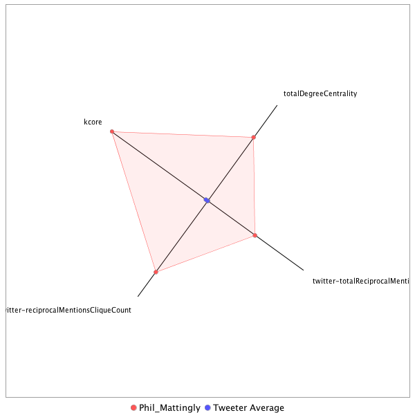

This tweeter has been identified as a super friend. Its target audience and hashtag and word usage are analyzed below.
Basic Statistics
Number of direct followers 36528 The peak number of followers that the tweeter had during any time period. Number of retweeters 265 Number of agents that retweeted the key influencer. Number of secondary followers 59388496 The sum of the followers of those who retweeted the key influencer.
Measure Values of Super Friends node versus Tweeter Average
This compares the measure values of the key influencer with the average values across all tweeters. For each measure line, the center-point means zero and the end-point means the maximum score across all tweeters.

Where was the influencer?
The agent is not recorded as being in any locations. Either he tweeted without geo-tags or we have no information about the tweets he sent.
The agent and retweeters were in 43 different locations.

What hashtags did the influencer use?
This displays the top ranked hashtags that the influencer and its retweeters used.
Rank hashtag Count 1 AHCA 935 2 Comey 646 3 pharma 598 4 Obamacare 488 5 TrumpCare 474 6 ComeyHearing 449 7 BREAKING 447 8 mtal 438 9 biotech 384 10 CNNsotu 373 11 ACA 369 12 FDA 369 13 GA06 368 14 Russia 319 15 TheLead 319 16 ParisAgreement 285 17 Trump 263 18 MemorialDayWeekend 237 19 NIH 233 20 VAGov 217 21 drugprices 177 22 SCOTUS 173 23 healthcare 170 24 AMR 152 25 Manchester 145 26 ComeyDay 130 27 TrumpBudget 129 28 trumprussia 121 29 ge2017 120 30 ComeyFiring 115 31 MTpol 115 32 Qatar 115 33 sallyyates 113 34 MemorialDay 111 35 ComeyTestimony 107 36 FF 106 37 potusabroad 103 38 NAFTA 102 39 WrongChoiceAct 102 40 covfefe 99 41 Medicaid 95 42 CDC 92 43 drugpricing 91 44 CongressionalBaseballGame 90 45 Syria 85 46 ThisWeek 82 47 omnibus 82 48 Opioids 80 49 ParisAccord 80 50 travelban 80 51 SessionsHearing 79 52 txlege 79 53 climate 77 54 climatechange 76 55 RiyadhSummit 75 56 China 74 57 CR 71 58 ISIS 71 59 Nats 70 60 TheBachelorette 68 61 TBT 66 62 fakenews 65 63 science 65 64 CAPIdeas 62 65 FBI 62 66 Iran 62 67 Israel 61 68 SC05 60 69 NorthKorea 59 70 US 59 71 Alexandria 57 72 LondonBridge 57 73 opioid 57 74 NATO 56 75 alsen 56 76 FOIA 55 77 FTN 54 78 MAGA 53 79 ethanol 53 80 copolitics 52 81 Afghanistan 51 82 DBCFT 51 83 HHS 51 84 PDUFA 51 85 tcot 51 86 SaudiArabia 50 87 badasswomenDC 50 88 gapol 50 89 ManchesterBombing 49 90 CBO 47 91 Venezuela 46 92 Ebola 45 93 FarewellOldChum 45 94 Saudi 45 95 SethRich 44 96 MTP 43 97 snl 43 98 JFK100 42 99 Paris 42 100 infrastructureweek 42
Tweet List
This displays all of the tweets of the influencer ordered from earliest to latest. Click on a tweet to see its status in Twitter.
Number Tweet ID Date Message 1 859800137933238272 2017-05-03 12:01:41-04 this is totally gonna be one of those days where members "haven't read" or "are still reading" a clear cut amendment 7 hrs from now isn't it 2 859793483388907520 2017-05-03 11:35:15-04 this feels like a decade ago https://t.co/2ATkO4F5Z5 3 859787792032858112 2017-05-03 11:12:38-04 .@RepFredUpton says he believes "it is likely now to pass in the House," but says he's not on the whip team 4 859787362615926784 2017-05-03 11:10:55-04 Upton says the amendment "is something both sides of our party endorse." 5 859787302113095681 2017-05-03 11:10:41-04 Upton: "This money will put downward pressure on what premium increases are there." 6 859787217966948352 2017-05-03 11:10:21-04 Upton Amendment is $8 billion over 5 years $1 billion per year for the first two years, $2 billion for the next three 7 859786977763352576 2017-05-03 11:09:24-04 .@USRepLong: "There's still work to be done on the votes, I believe." 8 859786634140758016 2017-05-03 11:08:02-04 .@USRepLong is now a YES on the AHCA with the new amendment 9 859786545129238528 2017-05-03 11:07:41-04 .@RepFredUpton is now a YES on the AHCA with the new amendmentamendment 10 859785360141889537 2017-05-03 11:02:58-04 RT @carloslcurbelo: I just reiterated to @HouseGOP leaders that #AHCA in its current form fails to sufficiently protect Americans with pre-… 11 859783223303450624 2017-05-03 10:54:29-04 Or was desperately looking for any reason to get to yes. https://t.co/jkGD2KRTdp 12 859780627054374912 2017-05-03 10:44:10-04 Comey: "It makes me mildly nauseous to think we might have had some impact on the election." 13 859780494350843904 2017-05-03 10:43:38-04 RT @frankthorp: Comey says when he was told about Clinton emails on Weiner's laptop he only saw 2 options: 1) Speak 2) Conceal 14 859779542684192768 2017-05-03 10:39:51-04 At the moment, nobody directly involved seems to have the answer to this question. Gonna be a hell of a day. https://t.co/glaGmzQTzL 15 859779369732108289 2017-05-03 10:39:10-04 So Q is, if this amendment is included, and it's unlikely to solve the central issue, will it be enough, for enough members to get to 216 16 859779065024315392 2017-05-03 10:37:57-04 MacArthur's point was that for many members, it's that pre-exist is being touched at all, no matter the other layers included. https://t.co/AeYlVmldvT 17 859778716330848257 2017-05-03 10:36:34-04 of note on the Upton amendment, MacArthur himself said yesterday adding more $ wasn't the silver bullet for most "NOs"/undecideds. 18 859777824995115009 2017-05-03 10:33:02-04 RT @byrdinator: Some more details on Meadows' involvement in negotiations with Upton yesterday: https://t.co/I1Gn4ietxK https://t.co/UCXC7s… 19 859776822019579905 2017-05-03 10:29:02-04 .@mj_lee reports the Freedom Caucus is good w/ the Upton amendment (sidenote: Meadows was instrumental in negotiations w/ Upton) 20 859775515271540736 2017-05-03 10:23:51-04 RT @tomlobianco: Grassley opens "Where is all this speculation about collusion coming from?" #ComeyHearing 21 859770174395875328 2017-05-03 10:02:37-04 RT @AlexNBCNews: NOW---> President Trump is currently meeting about healthcare with Reps Upton, Long, Walden and Burgess per @KWelkerNBC 22 859754719731908608 2017-05-03 09:01:13-04 Two cardinal rules of a leg operation: 1. don't talk whip counts 2. don't talk vote timing/strategy until it's officially scheduled https://t.co/kpzoRSgNxp 23 859753653682544642 2017-05-03 08:56:59-04 There are days when it's almost as if the WH is intentionally trying to undercut House leaders on AHCA: https://t.co/bS8NnCQefD 24 859752170429849601 2017-05-03 08:51:05-04 Ryan on the Upton AHCA amendment: "His amendment that he’s working is something that nobody has a problem with. it’s actually helping." 25 859751114367000577 2017-05-03 08:46:53-04 .@SpeakerRyan declines to say if the House will vote before recess (sticking w/ his stated policy: when they have the votes, they'll vote.) 26 859750807482359810 2017-05-03 08:45:40-04 .@SpeakerRyan to @hughhewitt on AHCA: “We’re getting extremely close.” 27 859749260224585733 2017-05-03 08:39:31-04 .@SpeakerRyan to @hughhewitt: "The wall itself is something we're going to be dealing with this summer." 28 859748661827448832 2017-05-03 08:37:08-04 .@SpeakerRyan starts @hughhewitt interview w/ draft recap, says regardless of results, at least they aren't Bears fans (fact check: true.) 29 859741063912845312 2017-05-03 08:06:57-04 good @rachaelmbade/@kyledcheney rundown of who we all need to keep our eyes on a make or break day for the AHCA: https://t.co/WfsfRhTPvf 30 859735685762351104 2017-05-03 07:45:35-04 .@USRepLong & @RepFredUpton are heading to the White House today to talk about their proposal to add new money to AHCA for pre-existing 31 859733149676433409 2017-05-03 07:35:30-04 here we go... https://t.co/qvuNsZ50sH 32 859566229144711168 2017-05-02 20:32:13-04 RT @rollcall: Meet the dogs of the House https://t.co/lZEEeIm2fG https://t.co/1yQ1R40qT6 33 859544645822558208 2017-05-02 19:06:27-04 RT @burgessev: Update: Graham now says he won't hold up spending bill, ending shortest shutdown threat https://t.co/1YY4WUGU1D 34 859541044626690048 2017-05-02 18:52:09-04 @StevenTDennis https://t.co/3FkhAJiVkw 35 859528904515694592 2017-05-02 18:03:54-04 The U.S. Senate, by a vote of 61-37, has confirmed Jay Clayton to be chair of the SEC. 36 859515114575331330 2017-05-02 17:09:06-04 Yates to testify she gave "forceful warning to the White House regarding then-National Sec. Adviser Michael Flynn" https://t.co/jrHbX45YL2 37 859509909318225920 2017-05-02 16:48:25-04 "The Heritage Foundation’s Board of Trustees, by a unanimous vote, has asked for and received the resignation of Jim DeMint" https://t.co/ji6XHIcNAa 38 859482840945352706 2017-05-02 15:00:52-04 .@VP Pence tells @TheOtherKeppler to "stay tuned" when asked about health care. (Pretty sure that's fifth time he's told her that this wk.) 39 859481994232832000 2017-05-02 14:57:30-04 Kremlin readout/White House readout of Pres. Trump's call with Pres. Put in: https://t.co/1eP1RqXogr 40 859481121897185280 2017-05-02 14:54:02-04 RT @jeremyherb: .@LindseyGrahamSC calls on Susan Rice to testify at hearing, via @mkraju https://t.co/XKIVAaSh4s 41 859481062593966080 2017-05-02 14:53:48-04 Of note on this: this is an option members are bringing up, but one that hasn't been (and may not be at all) deployed by Leaders yet. https://t.co/QUYNk5YdmD 42 859480492873314305 2017-05-02 14:51:32-04 RT @byrdinator: Meadows hasn't heard anything about a potential amendment to give more $ to high risk pools. Says he thinks there won't be… 43 859480000013246464 2017-05-02 14:49:35-04 .@RepTomMacArthur says there are "some talks" about adding new money to finance risk pools, but he believes current $130bn is sufficient 44 859468409406459904 2017-05-02 14:03:31-04 Mulvaney on Administration continuing funding for CSRs: "We have not made any decisions at all on May." 45 859465576179216385 2017-05-02 13:52:16-04 RT @seungminkim: It is NOT a CR, people 46 859449780837249025 2017-05-02 12:49:30-04 RT @ElizLanders: First on @CNN: @acosta reports that former Texas GOP Senator Kay Bailey Hutchison is the leading contender to become U.S.… 47 859446752155488258 2017-05-02 12:37:28-04 RT @VP: TUNE IN! Speaking with @rushlimbaugh live now. 48 859444045218807810 2017-05-02 12:26:42-04 RT @margarettalev: Tune in now! @CNN @DanaBashCNN @carolelee @jeffzeleny @Phil_Mattingly and I #InsidePolitics 49 859438246786461700 2017-05-02 12:03:40-04 RT @frankthorp: Trump boasts about increases in defense spending in the govt funding bill, adding "And we didn't do any touting like the De… 50 859437168384782336 2017-05-02 11:59:23-04 RT @edatpost: Then, Trump asks the House GOP members: “How’s health care coming folks? ... I think it’s time. They know it’s time.” 51 859420812616638464 2017-05-02 10:54:23-04 .@RepFredUpton, former E&C chairman, on MacArthur amendment: “I told leadership I cannot support this bill with this provision in it.” https://t.co/oupe0ukUhp 52 859420386861121536 2017-05-02 10:52:42-04 Here's the @RepFredUpton radio interview where he says he's a NO on AHCA: https://t.co/uBwxnHVrM8 53 859413317173030913 2017-05-02 10:24:36-04 fwiw, House GOP strategy re: Planned Parenthood was always via health care bill/reconciliation Always considered the most realistic path. 54 859412815278477314 2017-05-02 10:22:36-04 Ryan on Pres. Trump's shutdown tweet: "We’ve got a long ways to get between now and September." Says he shares Trump's frustration on Dems 55 859412066851008512 2017-05-02 10:19:38-04 .@SpeakerRyan: "The president has been nothing but helpful on health care." 56 859411004312236032 2017-05-02 10:15:25-04 Scalise says the MacArthur Amendment provides protections for pre-existing conditions in "multiple layers that even Obamacare doesn't do." 57 859410017006563328 2017-05-02 10:11:29-04 RT @DaniellaMicaela: Paul Ryan on new funding bill: I cannot understate how much of a game-changer this is https://t.co/w4KwAYOz8v 58 859407845271511040 2017-05-02 10:02:51-04 Where's Allen West when you need him https://t.co/63Rj55u1un 59 859401049634996224 2017-05-02 09:35:51-04 Takeaway from inside closed-door GOP conference meeting this AM, per one member: "We still don't have the votes. Not much more to it." 60 859397948177870848 2017-05-02 09:23:32-04 RT @mkraju: McConnell and GOP leaders insisted they would NOT invoke nuclear option to change filibuster rules on legislation. https://t.co… 61 859396727207493632 2017-05-02 09:18:41-04 RT @burgessev: This is not going to go over well in the GOP caucus today https://t.co/0O14xmaBJl 62 859382395354714112 2017-05-02 08:21:44-04 RT @benjohnanderson: My latest from Afghanistan airs this Friday on @HBO @vicenews and I hope everyone watches it https://t.co/hPrPnetNVN #… 63 859357418328817664 2017-05-02 06:42:29-04 RT @AC360: FBI translator goes rogue and marries an ISIS terrorist https://t.co/wMqENNQhna @DrewGriffinCNN has more. https://t.co/4NmGmOMeIf 64 859213461166993408 2017-05-01 21:10:27-04 RT @jeffzeleny: Tuesday's scheduled call with Putin is the third call @realDonaldTrump has made to the Russian leader since becoming presid… 65 859110753932107780 2017-05-01 14:22:19-04 RT @RichardRubinDC: New from me: Can't fit your tax cut in the 10-year window? Make the window bigger. https://t.co/nmQZP9Y75n via @WSJ 66 859108024169975809 2017-05-01 14:11:29-04 RT @FoxReports: Billy Long's 'no' is a big deal because he sits on the committee of jurisdiction: Energy and Commerce. He voted this bill o… 67 859078175283974144 2017-05-01 12:12:52-04 RT @BradMBolton: @realDonaldTrump gets his own Make Community Banking Great Again Hat! @ICBA https://t.co/Iot8pcRhm4 68 859072778162581504 2017-05-01 11:51:25-04 @mattlehrich Depends on member/district/CRA. Some are very targeted to aid impt biz interests in very specific districts. Others not so much 69 859068388945137665 2017-05-01 11:33:59-04 This doesn't get much attention, but WH (correctly) points out it plays very well for certain members back home in their districts: https://t.co/xE7uFuzXsA 70 859066529866027008 2017-05-01 11:26:36-04 RT @davecclarke: NEWS YOU CAN USE: What’s in the spending agreement? @edatpost & @kelsey_snell read it so you don’t have to. https://t.co/b… 71 859066251980746753 2017-05-01 11:25:29-04 RT @scottwongDC: Lots of praise for retiring Rep. @RosLehtinen today, including from across the aisle. @RepWilson https://t.co/ufbTv6TIJs 72 859062547852427264 2017-05-01 11:10:46-04 RT @DavidWright_CNN: .@VP Pence on CBS: "President Trump in a very real way has restored the credibility of American power." Points to Syri… 73 859060709241573376 2017-05-01 11:03:28-04 RT @NickTimiraos: Mnuchin on axing the state and local tax deduction: We don’t think it’s the federal government’s job to be subsidizing st… 74 859060295167332352 2017-05-01 11:01:49-04 RT @norbertjmichel: Heritage Action Supports Chairman Hensarling’s Financial CHOICE Act (H.R. 10) https://t.co/4twVJuQEpq via @heritage_act… 75 859045326002540545 2017-05-01 10:02:20-04 RT @sahilkapur: .@SpeakerRyan notes that Democrats backed off their insistence on parity between defense and nondefense spending in the omn… 76 859027356614352897 2017-05-01 08:50:56-04 RT @ThePlumLineGS: News: Internal Dem polling and focus groups I've viewed shows Dems still face serious problems on the economy: https:/… 77 859025084064903169 2017-05-01 08:41:54-04 RT @lachlan: "People don't ask that question, but why was there the Civil War? Why could that one not have been worked out?" This is reall… 78 859019676814331904 2017-05-01 08:20:25-04 "De Niro got the panel together after a back-to-back screening of Part 1 & 2" Why would they skip Part 3? Andy Garcia gets no respect. https://t.co/Z6V6pLDGWU 79 859018962981593088 2017-05-01 08:17:35-04 RT @sahilkapur: FULL TEXT of the $1.07 trillion government funding legislation. https://t.co/YMRi8kEFZa 80 859015793039769601 2017-05-01 08:04:59-04 RT @jaketapper: Trump reelection campaign puts out TV ad touting first 100 days https://t.co/vg8TQ1jH9I via @youtube 81 859015302771871745 2017-05-01 08:03:02-04 RT @rachaelmbade: There's a fear among Rs that if they don't pass repeal b4 Thursday recess, they lose momentum that will never come again.… 82 859013103329177601 2017-05-01 07:54:18-04 Gary Cohn: we currently have the votes. Reince: we think we will have the votes. Who's next on the magical WH AHCA whip count tour? 83 859012156628639745 2017-05-01 07:50:32-04 Do you have the votes on health care? .@Reince45: "I think we will." https://t.co/L5t0gA7vwz 84 859011605039902720 2017-05-01 07:48:20-04 "Seriously, you want me to go back and tell the people of Nevada 'the Senate will make it better?'" https://t.co/9C77CmcbwF 85 859010969778966530 2017-05-01 07:45:49-04 What's in, and what's out, of the government spending bill deal, via @tedbarrettcnn & @mkraju https://t.co/SbUTGnkWkm 86 859009854345814016 2017-05-01 07:41:23-04 For context, House GOP leaders are optimistic, but this is pretty far out in front of where they currently are, publicly or privately https://t.co/EN5sPZtjkT 87 859008109540499456 2017-05-01 07:34:27-04 "This is gonna be a great week. We're gonna get health care down to the floor of the House. We're convinced we have the votes." https://t.co/VvnPeR8ufs 88 859007439336878080 2017-05-01 07:31:47-04 RT @NorahODonnell: "I really am confused why people don’t understand what we’re doing here" Gary Cohn on Trump tax cut @CBSThisMorning #new… 89 859004487310200832 2017-05-01 07:20:03-04 Strong bg quote effort here from this administration official: https://t.co/P7ZQSOxNrb https://t.co/QATSBSxeao 90 862382381302501378 2017-05-10 15:02:36-04 RT @ZekeJMiller: .@LaraLeaTrump and @SecretaryZinke are appearing at @GOP spring meeting in Coronado this week 91 862380084233154560 2017-05-10 14:53:28-04 Dem requests, per Schumer: *Career DOJ official selects special prosecutor *Comey testimony *Sessions/Rosenstein brief senate separately 92 862379673812074501 2017-05-10 14:51:51-04 .@SenSchumer now says Rosenstein shouldn't be the one to decide on a special prosecutor. Instead, a career DOJ official should make call. 93 862378997505810432 2017-05-10 14:49:09-04 "The questions are just swirling about. There are more every day, almost every hour." - @SenSchumer on the floor now 94 862378133621813248 2017-05-10 14:45:43-04 this is true. https://t.co/gufXA6jTFX 95 862377205296488448 2017-05-10 14:42:02-04 RT @mattwhouse: Sen. Schumer will speak on the #Senate floor momentarily, following @SenateDems caucus meeting to discuss firing of Directo… 96 862377121003577344 2017-05-10 14:41:42-04 RT @FoxNews: TONIGHT, 6p ET: @BretBaier talks to @SpeakerRyan following Comey firing https://t.co/hXePNtD7lD https://t.co/Ir7lx0YhnL 97 862370753383198720 2017-05-10 14:16:24-04 .@mkraju reports that should Comey attend, this would be a closed/classified hearing https://t.co/JzxfkKL3Z9 98 862366787324837889 2017-05-10 14:00:38-04 .@SHSanders45 on the Rosenstein memo: "That was the final piece that moved the president" to take action on Comey. 99 862365556766371840 2017-05-10 13:55:45-04 RT @lachlan: Sanders: Trump didn't direct Rosenstein to write the letter, "but he did have a conversation with the deputy AG on Monday" at… 100 862365156378120192 2017-05-10 13:54:09-04 .@SHSanders45 says Pres. Trump has been considering firing FBI Director Comey since he was elected 101 862364900043223041 2017-05-10 13:53:08-04 .@SHSanders45 says Pres. Trump lost confidence in FBI Director Jim Comey over the course of several months 102 862363075944603649 2017-05-10 13:45:53-04 Jim Comey has been invited to testify at Tuesday's Senate Intelligence Committee hearing. No word yet if he will accept. 103 862329354994540544 2017-05-10 11:31:54-04 RT @mkraju: Just asked Grassley about Andy McCabe as acting FBI Director, and Senate Judiciary Chairman raises CONCERNS, points to wife's D… 104 862329158424309760 2017-05-10 11:31:07-04 everyone is trolling everyone https://t.co/OUwvTAsXGC 105 862328251397672961 2017-05-10 11:27:31-04 RT @jhseher: Big #InsidePolitics: why now on Comey; Cap Hill fallout; what's next - @JohnKingCNN, @margarettalev, @Phil_Mattingly, @mkhamme… 106 862314775346372609 2017-05-10 10:33:58-04 RT @FoxReports: Sen. Jeff Flake grappling with Comey's Firing: “I just don’t know why this happened now. I’m having trouble with it still,” 107 862312002257072128 2017-05-10 10:22:56-04 .@tedcruz on Comey firing: https://t.co/pCHYMxH2ka 108 862305836844056576 2017-05-10 09:58:27-04 Comey's former private sector boss (and legendary hedge fund manager) weighs in: https://t.co/Q5fyu4Fw6u 109 862304385103253504 2017-05-10 09:52:40-04 .@SenJohnMcCain, to @mkraju: if you fire someone like Comey "you better have a good explanation and so far I have not seen that." 110 862303438004248576 2017-05-10 09:48:55-04 RT @mkraju: McConnell offers stern defense of Comey firing 111 862303293200097280 2017-05-10 09:48:20-04 Schumer requests McConnell call closed, all senator separate briefings with the AG and Deputy AG to ask questions about the Comey firing 112 862302656915812352 2017-05-10 09:45:48-04 .@SenSchumer calls on Deputy AG Rosenstein to appoint a special prosecutor for the Russia probe 113 862299614740971521 2017-05-10 09:33:43-04 A second statement from top Judiciary Committee Dem @SenFeinstein: https://t.co/I2Ox2CfiVo 114 862299026133327874 2017-05-10 09:31:23-04 Sen. Sherrod Brown tells reporters a half dozen or so of his GOP colleagues told him they're interested in a special prosecutor or panel 115 862296457055010816 2017-05-10 09:21:10-04 RT @JohnJHarwood: Grassley to Fox on Trump firing Comey: "of course I support it" 116 862287508897484800 2017-05-10 08:45:37-04 RT @margbrennan: "Was he fired? You're kidding, you're kidding!" Russia's Foreign Minister Lavrov scoffs @StateDept reporters shouting ques… 117 862266578729144320 2017-05-10 07:22:27-04 and kicking myself that @burgessev kicked my ass on this great read on @tedcruz the...wait for it...dealmaker? https://t.co/dZCosyDEYw 118 862266141166665732 2017-05-10 07:20:42-04 good @costareports/@WaPoSean piece on the Senate dynamics/dealmakers/hurdles on health care https://t.co/D7ewiiP7NT 119 862261451154763776 2017-05-10 07:02:04-04 "'This is a shitshow,' one GOP aide said in a text message." https://t.co/I3ejjvcxkp 120 862260958282088448 2017-05-10 07:00:07-04 Full @CNN team tick tock, QB-ed by @Kevinliptakcnn, on how the Comey firing happened - and what happened next https://t.co/I3ejjvcxkp 121 862260732880191489 2017-05-10 06:59:13-04 RT @ryanobles: On @NewDay- @SenAngusKing of Maine says the Senate Intel Committee should hire Comey to run their Russian investigation. 122 862137122807054340 2017-05-09 22:48:02-04 manu ginobili can't be less than 89 years old 123 862135297018130433 2017-05-09 22:40:47-04 RT @juliehdavis: And it's official: Trump will meet w Russian Foreign Minister Sergei Lavrov tomorrow in Oval Office, per White House, lone… 124 862134606379851777 2017-05-09 22:38:02-04 .@SenSchumer has called all Senate Dems to be in their chairs for McConnell floor remarks tomorrow morning Caucus meeting on Comey after 125 862130953166237696 2017-05-09 22:23:31-04 in completely unrelated news, he'll of a playoff basketball game between the Spurs and Rockets rn 126 862130084379070464 2017-05-09 22:20:04-04 RT @brianstelter: HANNITY: "This is the first step in President Trump DRAINING THE DEEP STATE SWAMP." 127 862121867171299329 2017-05-09 21:47:25-04 GOP Sen. @BenSasse: "the timing of this firing is very troubling." https://t.co/2bke3bwh51 128 862116773029662725 2017-05-09 21:27:10-04 .@PressSec tells reporters @POTUS received the Rosenstein memo today and made the decision to fire Comey based on that, per @Kevinliptakcnn 129 862114643799572480 2017-05-09 21:18:43-04 RT @AC360: FBI Director James Comey learned from the TV that he was fired, according to law enforcement sources. https://t.co/uOt3qdbmPD 130 862113568044572672 2017-05-09 21:14:26-04 .@evanperez Details on subpoenas, via @evanperez @ShimonPro & @PamelaBrownCNN https://t.co/rvWMKRp1SF https://t.co/LgVmEH6wFV 131 862112967600599040 2017-05-09 21:12:03-04 Prosecutors have issued grand jury subpoenas to associates of former NatSec Adviser Michael Flynn seeking business records, per @evanperez 132 862112228010594304 2017-05-09 21:09:07-04 RT @ZekeJMiller: .@PressSec says Trump reached out to house & senate leadership. (Spoke to Ryan and Schumer, reached out to goodlatte, gras… 133 862112150428553220 2017-05-09 21:08:48-04 CNN exclusive: Grand jury subpoenas issued in FBI's Russia investigation https://t.co/rvWMKRp1SF 134 862107166542626817 2017-05-09 20:49:00-04 .@KellyannePolls: "As president of the United States he needs confidence in his FBI Director and he doesn't have it." 135 862106174426054656 2017-05-09 20:45:03-04 .@KellyannePolls, re: allegations that Comey's firing has something to do w/ Russia probe: "Today's actions have nothing to do with that." 136 862105465303576576 2017-05-09 20:42:14-04 .@KellyannePolls, to @andersoncooper, on Schumer allegations: "He's wrong. This is not a coverup." 137 862093010036817920 2017-05-09 19:52:45-04 RT @jaketapper: Former DNI Clapper: "I have immense respect and admiration for Jim Comey. This is a tremendous loss for the FBI and the nat… 138 862091454000353281 2017-05-09 19:46:34-04 .@DanaBashCNN is reporting that the White House officials weren't expecting the blowback they're getting re: Comey's firing. 139 862089989085167616 2017-05-09 19:40:44-04 RT @justinamash: My staff and I are reviewing legislation to establish an independent commission on Russia. The second paragraph of this le… 140 862089645110296576 2017-05-09 19:39:22-04 RT @AliWatkins: Just in from Burr: “I am troubled by the timing and reasoning of Jim Comey’s termination." https://t.co/sNl98EVRWJ 141 862089355724304384 2017-05-09 19:38:13-04 RT @relucasz: Senate Intel Committee's Republican chairman @SenatorBurr says he's "troubled by the timing and reasoning of Jim Comey's term… 142 862085743858110465 2017-05-09 19:23:52-04 RT @CassieSpodak: CNN's justice correspondent @evanperez says Comey is out of town and staff had to inform him of the decision https://t.co… 143 862084805483274240 2017-05-09 19:20:09-04 RT @wpjenna: Sen. Chuck Schumer says he got a call from Trump: "I told the president, Mr President, with all due respect, you're making a b… 144 862084525853204485 2017-05-09 19:19:02-04 .@RoyBlunt: "I believe new leadership at the FBI will restore confidence in the organization.” 145 862082579054440448 2017-05-09 19:11:18-04 .@SenJohnMcCain renews call for select committee: "I am disappointed in the President's decision to remove James Comey from office." 146 862082305128620032 2017-05-09 19:10:12-04 RT @jeffzeleny: This decision by @realDonaldTrump has been discussed in Oval Office for at least last week, but it was a secret guarded ver… 147 862081961879326720 2017-05-09 19:08:51-04 .@MarkWarner says it "sure seems curious" that Comey was fired just as Sen. Intel investigation is "starting to pick up." 148 862081834569658368 2017-05-09 19:08:20-04 Warner: "I have a lot of faith in Jim Comey. Still want him to come testify, even as former FBI Director." 149 862079823522541569 2017-05-09 19:00:21-04 Senate Intel Vice Chair @MarkWarner, top Dem on Russia probe, calls Comey firing "shocking" and "deeply troubling." 150 862075290545205251 2017-05-09 18:42:20-04 No. 2 Senate Dem @SenatorDurbin on Comey firing: https://t.co/ugOgIELsdQ 151 862072456265302016 2017-05-09 18:31:04-04 .@SenWhitehouse: Comey firing "raises massive questions." https://t.co/crb9KROVNf 152 862072098105282560 2017-05-09 18:29:39-04 Clear that Dems will, to a person, use Comey's firing to pressure appointment of special prosecutor/commission on Russia. @SenBillNelson: https://t.co/r3VjkdcA5k 153 862071287732109312 2017-05-09 18:26:26-04 Dem Sen. @SenBobCasey calls Comey firing "Nixonian," calls for special prosecutor for Russia probe: https://t.co/NZiw8AECK2 154 862070870252167169 2017-05-09 18:24:46-04 .@ChuckGrassley, top Judiciary Republican, on Comey firing: https://t.co/wB6oRfStnO 155 862068418580762624 2017-05-09 18:15:02-04 .@SenFeinstein, top Judiciary Dem, got a call from Pres. Trump about Comey's firing at 5:30pm. https://t.co/pxeJD49q59 156 862067817826443264 2017-05-09 18:12:38-04 This is one hell of a memo from Dep. AG Rosenstein recommending Comey's removal to the Attorney General https://t.co/5WTyoY9Hx2 157 862066525104111616 2017-05-09 18:07:30-04 .@tedcruz tells reporters he won't comment until he reviews the facts behind Comey's firing. Pretty clear he wasn't given a headsup. 158 862065266842316800 2017-05-09 18:02:30-04 Letter from Attorney General Jeff Sessions to Pres. Trump recommending the removal of FBI Director Jim Comey: https://t.co/ORDYzOejxg 159 862064299933671427 2017-05-09 17:58:40-04 Pres. Trump's letter firing FBI Director Comey, via @Kevinliptakcnn https://t.co/RUqyDbFrTf 160 862062389302353921 2017-05-09 17:51:04-04 .@LindseyGrahamSC supports Pres. Trump's decision to fire Comey: https://t.co/uOEs2a8bBc 161 862061530610880514 2017-05-09 17:47:39-04 President Trump has informed FBI Director Comey he "has been terminated and remove from office." https://t.co/uxYHJH0ism 162 862060717037559808 2017-05-09 17:44:25-04 BREAKING: FBI Director Jim Comey has been fired, @PressSec tells @jeffzeleny 163 862057011109920768 2017-05-09 17:29:42-04 Clock runs out on CRAs this week... https://t.co/kO9YqiOJRl 164 862056580434587648 2017-05-09 17:27:59-04 *clicks on digital video link* *greeted by advocacy ad about the durbin amendment* *starts twitching* 165 862048180363460609 2017-05-09 16:54:36-04 RT @joshrogin: Watch @clarissaward's harrowing report from the site of the Syrian chemical weapons attack https://t.co/Gj2OAezftG (Warning:… 166 862037286837522434 2017-05-09 16:11:19-04 RT @edatpost: Who will decide what the Senate’s health bill looks like? Follow the Medicaid state senators. @pkcapitol https://t.co/3zpdKIL… 167 862020010520322050 2017-05-09 15:02:40-04 RT @burgessev: Full quote: “That is such a bogus issue. I guess you guys have swallowed it hook line and sinker." https://t.co/KtboT8Qonf 168 862013799334858758 2017-05-09 14:37:59-04 .@SenatorCollins gave presentation on Maine's risk pool at Senate GOP lunch, per @FoxReports. Said House bill needs "great deal" more money 169 862011833334595585 2017-05-09 14:30:11-04 Senators coming out of lunch make clear every conference meeting for the foreseeable future is going to be all about health care. 170 862011482883731456 2017-05-09 14:28:47-04 RT @DaviSusan: "The working group that counts is all 52 senators," -@SenateMajLdr on hc working group's lack of women members. Says all inc… 171 862011407516217344 2017-05-09 14:28:29-04 GOP Sen. Hoeven says McConnell made clear in closed door lunch anyone who wants to be involved in HC talks can/will be. Group(s) are fluid. 172 862002278047338496 2017-05-09 13:52:12-04 .@dylanlscott's Q&A w/ @Avik on the AHCA is a really good read: https://t.co/FWtOGiwQwZ 173 861999162426101760 2017-05-09 13:39:50-04 RT @rabrowne75: Trump authorizes Pentagon to equip Kurdish fighters in the Syrian Democratic Forces to aid assault on Raqqa. Turkey long op… 174 861997629533769728 2017-05-09 13:33:44-04 RT @BenjySarlin: Sen. Portman (R-OH) mentioned he participated in a meeting only with senators from Medicaid expansion states in addition t… 175 861985159641526272 2017-05-09 12:44:11-04 RT @DaviSusan: Freedom Caucus member Rep. Raul Labrador, R-Idaho, is running for governor: https://t.co/96ghCuEbkZ via @lewistontribune 176 861981423661719552 2017-05-09 12:29:20-04 RT @ofirgendelman: PM met w/ US Chairman of the Joint Chiefs of Staff:Our alliance is good for security and for peace, looking forward to w… 177 861928426504155136 2017-05-09 08:58:45-04 RT @tackettdc: How the White House Explains Waiting 18 Days to Fire Michael Flynn https://t.co/3J4y5dbKWr 178 861928284296273921 2017-05-09 08:58:11-04 @codykeenan but uh why would you kick the bowling ball Cody? 179 861927224672493569 2017-05-09 08:53:58-04 RT @Kevinliptakcnn: Delay caused by a scheduling conflict, per WH. Trump aiming to decide by the G7 in a couple weeks. https://t.co/5JfokCF… 180 861923909553336321 2017-05-09 08:40:48-04 @adamslily @TyroneGayle @CapitolAlert tbh all that really matters is if your boss made The Hill's list of 287 democrats who may or may not run in 2020 181 861913439085748225 2017-05-09 07:59:12-04 U.S. officials say the troop increase in Afghanistan could be between 3,000 and 5,000 https://t.co/lvArgRCYLe 182 861913111246274561 2017-05-09 07:57:53-04 The five (big) fights Republican senators will have on health care, via @FoxReports https://t.co/NwXhfKmjnM 183 861911329678004224 2017-05-09 07:50:49-04 RT @AP: South Korea exit poll of voters in presidential election sees victory for liberal Moon; official results hours away. https://t.co/r… 184 861904689968926720 2017-05-09 07:24:26-04 RT @AFP: #BREAKING China's Xi pledges to "defend" Paris Agreement with Macron: state media #climate 185 861743998741999617 2017-05-08 20:45:54-04 RT @seungminkim: Top McConnell aide Neil Chatterjee is being named to the Federal Energy Regulatory Commission, per White House statement 186 861712321697243136 2017-05-08 18:40:01-04 Cruz: "I would not be believing all of the unsubstantiated rumors of what is or isn't permissible under procedural rules." https://t.co/d0RrnjWdbo 187 861711988048703500 2017-05-08 18:38:42-04 .@tedcruz disputes the notion MacArthur won't survive the Byrd bath. Cruz: "Based on what?" 188 861711542831730688 2017-05-08 18:36:56-04 Cornyn didn't reject to MacArthur opt-out language. Said it had been misrepresented, but all remains "a work on progress." 189 861711222441422848 2017-05-08 18:35:39-04 .@JohnCornyn on health care: "I would tell people to take a breath and let the Senate do it's job. We're gonna get it done." 190 861663082116001792 2017-05-08 15:24:22-04 Yates: "To state the obvious, you don't want your national security adviser compromised by the Russians." 191 861662304861126657 2017-05-08 15:21:17-04 RT @politicoalex: Evan Jenkins makes it official in West Virginia senate https://t.co/kG3LEPkYIH 192 861661199418740736 2017-05-08 15:16:53-04 RT @ZekeJMiller: Yates: "And that had created a compromise situation" https://t.co/H5UrTb4aPm 193 861660808643825664 2017-05-08 15:15:20-04 Yates says she informed the WH counsel's office that Flynn had been interviewed by FBI. WH Counsel asked how he did. 194 861660125051985921 2017-05-08 15:12:37-04 RT @SabrinaSiddiqui: Trump spoke by phone with Emmanuel Macron to congratulate him on victory in French election. WH readout: https://t.co/… 195 861659830142083076 2017-05-08 15:11:27-04 Yates says she had 2 in person meetings and 1 phone call w/ the WH counsel re: Michael Flynn 196 861658239641026560 2017-05-08 15:05:07-04 RT @Shawna: Former DNI Clapper's prepared statement conclusion. https://t.co/MZ2ARi3NIr 197 861649569012121600 2017-05-08 14:30:40-04 .@SenateMajLdr on Senate health care work: "This process will not be quick, or simple, or easy, but it must be done." 198 861640938871017473 2017-05-08 13:56:22-04 RT @PhilipRucker: Great @LATSeema read on Silicon Valley as a retirement community for politicos https://t.co/l97gCFz2I6 199 861621444924624896 2017-05-08 12:38:55-04 RT @POLITICO_Steve: Sen. Bill Cassidy (R-La.), who proposed the "Jimmy Kimmel test" on pre-existing conditions, will appear on Kimmel's sho… 200 861596372423888896 2017-05-08 10:59:17-04 RT @jenhab: Sen Lamar Alexander hopes to be a force on Obamacare repeal- Feb story with @burgessev even more relevant today https://t.co/Yw… 201 861583409642180608 2017-05-08 10:07:46-04 good news - i have an extra copy of "It's Dark and Hell is Hot" in my office. swing by whenever https://t.co/lHStZcCYYq 202 861580204149493760 2017-05-08 09:55:02-04 well this seems ominous, @burgessev https://t.co/pGDgfa5NM4 https://t.co/1Xa9u5iIz8 203 861579102121328640 2017-05-08 09:50:39-04 a remarkably effective explanation...until clip after clip after clip of Candidate Trump saying otherwise is then played... https://t.co/OAqUW94hsw 204 861578530282508288 2017-05-08 09:48:23-04 RT @82ndABNDiv: Happy #VEDay! Europe is free and safe for democracy thanks to the #GreatestGeneration to include our WWII AA Paratroopers!… 205 861531973222883328 2017-05-08 06:43:23-04 RT @mkraju: Lawmakers on Intel say they have huge amount of records to sift through and say inquiries could easily slip into '18 https://t.… 206 861397336433602561 2017-05-07 21:48:23-04 Trump to Announce Slate of Conservative Federal Court Nominees, via @adamliptak https://t.co/FgHeozJTPe 207 861351453264367616 2017-05-07 18:46:04-04 RT @SteveScalise: Behind the scenes: @reince meets with @housegop moments before historic vote to #RepealAndReplace #Obamacare https://t.co… 208 861312842657607680 2017-05-07 16:12:38-04 mmmk https://t.co/zpx8odSJyn 209 861282751458275328 2017-05-07 14:13:04-04 RT @cnnbrk: Macron is on course for a decisive win over Le Pen in the French presidential election, exit estimates say https://t.co/cPsttht… 210 861273023147593730 2017-05-07 13:34:25-04 Judy Woodruff, the Woman of the Hour - one of the kindest, most generous people in the business... https://t.co/bgDr5XN8s3 211 861210984035348480 2017-05-07 09:27:53-04 .@SpeakerRyan outlines argument repeatedly made members. Far worse to not do anything than vote for AHCA: "This is us keeping our word." 212 861210747044589569 2017-05-07 09:26:57-04 Asked if he's worried about a midterm wave, @SpeakerRyan: I'm not." 213 861208858378809345 2017-05-07 09:19:26-04 RT @ThisWeekABC: .@SpeakerRyan on health care bill: "We have multiple layers of protections for people with pre-existing conditions." https… 214 861207885518385152 2017-05-07 09:15:35-04 RT @burgessev: Priebus: "We don't buy that CBO score" 215 861184169879195648 2017-05-07 07:41:20-04 .@margarettalev. @jpaceDC. @jmartNYT. @JohnKingCNN. Come hang out w/ a bunch of super smart people (& me) at 8am on #InsidePolitics 216 861176233496891392 2017-05-07 07:09:48-04 OH Sec of State hops into the #OHGov R primary race https://t.co/WwOPaSPpny 217 861017918942961664 2017-05-06 20:40:43-04 RT @OhioState_MVB: The Buckeyes are BACK-TO-BACK National Champions! #GoBucks https://t.co/sSjANx7XgK 218 861017605485858816 2017-05-06 20:39:28-04 @alwaysonoffense loved every player on that team. Especially their bench. Rock, Chili, Ledee - all of them 219 861015405787320320 2017-05-06 20:30:44-04 @alwaysonoffense not even close. I'm still waiting for reality to hit these guys, but man this has been a fun first month-plus 220 861014451067244544 2017-05-06 20:26:56-04 this Yankees squad is the best team in the history of ever 221 861001236354674689 2017-05-06 19:34:26-04 RT @Yankees: Our Saturday so far: Double Single (run scored on error) RBI double Out RBI single SIngle 2-run double. 5-0 Yankees in the 1s… 222 860964939338534912 2017-05-06 17:10:12-04 if you aren't wearing the ZO2's on set tomorrow morning, you aren't a BIG BALLER jmart. period. https://t.co/pNSjjSwBj4 223 860962281139695618 2017-05-06 16:59:38-04 RT @CTowersCBS: "My mom certainly doesn't think I'm a dirty player! She says I'm the handsomest player!" https://t.co/MPdRXDDJPm 224 860954709800222722 2017-05-06 16:29:33-04 RT @LucasFoxNews: Pentagon names Navy SEAL killed in Somalia fighting al-Shabaab Senior Chief Special Warfare Operator Kyle Milliken, 38,… 225 860910272676024320 2017-05-06 13:32:58-04 RT @finnygo: National Security Advisor H.R. McMaster met w/Venezuelan National Assembly President Julio Borges Friday at White House. https… 226 860901454592315393 2017-05-06 12:57:56-04 RT @gdebenedetti: Dem ad teams working OT post-healthcare vote. Some sent cameras to the Hill to capture GOP House members celebrating http… 227 860901350028300288 2017-05-06 12:57:31-04 RT @reynoldscat: WaPo: Despite claims, the GOP health bill doesn’t classify rape or sexual assault as a preexisting condition https://t.co/… 228 860820141239676928 2017-05-06 07:34:49-04 RT @zackroday: Paul Ryan to campaign with Karen Handel on May 15 https://t.co/UP4Ng3zcm9 via @bluestein 229 860624089286922241 2017-05-05 18:35:47-04 RT @lrozen: Tillerson &Lavrov spoke today about efforts to de-escalate in Syria, per State readout. Tillerson looks forward to discuss furt… 230 860623934231900160 2017-05-05 18:35:10-04 RT @Reuters: UPDATE: Macron campaign says it has been the victim of a massive, coordinated hacking operation. https://t.co/dZ210WM8aZ https… 231 860611462439587847 2017-05-05 17:45:36-04 @bterris @TimAlberta Huh. Interesting interpretation https://t.co/hrmlfpXQ7B 232 860609254788661250 2017-05-05 17:36:50-04 .@TimAlberta is firmly w/ @bterris as a writer whose work i save til i have a real window to read and enjoy. so good https://t.co/Yrwjlu6IWJ 233 860585654593495042 2017-05-05 16:03:03-04 RT @JakeSherman: WASHINGTON (AP) - Trump's nominee for Army secretary withdraws, cites 'false and misleading' attacks against him. 234 860585561668636674 2017-05-05 16:02:41-04 (and that's in a story that includes another @GrahamBlog classic...) https://t.co/wJX2NmpHke 235 860585452646150144 2017-05-05 16:02:15-04 “It’s close to near-impossible. Except we’ll get it done." Orrin Hatch, never not my fave quote in a story https://t.co/3Tt8Yjp6gY 236 860584623247695872 2017-05-05 15:58:57-04 @Jamie_Weinstein you're going to make me buy this aren't you. i've been waffling for weeks. 237 860554414645497856 2017-05-05 13:58:55-04 RT @cam_joseph: .@SarahHuckabee says @realDonaldTrump signed FY17 budget compromise "just within the last hour" 238 860543052024356866 2017-05-05 13:13:46-04 RT @jmartNYT: Also fascinating to see a blunt argument for mobilization over persuasion in a changing state. Short-term play https://t.co/N… 239 860493922862338050 2017-05-05 09:58:33-04 To the man in the large black SUV, windows down, blasting "I Don't Want to Miss a Thing," I have some questions... 240 860476696167952386 2017-05-05 08:50:05-04 RT @TimAlberta: My #longread profile of Will Hurd, who cusses more casually and is less ideological than any politician I've known https://… 241 860472612228616192 2017-05-05 08:33:52-04 RT @business: JUST IN: Payrolls in U.S. rise by 211,000, jobless rate falls to 4.4% https://t.co/K9oRu32CDL https://t.co/fM4CoPmiYo 242 860461995014975490 2017-05-05 07:51:40-04 One US military member was killed and two wounded in Somalia Friday, @barbarastarrcnn reports 243 860460969297928192 2017-05-05 07:47:36-04 so many nuggets in this @maggieNYT/@GlennThrush piece on Reince... https://t.co/7W1PuOYhLI 244 860457893379940352 2017-05-05 07:35:22-04 .@parscale joins the Data Trust board: https://t.co/PoUSxtaf7Z 245 860291291229429760 2017-05-04 20:33:21-04 good @scottwongDC joint on House GOP legislative lessons learned: https://t.co/ziXPoZeydw 246 860286245678829568 2017-05-04 20:13:18-04 RT @maggieNYT: Trump, who used social media to attack HFC members instead of moderates, says if Twitter, "I really think it helped today wi… 247 860280105729503232 2017-05-04 19:48:55-04 kids are so much more awesome than the rest of us https://t.co/qf0AzzxeTq 248 860240505405308928 2017-05-04 17:11:33-04 RT @teddyschleifer: "AAN doesn’t anticipate spending one penny on members who chose not to side with President Trump and Speaker Ryan." htt… 249 860230688984924161 2017-05-04 16:32:33-04 RT @CNNPolitics: How every member voted on the health care bill https://t.co/m5Mb3FzU99 https://t.co/oYmwEZpXtf 250 860230409031954432 2017-05-04 16:31:26-04 RT @SenateCloakroom: @SenateMajLdr announced that we plan to move to the nomination of Robert Lighthizer to be United States Trade Rep. nex… 251 860229552613728256 2017-05-04 16:28:02-04 RT @RosieGray: interesting thread by former US amb to Israel on Trump's upcoming visit: https://t.co/utUlPyFJxa 252 860228815519350785 2017-05-04 16:25:06-04 RT @joshledermanAP: With fixed link: https://t.co/PhTvNS2bKE https://t.co/L7OGISOkZb 253 860219296898834434 2017-05-04 15:47:17-04 i appreciate the WH reporters getting a dose of the patented House "guess what, we brought 80 members to this press conference" treatment 254 860219050022121473 2017-05-04 15:46:18-04 .@senrobportman repeats major concerns about House bill's Medicaid expansion provisions. Key, key player to watch in the weeks ahead. https://t.co/phqmUHqyAx 255 860214639707213824 2017-05-04 15:28:46-04 RT @frankthorp: Sen Maj Whip Cornyn says the Senate will work "methodically" on a healthcare bill, noting "it’s going to take a while." 256 860214369749258240 2017-05-04 15:27:42-04 House members start chuckling when @SpeakerRyan says he knows Senate GOP is "eager to get to work" on health care 257 860214159040028672 2017-05-04 15:26:52-04 .@SpeakerRyan "I especially want to thank Reince Priebus" 258 860213485619249153 2017-05-04 15:24:11-04 Trump: "This has brought the Republican party together." 259 860212911687561221 2017-05-04 15:21:54-04 Trump calls the AHCA "very, very incredibly well crafted." 260 860212772516368384 2017-05-04 15:21:21-04 .@POTUS: "Make no mistake, this is a repeal and replace of Obamacare. Make no mistake about it. Make no mistake." 261 860212594325454848 2017-05-04 15:20:39-04 Pres. Trump: "We're gonna get this passed through the Senate, we're so confident." 262 860212064928845824 2017-05-04 15:18:32-04 .@VP Pence: "Thanks to the leadership of President Donald Trump, welcome to the beginning of the end of Obamacare." 263 860211477009059840 2017-05-04 15:16:12-04 House leaders now taking the stage at the Rose Garden to an ovation from their conference members 264 860210757983666181 2017-05-04 15:13:21-04 .@DarrellIssa, long an undecided on the AHCA who eventually went "yes", standing in the front row for the Rose Garden event 265 860208998255140864 2017-05-04 15:06:21-04 .@SenateMajLdr statement on House passage of AHCA: https://t.co/yiLSmUdPhF 266 860207343744757760 2017-05-04 14:59:47-04 RT @danmericaCNN: There are 23 Republicans in districts Hillary Clinton won. Nine voted against AHCA. Fourteen voted for the health care b… 267 860207226962796545 2017-05-04 14:59:19-04 RT @markknoller: Through the trees at WH, House Republicans can be seen arriving on a bus from the Capitol to attend health care vote event… 268 860197054097838080 2017-05-04 14:18:54-04 The U.S. House, by a vote of 217-213, has PASSED the AHCA 269 860196819686629376 2017-05-04 14:17:58-04 Democrats now chanting in unison "hey hey hey goodbye" and waiving across the aisle 270 860196722219393024 2017-05-04 14:17:34-04 Cheers go up as Republicans hit 216 votes. (It doesn't count til the vote is closed folks.) 271 860196588689518593 2017-05-04 14:17:03-04 .@RepEdRoyce has voted yes 272 860195716232351748 2017-05-04 14:13:35-04 @alwaysonoffense but look how far it has gotten HIM 273 860195487391129601 2017-05-04 14:12:40-04 THIS is the AHCA vote NOW 274 860194922942668800 2017-05-04 14:10:25-04 in fairness, only saw him do it once. mostly chatting with staff, getting ready for AHCA vote. don't want to unfairly malign his character! https://t.co/OeUZQix32M 275 860191684365352960 2017-05-04 13:57:33-04 Though McHenry is biting his nails/talking to staff, so he is clearly one of those "don't count your chickens" types https://t.co/k2vwr6ZCib 276 860191398720671744 2017-05-04 13:56:25-04 McCarthy, chilling McHenry, just observing Scalise just chatting w/ Tiberi Leaders appear very comfortable. 277 860189837185482753 2017-05-04 13:50:13-04 .@SpeakerRyan: "Let us pass this bill to take the next step to put Obamacare behind us." 278 860189605349478400 2017-05-04 13:49:18-04 RT @BresPolitico: >@SpeakerRyan: "You know, a lot of us have been waiting 7 years to cast this vote." 279 860189518426759168 2017-05-04 13:48:57-04 Member says there are buses outside waiting to take GOP members to the WH after this vote for event w/ @POTUS 280 860188719466389504 2017-05-04 13:45:46-04 Ryan: "Today we take the next step to repeal and replace Obamacare." 281 860188545067122689 2017-05-04 13:45:05-04 (so yeah, I think he's confident they've got this...) https://t.co/gKLHrGfSgg 282 860188481393483779 2017-05-04 13:44:50-04 .@SpeakerRyan is now up on the House floor. Receives a standing O from his conference. Starts by thanking people involved. 283 860188279626502145 2017-05-04 13:44:02-04 Nice part about last votes before a recess is most members are already in the chamber/ready to go. So we won't have to wait for the commute 284 860187977535950849 2017-05-04 13:42:50-04 (then NKorea sanctions - if you're covering that or anything) https://t.co/OeVLSho67c 285 860187800355971072 2017-05-04 13:42:07-04 House is about to vote, so some guidance: the first vote is on a bill to remove the member/staff exemption from AHCA opt-out. THEN AHCA vote 286 860184870533951490 2017-05-04 13:30:29-04 RT @jeffzeleny: Trump pushes delays meeting w/Australian Prime Minister by a few hours to wait in Washington for health care vote, eyeing v… 287 860184406702608384 2017-05-04 13:28:38-04 .@DanaBashCNN has spotted @Reince45 in the House just in time for the AHCA vote. 288 860184218676146176 2017-05-04 13:27:53-04 Renacci, running for #OHGov, repeatedly dodges @jaketapper's attempt to find out if he'd opt out of the two Obamacare regs as Governor 289 860182956886953985 2017-05-04 13:22:53-04 .@RepJimRenacci to @jaketapper: "This is not the final bill. This is the best we have today." 290 860182688044658688 2017-05-04 13:21:48-04 RT @jeneps: Why rush AHCA w/o CBO score? “Even if they were to score it, it’s impossible to score a lot of the things that go into this” -@… 291 860182325598007296 2017-05-04 13:20:22-04 RT @ZekeJMiller: "I think the president is embracing reform” @SHSanders45 says when asked if Trump is embracing ‘Trumpcare’ label 292 860179209444110337 2017-05-04 13:07:59-04 RT @byrdinator: i'm retweeting my Jeb meme again. thanks https://t.co/j2GtrPfWBD 293 860169198659653632 2017-05-04 12:28:12-04 .@GOPLeader to @DanaBashCNN: "We are giving people actual freedom." 294 860169017373466625 2017-05-04 12:27:29-04 .@RepMikeCoffman comes out as a NO on the AHCA: https://t.co/FuzY75vGvE 295 860165150560718849 2017-05-04 12:12:07-04 RT @sahilkapur: The Senate will skip days of procedural hurdles and vote on the House-passed omnibus at ~1:45p. Unanimous consent makes all… 296 860161706248548354 2017-05-04 11:58:26-04 RT @Acosta: Trump addresses health care: "Hopefully we're going to have a wonderful day and a wonderful vote." 297 860159537529139200 2017-05-04 11:49:49-04 RT @CNNPolitics: President Trump: "Freedom is not a gift from government. Freedom is a gift from God" https://t.co/ayaZ3qU8Pn https://t.co/… 298 860158865123487748 2017-05-04 11:47:09-04 RT @peterbakernyt: Trump’s 1st foreign trip hits centers of three major religions. “Tolerance is the cornerstone of peace” he plans to say… 299 860157952799461376 2017-05-04 11:43:31-04 "my Cardinals" 300 860138943265865732 2017-05-04 10:27:59-04 .@tedbarrettcnn sets up an equally uphill Senate climb for the AHCA https://t.co/yxL3kThFTr 301 860136937662951424 2017-05-04 10:20:01-04 Another undecided goes to YES --> https://t.co/2FNNRpo3es 302 860135671482265601 2017-05-04 10:14:59-04 RT @KellyO: NEW: Conservative organization "Club for Growth" has "withdrawn its opposition" to House heath care bill. 303 860135609154891777 2017-05-04 10:14:44-04 RT @mkraju: Asked swing vote Rep. Brian Mast how he knows bill would do what he says given no CBO score. "I know." How? "I just know." 304 860134117807185924 2017-05-04 10:08:48-04 .@repgregwalden on what members will face when they get home: "They're going to be able to go home and sell this in a positive way." 305 860131062839726080 2017-05-04 09:56:40-04 And Mast now comes out as a YES https://t.co/KcZ7wCPlGo 306 860128390854168576 2017-05-04 09:46:03-04 Member texts re: what he viewed as Ryan's message was in closed-door conference this morning: "It's time to roll." 307 860122026090131456 2017-05-04 09:20:45-04 this has been a big closing point from leaders: it's time to get the process moving, let the Senate take a turn --> https://t.co/Lhu111PDPp 308 860120244978933760 2017-05-04 09:13:41-04 .@SunlenSerfaty asks @GOPLeader if they have the votes: "Yes." Absolutely? "Yes." 309 860119750831157248 2017-05-04 09:11:43-04 .@RepCurbelo & @justinamash say they're still reviewing the proposal, haven't decided yet 310 860118763487842308 2017-05-04 09:07:48-04 Rep. Hal Rogers on if he's going to vote for AHCA: "I will." (Always assumed he'd be there) 311 860117991375155201 2017-05-04 09:04:44-04 .@BrianMastFL didn't say he was firmly in the "yes" camp, but everything he said otherwise made it appear he's headed in that direction 312 860115129819648001 2017-05-04 08:53:21-04 Pence worked Amodei very hard yesterday. Big flip. https://t.co/4ak6PV8CEo 313 860110381926297604 2017-05-04 08:34:29-04 RT @rachaelmbade: The guy who mighta saved the entire Obamacare repeal effort is coming under fire from centrists mad he negotiated -> http… 314 860109639622512640 2017-05-04 08:31:32-04 RT @OnThisDayNYT: The front page #OTD in 1979, Margaret Thatcher becomes Britain's first female prime minister. #nytimes https://t.co/1qTyb… 315 860108155694583808 2017-05-04 08:25:39-04 RT @rabrowne75: 16 years after 9/11 Army gets serious about training foreign armies but faces challenge making training roles attractive, h… 316 860106440106704896 2017-05-04 08:18:49-04 so believe it or not there, is more than just the Upton amendment in the health care bill. @Luhby lays it all out: https://t.co/BO51Y3wVHj 317 859945751660646400 2017-05-03 21:40:18-04 RT @PatriciaMazzei: https://t.co/fux31BQsCK 318 859945591203393537 2017-05-03 21:39:40-04 this is true. https://t.co/gxtw0Skhep 319 859939407561986048 2017-05-03 21:15:06-04 RT @ShaneGoldmacher: Pic from inside dinner https://t.co/kArzDA0G2y 320 859938093440405504 2017-05-03 21:09:53-04 RT @rebeccagberg: Newly minted GOP Rep. Ron Estes, of KS-special fame, makes political case for AHCA: "Produce results or go home." https:/… 321 859936346911191040 2017-05-03 21:02:56-04 RT @scottwongDC: .@RepWebster Statement from Webster why he switched from NO to YES on health bill https://t.co/qYdhyMrr8A 322 859932438138675200 2017-05-03 20:47:24-04 we have a winner! https://t.co/YLaZkzZuU5 https://t.co/xJbDBeVqV6 323 859927504957657088 2017-05-03 20:27:48-04 The core of the @RepFredUpton amendment: https://t.co/vs6ei3XMd8 324 859925450549800961 2017-05-03 20:19:38-04 there's only so long i can stand talking w/ @BresPolitico during stakeouts before i desperately need to find other ways to occupy myself https://t.co/BUTWWWDKfU 325 859920256281833472 2017-05-03 19:59:00-04 RT @CraigCaplan: .@RepFredUpton 3-page amdt to AHCA posted online: https://t.co/Rv1tuuGWEg 326 859917537101979648 2017-05-03 19:48:11-04 RT @Kevinliptakcnn: Is @POTUS working the phones tonight to sell GOP health care plan ahead of tomorrow vote? White House says they'll let… 327 859911616057552897 2017-05-03 19:24:40-04 RT @mj_lee: McCarthy to probing reporters on health care vote: "We're gonna pass it! We're gonna pass it! Let's be optimistic about life!"" 328 859909560500465665 2017-05-03 19:16:30-04 .@GOPLeader: "We have the votes" to pass the AHCA 329 859909082702065664 2017-05-03 19:14:36-04 The House WILL VOTE on the AHCA tomorrow, per a House GOP aide 330 859903656967233536 2017-05-03 18:53:02-04 indeed, my friend. indeed. https://t.co/NTuDvrjOiG 331 859902005531344896 2017-05-03 18:46:28-04 which is ideal for those of us who wanted to spend more time standing in hallways https://t.co/qd0n56r8aU 332 859897664061702144 2017-05-03 18:29:13-04 .@TGowdySC & @mkraju: equally unflappable in the face of on air rabble rousers (@RepSeanDuffy & @SenJohnMcCain, respectively) https://t.co/i3zUd5TjB7 333 859895703681814528 2017-05-03 18:21:26-04 RT @jaketapper: GOP claims new momentum on health care bill https://t.co/XZYRsy9fhJ - @Phil_Mattingly reports #TheLead 334 859892743618875394 2017-05-03 18:09:40-04 RT @dnewhauser: here’s a photo or roe and his bride to be (hint: it’s not speaker paul ryan) https://t.co/1AvW9RdMnV https://t.co/K88vdOgQVw 335 859892363421995008 2017-05-03 18:08:10-04 Aetna pulls out of Virginia's individual market. @Luhby explains why and what it all means: https://t.co/BRERCv4IGD 336 859888461335199745 2017-05-03 17:52:39-04 Breaking food update: 4 bags of Taylor Gourmet sandwiches have been delivered to the Speaker's office 337 859888031972691972 2017-05-03 17:50:57-04 Roadblock to weekend votes: "I'm going to my wedding Saturday." - @DrPhilRoe https://t.co/Jauv0PcRiX 338 859877657231728642 2017-05-03 17:09:43-04 House Leadership is meeting now in the Speaker's office on AHCA 339 859875336779124736 2017-05-03 17:00:30-04 DeLay, chuckling: "I don't think so. They wouldn't like that." https://t.co/koB4Voy0R6 340 859875177253011457 2017-05-03 16:59:52-04 Tom DeLay is standing off the House floor right now. Asked him if he was going to come out of the pen to close out the AHCA vote. He laughed 341 859872553342558208 2017-05-03 16:49:27-04 good assessment of the state of play --> https://t.co/RWaWYoy7fi 342 859866240541741060 2017-05-03 16:24:21-04 The House voted, 309-118, to pass a $1.1 trillion government funding bill to keep the lights on through September. Now onto the Senate. 343 859863259851173895 2017-05-03 16:12:31-04 And @repgregwalden stood outside the door acting as if he was a Secret Service agent (smiling, talking into an imaginary mic in his sleeve) https://t.co/W97U1jfQr6 344 859850709889691648 2017-05-03 15:22:39-04 there's a staffer giving a Capitol Building tour w/ the excitement of announcer calling an OT buzzer beater and I'm here for it 345 859846093760344065 2017-05-03 15:04:18-04 RT @ZekeJMiller: .@PressSec: The president has made it very clear that preexisting conditions are covered under the bill in every single in… 346 859845864751345666 2017-05-03 15:03:23-04 .@Acosta: "Everybody who has a pre-existing condition under TrumpCare is going to be fine?" @PressSec: "Yes." 347 859844215022518273 2017-05-03 14:56:50-04 RT @ZekeJMiller: .@PressSec rejecting critical study of GOP healthcare bill by saying its impact is unknowable at this time 348 859838550497513472 2017-05-03 14:34:20-04 .@GOPLeader and @RepJeffDenham walked off floor together to go talk health care. Denham has been a NO, Upton doesn't address his concerns 349 859838153544404992 2017-05-03 14:32:45-04 .@GOPLeader on AHCA: "We're gonna get there." 350 859837172098248704 2017-05-03 14:28:51-04 I am! https://t.co/LmEof86bE9 351 862775552578658309 2017-05-11 17:04:55-04 Schumer says Rosenstein requested a one-on-one meeting with him today. Schumer said it needed to be with the full Senate. 352 862686702904766464 2017-05-11 11:11:52-04 .@SenMikeLee raised this idea w/ WH staff while at the the White House for a separate meeting (on tax reform) yesterday https://t.co/9AvkZwi9eZ 353 862732754668146688 2017-05-11 14:14:52-04 Sanders adds that she doesn't "even know that many people in the FBI." https://t.co/IP0bC1aOEZ 354 858771790914629632 2017-04-30 15:55:24-04 there will come a day when this Administration recognizes they don't control the floor schedule. Today is not that day. https://t.co/szEdbPUCTh 355 862390597277110272 2017-05-10 15:35:15-04 It has been 22 hours since the President called the Speaker to inform him of his decision. https://t.co/MFVhdspPxB 356 862705782852341765 2017-05-11 12:27:41-04 .@LauraAJarrett reports Deputy AG Rod Rosenstein & Acting Asst. AG for NSD Dana Boente are meeting w/ @SenatorBurr & @MarkWarner now 357 862773441203666950 2017-05-11 16:56:32-04 NEWS: @SenSchumer says @SenateMajLdr has agreed to invite Dep. AG Rosenstein to an all-Senators briefing next week 358 862716751561318401 2017-05-11 13:11:16-04 Pres. Trump: "I said, if it's possible would you let me know, 'Am I under investigation? He said, 'You are not under investigation'." https://t.co/BBseCcKiAA 359 862442406330945536 2017-05-10 19:01:07-04 .@BenSasse & @SenJohnMcCain just announced their opposition to Pres. Trump's nominee to be U.S. Trade Rep, Robert Lighthizer 360 862434201286692864 2017-05-10 18:28:31-04 The Senate Intelligence Committee has issues a subpoena for Michael Flynn re: documents related to Russia probe https://t.co/6wJRJhFSnF 361 863745996190298113 2017-05-14 09:21:07-04 Former DNI James Clapper tells @jaketapper nothing he's said re: the Russia investigation/Pres. Trump should be considered "exculpatory." 362 862691710018740224 2017-05-11 11:31:46-04 McCabe, asked if Comey lost the support of the rank and file at the FBI: "No sir that is not accurate." 363 864096617267425280 2017-05-15 08:34:22-04 while you may have been paying attention to other things, this is a big week for the tax reform process! https://t.co/WeLz5BfU1Z 364 864084990384111617 2017-05-15 07:48:10-04 RT @AlexPappas: "Yee-haw! You got this guys!" Rick Perry said as plane's turbulence was so bad Dr. Pepper cans were hitting ceiling. https:… 365 864082320718008321 2017-05-15 07:37:33-04 RT @JenniferJJacobs: Trump homeland security aides held meetings over weekend to address the ransomware attack. https://t.co/0TusWmryZs 366 864081901597995011 2017-05-15 07:35:53-04 and kicker - was amazing watching Hill folks see that op-ed, and realize like a slow motion train wreck the impact it was about to have https://t.co/yC840qNTbs 367 864079365994418176 2017-05-15 07:25:49-04 hell of an opening anecdote in @ShaneGoldmacher's latest joint... https://t.co/WKJrwZEnFn 368 864075888937324545 2017-05-15 07:12:00-04 "Europe’s police-coordination agency estimated at least 200,000 terminals had fallen victim to the attack." https://t.co/x1AnC4lZmY 369 863941032592977923 2017-05-14 22:16:08-04 RT @DanielStrauss4: Rep. Mo Brooks expected to announce Senate run https://t.co/MxGAbAmUbB 370 863915238890012673 2017-05-14 20:33:38-04 .@PreetBharara on Comey, the next FBI Director and the Russia probe https://t.co/wNXypmF5fC 371 863906428544851968 2017-05-14 19:58:37-04 North Korea says missile could carry nuclear warhead, via @CNN https://t.co/BZfn3Ka1DM 372 863900465213386760 2017-05-14 19:34:56-04 hours upon hours on junior high, high school and college ball fields trying to emulate the jump throw & inside out swing. hero. #RE2SPECT 373 863898992245186560 2017-05-14 19:29:04-04 RT @ktsharp: Players in MLB history w/ at least 3000 hits, 250 HR, 350 SB, 1300 RBI: Derek Sanderson Jeter. [the end] 374 863898788934635520 2017-05-14 19:28:16-04 RT @MLBGIFs: No @Yankees player will EVER wear No. 2 again. https://t.co/3EL0rg9Vsc 375 863799732518387712 2017-05-14 12:54:39-04 big development, @mkhammer https://t.co/z0mHRalloN 376 863785635873775617 2017-05-14 11:58:38-04 RT @Yankees: 50 years ago today, Yankees legend Mickey Mantle hit his 500th career home run. https://t.co/AmQCpZs10q 377 863776759317237764 2017-05-14 11:23:22-04 RT @Shawna: This is something you should read: https://t.co/Zq7HG1XLQ5 378 863751103472693252 2017-05-14 09:41:25-04 RT @ThisWeekABC: .@nikkihaley: "The president is the CEO of the country. He can hire and fire whomever he wants." https://t.co/oDpvOp1Ojl h… 379 863749684627681281 2017-05-14 09:35:47-04 RT @ABC: Sen. Warner says he will "absolutely" subpoena White House tapes; if they exist, we need to make sure they don't "mysteriously dis… 380 863747034700034049 2017-05-14 09:25:15-04 RT @AFP: #UPDATE Growing global cyberattack has hit 200,000 victims so far: Europol https://t.co/O9Zbqwr5Cr #ransomware #Europol https://t.… 381 863746687491334145 2017-05-14 09:23:52-04 RT @CNNSotu: Fmr. Dir. of National National Intelligence James Clapper: "Our institutions are under assault internally" From the president?… 382 863728294075789314 2017-05-14 08:10:47-04 World's biggest cyberattack hits 150 countries and the threat is 'escalating' https://t.co/8nTs4HXNNC 383 863587849958027265 2017-05-13 22:52:42-04 .@PressSec statement on the North Korean missile launch: https://t.co/DmBMwjGM9T 384 863184556463095808 2017-05-12 20:10:10-04 RT @wolfblitzer: Always happy to welcome from the big screen our @WashWizards fans. We really need a win tonight. #WizCeltics @NBA https://… 385 863182353946075136 2017-05-12 20:01:24-04 RT @LauraAJarrett: New: Sat interviews for FBI director are Sen. Cornyn, McCabe (FBI), Alice Fisher (Latham), and Judge Michael Garcia (NY… 386 863177072491057152 2017-05-12 19:40:25-04 RT @PageSix: Snoop Dogg was overshadowed by an enthusiastic sign language interpreter during a performance in New Orleans https://t.co/xiPe… 387 863166384720797696 2017-05-12 18:57:57-04 Top Senate Judiciary Dem @SenFeinstein to WH Counsel: preserve any recordings between Pres. Trump and FBI Director Comey: https://t.co/3QyIcKHHuN 388 863143462731993093 2017-05-12 17:26:52-04 RT @mkraju: WARNER warns Dems may try to block next FBI director if no special counsel named. They'd need three Rs to flip. https://t.co/Ag… 389 863129328288223232 2017-05-12 16:30:42-04 RT @KilloughCNN: Sen. Mark Warner, top D on intel, tells @mkraju he wants White House tapes to be "preserved," if they exist https://t.co/b… 390 863115099518750721 2017-05-12 15:34:10-04 RT @scottwongDC: .@SpeakerRyan Ryan: Things like Comey story "does not distract us from doing what we’re elected to do, which is to solve p… 391 863103473918898176 2017-05-12 14:47:58-04 RT @mattwhouse: Deputy AG Rosenstein's office has confirmed to Sen. Schumer's office that he has agreed to brief the full #Senate next week 392 863097692226031616 2017-05-12 14:25:00-04 RT @jmartNYT: Meanwhile, Trump's video message to the RNC meeting > https://t.co/Fkn2jAhkpk 393 863091103670652928 2017-05-12 13:58:49-04 Frustrated GOP official texts: "You know how to get people to focus on your policies? Stop tweeting. And firing people." 394 863089183027597317 2017-05-12 13:51:11-04 .@PressSec, asked if Pres. Trump asked for a pledge of loyalty from FBI Director Comey: "No." 395 863088930413039616 2017-05-12 13:50:11-04 RT @Acosta: Spicer: "nothing further" on whether there's a recording device in Oval or WH residence. 396 863086794983735298 2017-05-12 13:41:41-04 Senate Dem. No. 2 @SenatorDurbin now says Deputy AG Rosenstein must appoint a special prosecutor "or he must resign." 397 863083451121008644 2017-05-12 13:28:24-04 RT @jeffmason1: White House national security adviser says @realDonaldTrump will bring a message of tolerance on visit to Saudi Arabia, Isr… 398 863083149730992128 2017-05-12 13:27:12-04 RT @OKnox: National Security Adviser McMaster's emphasis on Trump building relationships w/leaders on this trip - Schultz called it "garden… 399 863077948106182656 2017-05-12 13:06:32-04 RT @maggieNYT: Trump Lawyers State He Had No Russian Income or Debt, With ‘Few Exceptions’ - https://t.co/pA75X6UWJg https://t.co/YCb5ZqXzvg 400 863077366293311490 2017-05-12 13:04:13-04 .@ChuckGrassley & @SenFeinstein, top R & D on Senate Judiciary, request briefing from Deputy AG Rosenstein: https://t.co/mbD6aubSY3 401 863076654679289856 2017-05-12 13:01:24-04 RT @VP: Glad to have @SteveDaines on board Air Force II headed to meet the people of Montana! #VPinMT https://t.co/OcDdagQmG3 402 863076005954584576 2017-05-12 12:58:49-04 "It is absolutely untrue that Jim asked to have dinner or that he asked to have his job," the source said. "That is a complete fabrication." https://t.co/zPPMQ5EfS6 403 863042618476953603 2017-05-12 10:46:09-04 @BresPolitico really solid phone charging effort, bres 404 863041392666398720 2017-05-12 10:41:17-04 "Note the meeting rooms: Ivanka A, B, C." https://t.co/DSnPYym8AL 405 863033600387809284 2017-05-12 10:10:19-04 @elliosch @michael_steel @Timodc @kristymcampbell this is the greatest video i've ever seen and, not to indict myself here, but if it was ever public, i'm very mad at myself for missing it 406 863027354062524417 2017-05-12 09:45:30-04 been some stuff happening so i missed the whole fyre festival thing, but it seems like it's not going well? https://t.co/zJtGvQSCRG 407 863019188255940608 2017-05-12 09:13:03-04 RT @Neil_Irwin: With a USTR in place, the Trump trade agenda can begin in earnest. But what is it? I read the tea leaves. https://t.co/Gj… 408 863018924077666305 2017-05-12 09:12:00-04 this is a big deal: https://t.co/5XsBBEEw7u 409 863018328528486401 2017-05-12 09:09:38-04 standing in line at Cups as staffers start excitedly murmuring/showing each other their phones. Ah yes, the President is tweeting again. 410 862988301598420992 2017-05-12 07:10:19-04 RT @washingtonpost: Sessions directs prosecutors to seek toughest drug charges, marking major effort by Trump to revive harsh penalties htt… 411 862841984981061633 2017-05-11 21:28:54-04 this is basically the same memo @PrestonCNN sent to the CNN D.C. staff https://t.co/fX2fvBMGQi 412 862821660784721921 2017-05-11 20:08:09-04 RT @MLBGIFs: .@TheJudge44 making dreams come true. https://t.co/mCzQyp5xzh 413 862808166958080000 2017-05-11 19:14:31-04 Full @POTUS interview with @LesterHoltNBC: https://t.co/ctz4XZHIr1 414 862806762889588736 2017-05-11 19:08:57-04 RT @NBCNews: Read more of what President Trump told @LesterHoltNBC about delay in firing the former national security adviser: https://t.co… 415 862806262513377280 2017-05-11 19:06:57-04 reminded of this, from earlier today.... https://t.co/E16Qwj07Yo 416 862805411874963456 2017-05-11 19:03:34-04 RT @edatpost: Trump effect on full display in the Senate with a majority embracing a trade-deal opponent, via @pkcapitol https://t.co/3IHUR… 417 862800556649218048 2017-05-11 18:44:17-04 RT @AP: BREAKING: Trump: "There's no collusion between me and my campaign and the Russians." 418 862799275604029442 2017-05-11 18:39:11-04 wut https://t.co/xfCsqLIdTY 419 862798777207451648 2017-05-11 18:37:13-04 RT @kwelkernbc: .@POTUS tells@LesterHoltNBC he didn't ask Comey to end the Russia investigation: "I want to find out if there was a problem… 420 862764036680822785 2017-05-11 16:19:10-04 RT @sahilkapur: Senate Judiciary Chairman @ChuckGrassley says he's “expecting” another SCOTUS vacancy this year based on “rumors.” https:/… 421 862758683461210112 2017-05-11 15:57:54-04 RT @MikeDorning: SCOOP Saudis to invest $40 billion in US infrastructure. Announce on Trump trip https://t.co/8m88gmbnYD @DNair5 @kdrcampbe… 422 862753325065936898 2017-05-11 15:36:36-04 RT @burgessev: I don't see how Cassidy can vote for a bill that contains anything like the pre-existing condition language passed by the Ho… 423 862751477940486150 2017-05-11 15:29:16-04 Now Cassidy laying out his "#KimmelTest" (hashtag included on floor poster) *Protect pre-existing *Lower premiums *Adequate Coverage 424 862751089929711620 2017-05-11 15:27:43-04 .@BillCassidy currently on the Senate floor w/ poster of Trump's quote about "insurance for everybody." Cites Trump's "intuitive genius." 425 862746939800137728 2017-05-11 15:11:14-04 RT @SenateCloakroom: There will be no further roll call votes during this week's session of the Senate. 426 862744015405555713 2017-05-11 14:59:36-04 The U.S. Senate, 82-14, voted to confirm Robert Lighthizer as U.S. Trade Representative. 427 862735262987714562 2017-05-11 14:24:50-04 RT @JakeSherman: ! Second member of the House Dem caucus convicted recently. Chaka Fattah in jail. former House R Aaron Schock has been ind… 428 862733534024392706 2017-05-11 14:17:57-04 .@SHSanders45: "He fired him because he was not fit to do the job. It's that simple." 429 862732321849577472 2017-05-11 14:13:08-04 .@SHSanders45 says she has heard from countless individuals from the FBI who are grateful for Pres. Trump's decision to fire Comey 430 862732053174988800 2017-05-11 14:12:04-04 RT @danmericaCNN: Sanders said she "went off that information that I had when I answered your question." Added she "hadn’t had a chance" to… 431 862729921705250816 2017-05-11 14:03:36-04 Text of Pres. Trump's Exec Order "Advisory Commission On Election Integrity": https://t.co/5c8u0joH9l 432 862728862618333184 2017-05-11 13:59:24-04 Bossert: that tracks w/ Pres. Trump's policy "to not telegraph punches." (But clear still a Q that U.S. officials have struggled w/ for yrs) https://t.co/PlGEvSLOLW 433 862727940899000320 2017-05-11 13:55:44-04 Bossert: "We're not going to draw a red line with regard to cyber war, at this point, today." 434 862725704798044160 2017-05-11 13:46:51-04 RT @ZekeJMiller: Tom Bossert says Trump signed a cybersecurity EO about an hour ago 435 862716461558706176 2017-05-11 13:10:07-04 RT @NBCNightlyNews: BREAKING: I was going to fire Comey anyway, Pres. Trump tells @LesterHoltNBC in exclusive interview at White House http… 436 862714830469332992 2017-05-11 13:03:38-04 .@SenJohnBarrasso just so happens to be carrying the @WSJ story of Aetna's exchange pull out, says he wants to make sure reporters see it 437 862713817112993792 2017-05-11 12:59:37-04 "We always have great meetings." - solid @SenCoryGardner recap of today's health care working group meeting 438 862710878638100480 2017-05-11 12:47:56-04 late to the game on this, but highly recommend @philipaklein & team's daily health care newsletter https://t.co/lV06DKpTz5 439 862706717792010240 2017-05-11 12:31:24-04 RT @toddzwillich: Cornyn, on Garland for FBI: "An interesting idea." It would vacate a circuit seat: "Now you've got my attention!" 440 862706388627316736 2017-05-11 12:30:06-04 RT @woodruffbets: Sarah Flores, DOJ spox, says Burr asked for this meeting w Rosenstein before Comey's firing and is "nothing unusual" 441 862703018751528961 2017-05-11 12:16:42-04 RT @ABC: NEW: Video shows Deputy Attorney General Rosenstein arriving on Capitol Hill to meet with Senate Intel leadership. https://t.co/n7… 442 862701620894855168 2017-05-11 12:11:09-04 RT @DevlinBarrett: McCabe: "there were folks in our agency who were frustrated with the outcome of the Clinton case & some of those folks w… 443 862701415243886592 2017-05-11 12:10:20-04 RT @BillHemmer: Acting @fbi Director McCabe: says FBI has the resources it needs on #Russia investigation, all #Comey files/computers have… 444 862700500726272000 2017-05-11 12:06:42-04 maybe he was also growing a Caps playoff beard? cc @frankthorp https://t.co/J3a4ewynhS 445 862697053838770177 2017-05-11 11:53:00-04 Everyone go follow our star Senate reporter @tedbarrettcnn, who just ended a three year hiatus from Twitter 446 862696440354746368 2017-05-11 11:50:34-04 RT @mkraju: Ted Barrett tweets ---> https://t.co/E6l73BshAQ 447 862692887137583104 2017-05-11 11:36:27-04 McCabe: "I strongly believe the Russia investigation is adequately resourced." 448 862692042832580609 2017-05-11 11:33:05-04 McCabe blows up central WH talking point/rationale: “The vast majority of employees enjoyed a deep, positive connection to Director Comey.” 449 862691476597338113 2017-05-11 11:30:50-04 Acting FBI Director McCabe says Russia did not come up in his meeting with President Trump this week. 450 862691142164467714 2017-05-11 11:29:30-04 U.S. Trade Rep Robert Lighthizer's nomination moves forward, 81-15. Dems make sure the Sasse/McCain opposition isn't a problem. 451 862688773666201600 2017-05-11 11:20:06-04 RT @tomlobianco: Wyden: Will you refrain from updates on this investigation to the White House McCabe: "I will" 452 862687580420263936 2017-05-11 11:15:21-04 this latter point is pretty darn significant... https://t.co/cARzjumUlI 453 862681603012780032 2017-05-11 10:51:36-04 Warner asks McCabe if he will commit to inform committee of any political interference re: Russia probe. McCabe: "I absolutely do." 454 862680310244364288 2017-05-11 10:46:28-04 @rebeccagberg is it possible for an app to have negative downloads? 455 862680018375380996 2017-05-11 10:45:18-04 “I can’t comment on any conversations the Director may have had with the president.” - McCabe https://t.co/1SI0WJBl6f 456 862679832567611394 2017-05-11 10:44:34-04 McCabe declines to comment when asked if he was aware of Comey telling Trump he wasn't a target 457 862678839541026816 2017-05-11 10:40:37-04 your weekly reminder that the Sect. 702 reauthorization fight later this year is really gonna be something... 458 862675017032757248 2017-05-11 10:25:26-04 .@ChuckGrassley says he was briefed on targets of FBI Russia probe, says "nothing contradicted" Trump statement he's not a target. https://t.co/MBTsC7CS06 459 862673385230409729 2017-05-11 10:18:57-04 RT @jeremyherb: Warner shows front page of photo of Trump meeting w/ Lavrov/Kislyak... backstory of Russia state media photo here https://t… 460 862673292477517824 2017-05-11 10:18:35-04 Warner re: ongoing Senate Intel Russia investigation: "We will not be deterred from getting to the truth." 461 862673172604309505 2017-05-11 10:18:06-04 Warner says the President's actions w/ Comey makes the Sen. Intel Russia probe “even more important.” 462 862672606700470275 2017-05-11 10:15:51-04 .@MarkWarner: "It's hard to avoid the conclusion that the president's decision to remove Director Comey was related" to the Russia probe 463 862670075865772032 2017-05-11 10:05:48-04 Top Senate Judiciary Dem @SenFeinstein goes after the Rosenstein memo, says it "reads like a political document." https://t.co/O9h8lMGuUz 464 862662177592881154 2017-05-11 09:34:25-04 RT @seungminkim: !!!!!! https://t.co/1fMhWW6IGc 465 862648395709775872 2017-05-11 08:39:39-04 Andrew McCabe's (unexpected) turn in the congressional testimony hot seat, via @StCollinson https://t.co/cAceqbzsik 466 862638333847011328 2017-05-11 07:59:40-04 RT @costareports: Trump is expected to visit FBI headquarters in the next few days, per Huckabee Sanders on CBS News 467 862635498610839556 2017-05-11 07:48:24-04 RT @tom_nuttall: We interviewed Donald Trump. He tested our knowledge of econ-jargon. https://t.co/NIuubSy8vj 468 862635129910546432 2017-05-11 07:46:56-04 this is a fascinating look at @POTUS in the White House from @ZekeJMiller & @michaelscherer https://t.co/pHPQAZ9UxM 469 862634486999244800 2017-05-11 07:44:23-04 This has been the president's inaccurate talking point for a bit, but bizarre to see his Treasury Sec. repeat it https://t.co/gi6Ttl3BLb https://t.co/G18uviRcOG 470 862631117706416130 2017-05-11 07:31:00-04 "This is one of the great inventions of all time— TiVo." https://t.co/pHPQAZ9UxM 471 862625406767255552 2017-05-11 07:08:18-04 RT @Brook_H: Guests announced for @joniernst’s 3rd Annual Roast & Ride https://t.co/iXvOlCwxAN 472 862514845299736577 2017-05-10 23:48:58-04 RT @ShimonPro: Just a taste of what tonight's been like https://t.co/DNLdsoqTAN 473 862508873852354561 2017-05-10 23:25:14-04 RT @PhilipRucker: DAG Rosenstein threatened to resign after WH narrative cast him as prime mover to fire Comey, @SariHorwitz scoops https:/… 474 862495916661633024 2017-05-10 22:33:45-04 RT @thegarance: MacArthur town hall has been going on for more than four hours. Who holds the record for the longest town hall, anyway? 475 862489790188597249 2017-05-10 22:09:24-04 rip @frankthorp's beard 476 862475872732930048 2017-05-10 21:14:06-04 RT @ABC7Sports: When you have 23 shots but no goals #Caps https://t.co/TwnIdNzAaq 477 862474484762243072 2017-05-10 21:08:35-04 RT @JakeSherman: This is in reference to presidential appointees. McCarthy was asked about comey. Not members of congress. https://t.co/Fjd… 478 862474236245487616 2017-05-10 21:07:36-04 RT @costareports: Why did Schiller deliver Comey letter to FBI? He was nearby--and Trump trusts him. It was a 'Hey, Keith can do it' moment… 479 862468117003476994 2017-05-10 20:43:17-04 RT @POLITICOLive: .@GOPLeader Kevin McCarthy on AHCA: “I believe the Senate will pass this,” with some changes #PlaybookExchange https://t… 480 862466255659446273 2017-05-10 20:35:53-04 RT @CNNPolitics: Sen. Chuck Grassley seeks answers in the FBI's ISIS bride case https://t.co/rWse9frBcu https://t.co/E9F93Q1tHH 481 862465697926053888 2017-05-10 20:33:40-04 @_MattSparks 10-4. it was the "we" that got me 482 862463173227630592 2017-05-10 20:23:38-04 RT @Zachary_Cohen: Inbox: Maine Gov. Paul LePage (R) won't challenge Sen. Angus King (I) in 2018. #MEsen https://t.co/S2p4oXuSsQ 483 862462033513648128 2017-05-10 20:19:07-04 I appreciate Sid Crosby's ability to still occasionally score in between the rest of the time he spends whining to/working the refs 484 862461767926124544 2017-05-10 20:18:03-04 RT @rachaelmbade: .@GOPLeader says Comey made the FBI "political" in Playbook interview 485 862459035299319808 2017-05-10 20:07:12-04 RT @ShimonPro: Just obtained First on CNN --- Comey writes farewell letter to his former staff and friends https://t.co/Y0zy8NAo6J 486 862455275491643392 2017-05-10 19:52:15-04 RT @tomlobianco: Chaffetz asks Justice IG to expand probe to include the decision to fire James Comey https://t.co/DCLVgrqigO 487 862455058021134336 2017-05-10 19:51:24-04 RT @CBSNewYork: 3 Brothers Set To Graduate From West Point Together For 1st Time In Decades https://t.co/5Z9DtEBXz9 488 862449563147415552 2017-05-10 19:29:34-04 RT @Acosta: WH: POTUS to welcome President Recep Tayyip Erdogan of Turkey to WH next Tuesday 489 862443802069524480 2017-05-10 19:06:40-04 RT @seungminkim: Lighthizer cleared Senate Finance unanimously so Pence can probs stay at the White House tomorrow. Still interesting https… 490 862442892136251397 2017-05-10 19:03:03-04 .@BenSasse @SenJohnMcCain Full Sasse/McCain letter opposing President Trump's U.S. Trade Rep nominee https://t.co/Aa7h6vDSj3 491 862440511445102592 2017-05-10 18:53:35-04 follow @FoxReports, who is at @RepTomMacArthur's contentious - and very personal - town hall https://t.co/x4BZRtRD7p 492 862435622950252544 2017-05-10 18:34:10-04 RT @frankthorp: Per a Senate historian, this is the 1st subpoena Senate Intel has issued since their 9/11 joint inquiry --> https://t.co/Zw… 493 862431690731466753 2017-05-10 18:18:32-04 Ryan says he'd love to get to 15% on the corporate rate, but it's a matter of getting the numbers to work (kinda key caveat there.) 494 862431126698307584 2017-05-10 18:16:18-04 Ryan says Obamacare was written in Harry Reid's office on Christmas Eve in 2009 which would be, well, an impressive undertaking if true. 495 862430622312255488 2017-05-10 18:14:18-04 Asked if repeal/replace can be done by the end of summer, @SpeakerRyan: "Absolutely." 496 862430288487612416 2017-05-10 18:12:58-04 Ryan, after @BretBaier rolls through huge House to-do list: "What we do is we walk and chew gum at the same time." 497 862429834684792835 2017-05-10 18:11:10-04 Ryan: “It’s really impt to know that there has been no evidence presented at this stage of this that suggests any collusion has occurred.” 498 862429251584262144 2017-05-10 18:08:51-04 Ryan on independent commission/special prosecutor: “I don’t think that’s a good idea.” Says Hill/FBI probes are "way to go." 499 862429070646288384 2017-05-10 18:08:08-04 Ryan: "The president lost patience and I think the people in the Justice Department lost confidence in Comey himself." 500 862428785966231552 2017-05-10 18:07:00-04 Ryan says it's important the AG & DAG make clear to career officials they should keep doing their jobs/investigations 501 862428643217346560 2017-05-10 18:06:26-04 .@SpeakerRyan on Comey firing: "It is entirely within the president’s role and authority to relieve him and that’s what he did." 502 862428560480456704 2017-05-10 18:06:06-04 .@SpeakerRyan says Comey "had basically just lost the confidence of a lot of Republicans and a lot of Democrats" 503 862422720704860160 2017-05-10 17:42:54-04 RT @ArmstrongDrew: Aetna's out of Obamacare -- full story here: https://t.co/JNnt2ma6fd 504 862414015934418944 2017-05-10 17:08:18-04 To add some clarity to this, there is a Senate working group currently at the WH, Cotton & Lee among them. Focus is tax reform. https://t.co/p29xVBxtiM 505 862410672851881985 2017-05-10 16:55:01-04 What to expect as Treasury Sec. Mnuchin heads to G7 meeting with America's biggest trading partners, via @donnaborak https://t.co/gb6wAOcHSY 506 862410062580658176 2017-05-10 16:52:36-04 RT @TheLeadCNN: Source to @jaketapper: 2 reasons Comey was fired 1. Comey never provided Trump w assurance of loyalty 2. FBI's Russia probe… 507 862409172071088128 2017-05-10 16:49:04-04 correx to previous (deleted) tweet - @senrobportman is currently at the Capitol, not WH 508 862394672794173440 2017-05-10 15:51:27-04 spoiler: Goldman always wins (good/interesting point here though) https://t.co/gNPSKA6e3B 509 862391842704412672 2017-05-10 15:40:12-04 RT @Hadas_Gold: What timing. @JakeSherman @apalmerdc have an onstage interview with House Majority Leader McCarthy today in SF https://t.co… 510 862391494304555008 2017-05-10 15:38:49-04 the GOP CRA winning streak came to an end this morning (just as the clock is about to run out) https://t.co/H7kTFq4ef1 511 862391005202587649 2017-05-10 15:36:52-04 .@FoxReports @tedbarrettcnn & @tomlobianco on the Hill happenings re: the Comey firing: https://t.co/IiMF1i7djl 512 862390181239943170 2017-05-10 15:33:36-04 .@SenateMajLdr just filed cloture on the Associate Attorney General nominee (No. 3 at the Department), Rachel Brand 513 862389558318706689 2017-05-10 15:31:07-04 RT @sahilkapur: Add the Wall Street Journal editorial board to the conservatives defending Trump for firing James Comey. https://t.co/oL2XO… 514 862388222495686657 2017-05-10 15:25:49-04 if @stevestivers doesn't get @SpeakerRyan to throw up an O-H, this trip never happened https://t.co/wAtVOLX8sR 515 864664673249099781 2017-05-16 22:11:37-04 Kasich says he told @RepAdamSchiff that if he could do the Intel probe "the right way, you're gonna be a star." 516 864861494793707521 2017-05-17 11:13:43-04 RT @SenThomTillis: I'm doing well. Looking forward to getting back to work. Thanks for all of your prayers and well wishes. #CapChallenge h… 517 864843475480662019 2017-05-17 10:02:07-04 Members say Comey memo was briefly brought up toward end of meeting. Message was to be calm, wait for all of the facts to come out https://t.co/w3QLNvPSVF 518 864836792700334082 2017-05-17 09:35:33-04 House GOPers coming out of the conference meeting so far say the Comey memo hasn't come up. Purpose was an update on special elections. 519 864831086160957440 2017-05-17 09:12:53-04 The Capitol Hill Club gauntlet for House GOPers coming into their AM conference meeting https://t.co/NcX24YSejI 520 864819987290238977 2017-05-17 08:28:47-04 RT @RosieGray: Trump and Netanyahu spoke yesterday, @BarakRavid scoops https://t.co/sWoc8C490Y 521 864811934100717572 2017-05-17 07:56:47-04 Chelsea Manning will be released from prison today https://t.co/VzqoKatLJ9 522 864811720476434432 2017-05-17 07:55:56-04 RT @CNN: JUST IN: Putin says Russia can provide Congress transcript of talks between Trump and Russia Foreign Minister Lavrov https://t.co/… 523 864805008209989633 2017-05-17 07:29:15-04 RT @DavidWright_CNN: @RepKinzinger .@RepKinzinger: "It’s very concerning." Time to "do whatever is necessary" to restore confidence, includ… 524 864791451196174336 2017-05-17 06:35:23-04 should note: these trips are exhausting. like never-ending, mind numbing exhaustion. for a WH that's already exhausted, this is tough stuff https://t.co/GP53F7fnha 525 864789941146071040 2017-05-17 06:29:23-04 5 countries. 8 days. @Kevinliptakcnn looks at the POTUS foreign trip aides thought could serve as a reset. Now? https://t.co/LrCvCFw5ia 526 864788888522563584 2017-05-17 06:25:12-04 RT @jacklgoldsmith: Former DNI GC Bob Litt: Deconstructing McMaster https://t.co/m2EsmV2xmt 527 864786672386531329 2017-05-17 06:16:24-04 RT @TheStalwart: Dow futures down over 100 points https://t.co/cVs2dFa5ci https://t.co/yAva4BTBCH 528 864784298028797952 2017-05-17 06:06:58-04 a real thing that happened yesterday: https://t.co/HBqzNCdtH2 https://t.co/tSJoz9vOrD 529 864766573462138882 2017-05-17 04:56:32-04 RT @jeffzeleny: White House struggles to answer GOP questions on Hill--threatens agenda and credibility. @Phil_Mattingly & I report: https:… 530 864673337821278208 2017-05-16 22:46:03-04 RT @passantino: D.C. police tell us 10 people were arrested and multiple victims transported with injuries https://t.co/ZgbWlcbSm6 531 864670460142813187 2017-05-16 22:34:37-04 RT @ericawerner: Burgess et al get this exactly right https://t.co/b9F87J9txZ 532 864663956748677120 2017-05-16 22:08:46-04 RT @hunterschwarz: John Kasich on CNN: "I don’t like people who say I told you so, but you both know I was the one Repub who would not endo… 533 864663226683928576 2017-05-16 22:05:52-04 .@JohnKasich: "I believe it is not time for Republicans to hide, but it's also not time for Democrats to exploit." #CNNTownhall 534 864662468597088257 2017-05-16 22:02:51-04 RT @senorrinhatch: Statement from the Hatch office-- #utpol https://t.co/pAnfROGd9V 535 864661990740037632 2017-05-16 22:00:57-04 RT @jacobkornbluh: .@nikkihaley: “I don’t know what the policy of the admin. is but I believe the Western Wall is part of Israel." https://… 536 864661802969419777 2017-05-16 22:00:13-04 RT @TheBrodyFile: .@TheBrodyFile EXCLUSIVE: Ambassador @nikkihaley Says U.S. Embassy Should Be Moved To Jerusalem https://t.co/q8xe8iU2PG h… 537 864661410843897857 2017-05-16 21:58:39-04 RT @davelevinthal: The @nytimes, giving zero ducks with this lede https://t.co/LEMGTkCQXf 538 864645732007120896 2017-05-16 20:56:21-04 RT @LPDonovan: Two things keeping Rs in line- Trump resiliance/anti-fragility among base Rs, and the promise of legislative victory https:/… 539 864644275283394560 2017-05-16 20:50:34-04 RT @mkraju: Mark Walker, head of RSC, says Hill needs more answers on Comey memo, saying Trump's actions if true are "troubling" https://t.… 540 864639870056247296 2017-05-16 20:33:03-04 House Oversight Chair Chaffetz letter to the FBI requesting "all memoranda, notes, summaries and recordings" of Comey convos w/ @POTUS https://t.co/ZNroIAhh2O 541 864628442775654400 2017-05-16 19:47:39-04 RT @deirdrewalshcnn: Curbelo:"weekly controversy is unhealthy for the country...major distraction for the congress&it's just bad for the ps… 542 864624496795414532 2017-05-16 19:31:58-04 RT @burgessev: Hatch says Corker comment was "radical": "They’re not in a downward spiral. I know Trump. Trump is always up" https://t.co/e… 543 864619196222763008 2017-05-16 19:10:54-04 RT @FoxReports: .@replouiegohmert calls Comey memo "vague" and "ambiguous" "It almost sounds like fake news doesn't it?" 544 864616518432296960 2017-05-16 19:00:16-04 House Oversight Chairman weighs in ---> https://t.co/LQiQ3vnyHP 545 864614901687480324 2017-05-16 18:53:50-04 House GOPer after House GOPer declining to comment (or discovering timely cell phone calls) right now on Comey memo reports 546 864605951676088321 2017-05-16 18:18:17-04 (last week the Senate Parliamentarian had to tell Rubio about the Comey firing when he was presiding.) https://t.co/B7RxRToQWx 547 864605712604950528 2017-05-16 18:17:20-04 if the last 2 wks are any indication, basically every time @marcorubio is presiding over the Senate, a new bombshell story is going to hit. 548 864605395301658624 2017-05-16 18:16:04-04 .@SenSchumer: "The country is being tested in unprecedented ways. I say to all of my colleagues in the Senate, history is watching." 549 864602470403772416 2017-05-16 18:04:27-04 RT @mkraju: Several senators on Intel say they were unaware that Comey drafted the memo; want to hear from him now 550 864595987616202752 2017-05-16 17:38:41-04 RT @alivitali: Senior WH official tells NBC POTUS "has never asked Mr. Comey...to end any investigation, incl any investigation involving G… 551 864594448184999937 2017-05-16 17:32:34-04 bingo https://t.co/vrZxKsEb1f 552 864594349996331009 2017-05-16 17:32:11-04 RT @tackettdc: BREAKING: Trump asked Comey to shut down Flynn investigation: memo @NYTMIKE https://t.co/Xus4tTfriO 553 864585306527457282 2017-05-16 16:56:14-04 RT @AlanMCole: This is a good primer on the smart-person version of Republican views on tax policy and growth. https://t.co/fZltLK7t3E 554 864574223292956673 2017-05-16 16:12:12-04 RT @ELSchillinger: .@RepKevinBrady just announced committee tax hearing next Tuesday on boosting U.S. competitiveness & stopping jobs fr… 555 864573994304983044 2017-05-16 16:11:17-04 RT @frankthorp: Sen Hirono (D-HI) announces she will continue to work through treatment for kidney cancer --> https://t.co/Y7mNBndFV3 556 864568598882332676 2017-05-16 15:49:51-04 this story about how the Trump Admin got their new OCC chief is wild and a must read https://t.co/ovwKnXm4Be 557 864567326649311232 2017-05-16 15:44:48-04 RT @uscapitol: Duckling update: Ramp in Use! https://t.co/34E6oJOkCF 558 864564122716971008 2017-05-16 15:32:04-04 indeed https://t.co/DCidi9JG8u 559 864563733032558597 2017-05-16 15:30:31-04 RT @amacker: McConnell says he's pessimistic Congress will revamp Dodd-Frank https://t.co/RnW3NQb0Dp 560 864559645825826818 2017-05-16 15:14:16-04 interesting factoid in this very informative @OKnox joint: https://t.co/LbhHrj1aJQ https://t.co/XEA6fEawzg 561 864557107860865024 2017-05-16 15:04:11-04 @marcushartman underappreciated tradition with that program. always flies under the radar. 562 864546818797047808 2017-05-16 14:23:18-04 RT @OKnox: Asked Spicer why McMaster refused to say Western Wall is in Israel. Fairly clear it's tied to Jerusalem as "final status" issue. 563 864546163646758912 2017-05-16 14:20:42-04 dammit goldman https://t.co/WxDzn4PYl7 564 864545998043066368 2017-05-16 14:20:03-04 Several GOP senators say there was zero discussion about the Russia meeting story/disclosures during the conference lunch. All health care. 565 864545816815579137 2017-05-16 14:19:19-04 RT @ChadPergram: McConnell on if he's losing confidence in Trump: "No." McConnell on if he shouldn't trust the president on handling inteli… 566 864545471401996291 2017-05-16 14:17:57-04 RT @lachlan: Spicer: "it would be impossible for the president to reveal the source of the information" because he "wasn’t briefed on that… 567 864545192979857408 2017-05-16 14:16:51-04 RT @ElizLanders: .@PressSec asked if he's worried about White House credibility being undermined. "Of course, no one would ever want that." 568 864545025035821056 2017-05-16 14:16:11-04 But McConnell makes clear he has confidence in Senate Intel to handle any questions related to the Russia meeting https://t.co/xf4EtmUDX1 569 864544794214838272 2017-05-16 14:15:16-04 McConnell repeats morning message: "I think it would be helpful to have less drama emanating from the White House." 570 864539688262131716 2017-05-16 13:54:58-04 RT @rollcall: BREAKING: Senator @JohnCornyn took himself out of consideration for FBI director 571 864531149443432450 2017-05-16 13:21:02-04 Pres. Trump on Russia meeting: "We had actually a great meeting with the foreign minister." 572 864529599274905600 2017-05-16 13:14:53-04 RT @igorbobic: Erdogan acknowledging the "distinguished members of the press” is… something 573 864525934443024385 2017-05-16 13:00:19-04 uh oh. we've got a @bterris sighting in Capitol 574 864518507828006912 2017-05-16 12:30:48-04 McConnell speaking truth: “We haven’t paid a whole lot of attention to any president’s budget since I’ve been here.” https://t.co/4MmgvzqUiQ 575 864512867973955585 2017-05-16 12:08:24-04 RT @tomlobianco: Senate Intel has requested info from WH re Trump discussion of classified intel w Russian officials, per @jeremyherb 576 864512183182426112 2017-05-16 12:05:40-04 RT @DavidChalian: McMaster: "The president wasn’t even aware of where this information came from. He wasn’t briefed on the sources and met… 577 864511701668044801 2017-05-16 12:03:46-04 RT @OKnox: Day Two: McMaster won't say whether @POTUS shared classified information with Russians but says anything shared was "appropriate… 578 864510980331626496 2017-05-16 12:00:54-04 McMaster: "It was nothing that you would not know from open source reporting." 579 864510599522287617 2017-05-16 11:59:23-04 McMaster appearing to confirm the Bossert outreach to IC post-meeting is interesting... 580 864510342621278208 2017-05-16 11:58:22-04 RT @RosieGray: McMaster says he was in the room as well as Tillerson and Powell and none of them thought conversation was inappropriate 581 864509964202766342 2017-05-16 11:56:51-04 McMaster on concerns that allies will stop intel sharing: "I'm not concerned at all. That conversation was wholly appropriate." 582 864509659037696001 2017-05-16 11:55:39-04 RT @ZekeJMiller: McMaster says Bibi isn't joining Trump at the Western Wall 583 864509597448626178 2017-05-16 11:55:24-04 RT @maggieNYT: HR adopting the administration line about leaks being what is damaging. 584 864509421732458497 2017-05-16 11:54:42-04 HR McMaster: "I stand by my statement that I made yesterday." Says the "premise of the article" was false. 585 864495807046791168 2017-05-16 11:00:36-04 as someone who covered the historic Gensler/CFTC nomination battle, I reject this dismissive allegation from the ink stained types https://t.co/FlwuiOlCbU 586 864490988122910721 2017-05-16 10:41:27-04 Sen. Judiciary Chair @ChuckGrassley says he hasn't heard from the Admin yet, wants to wait for a briefing before weighing in. 587 864489637053640704 2017-05-16 10:36:05-04 HR McMaster to hold a solo on-camera briefing at 11:30am, White House announces 588 864487688656781312 2017-05-16 10:28:21-04 RT @RichardRubinDC: @Phil_Mattingly Sen. Thune says this am that he hasn't heard from the WH, "other than reading tweets." https://t.co/XAL… 589 864484928355958784 2017-05-16 10:17:22-04 .@MarkWarner, the top Democrat on Senate Intel: "I have not been briefed at all." 590 864484691855978496 2017-05-16 10:16:26-04 .@SenStabenow cites and repeats Corker's "downward spiral" quote when asked about WH. "The White House is out of control." 591 864478943482712066 2017-05-16 09:53:36-04 Rubio, after saying Admin officials reached out to him last night: https://t.co/STZ5uNTNoS 592 864477385881767937 2017-05-16 09:47:24-04 Rubio: "I have very specific questions and hope they will be answered at some point today." https://t.co/RBpq4IV3GJ 593 864472261922836482 2017-05-16 09:27:03-04 Sen. Marco Rubio tells me Administration officials reached out to him last night. Says he still has questions he wants answered today. 594 864462101724770304 2017-05-16 08:46:40-04 Sen. Joe Manchin: "This is coming at such a speed and high level you wonder what's next." 595 864460761720127488 2017-05-16 08:41:21-04 Senate Intel member @Sen_JoeManchin says Committee still hasn't been briefed. Hasn't heard from anyone in the Admin yet. 596 864446133581623297 2017-05-16 07:43:13-04 Defiant Trump says he had 'right' to share information with Russia, via @CNNPolitics https://t.co/eIt7vJAFQy 597 864437066905640960 2017-05-16 07:07:11-04 RT @CNNPolitics: Former acting Attorney General Sally Yates tells @AC360 that the Russians had "real leverage" over Michael Flynn https://t… 598 864414241276690433 2017-05-16 05:36:29-04 "According to the Committee to Protect Journalists, 40 journalists have been killed in Mexico since 1992." https://t.co/D5j7dr1j8f 599 864306092754554880 2017-05-15 22:26:45-04 execution https://t.co/09oc4phxET 600 864305259174350850 2017-05-15 22:23:26-04 Kelly Olynyk is already just visualizing all of the Cavs ACLs he's going to "accidentally" try and tear next round 601 864301968688390146 2017-05-15 22:10:21-04 Hannity is gettin' after it tonight. (And now, back to watching another D.C. team blow a game 7.) 602 864296489807433729 2017-05-15 21:48:35-04 RT @philewing: These PR executives deserve a bonus for picking the perfect moment to bury this https://t.co/ceF5olUs3o 603 864285516723781632 2017-05-15 21:04:59-04 RT @TeddyDavisCNN: Starting right now -- CNN's town hall with @NancyPelosi -- >>> https://t.co/fwqbpUhUWG 604 864285155372011520 2017-05-15 21:03:33-04 RT @DanLamothe: NEW TONIGHT: Marines are back in Afghanistan's most violent province, and their mission could expand, general says. https:… 605 864263782335467521 2017-05-15 19:38:37-04 .@SenBobCorker not holding back, via @jeremyherb https://t.co/BCXTsDyrze 606 864259703404212224 2017-05-15 19:22:25-04 RT @ABCPolitics: National Security Adviser H.R. McMaster: "The story that came out tonight as reported is false." https://t.co/FcOkgnri2v h… 607 864258321372590080 2017-05-15 19:16:55-04 @seungminkim @SenatorCollins @BillCassidy oh you guys had all sorts of time for ducks and ramps and stuff, but not health care. i see how it is. smdh 608 864258036004728832 2017-05-15 19:15:47-04 meanwhile, @SenatorCollins & @BillCassidy say tonight they're trying to launch a bipartisan health care group. Initial group met tonight. 609 864257473187901441 2017-05-15 19:13:33-04 RT @EliStokols: McMaster: "I was in the room, it didn't happen." 610 864257223303847936 2017-05-15 19:12:33-04 RT @KenDilanianNBC: McMasters denied something not asserted in the Post's reporting, but he didn't deny the damaging info that was actually… 611 864256594565111808 2017-05-15 19:10:03-04 "The White House is playing word games here to try and blunt the effect of this story." WaPost writer @gregpmiller on CNN just now. 612 864256382396223488 2017-05-15 19:09:13-04 McMaster declines to take any questions 613 864256278796939264 2017-05-15 19:08:48-04 McMaster: "At no time were intelligence sources or methods discussed." 614 864252715031031809 2017-05-15 18:54:38-04 RT @jeffzeleny: "The speaker hopes for a full explanation of the facts from the administration," spox for @SpeakerRyan says of Russia @wash… 615 864248455564341248 2017-05-15 18:37:43-04 RT @alivitali: WH pushback begins --> https://t.co/B0k6Ooay8A 616 864245093418577922 2017-05-15 18:24:21-04 RT @jenhab: A group of Senate moderates -- Rs and Ds -- are meeting now in the Capitol to discuss health care. 617 864243368506912769 2017-05-15 18:17:30-04 RT @CNNnewsroom: Senator McCain calls story about Trump revealing classified information “disturbing" if true https://t.co/tk94hFWHrc 618 864243324689027072 2017-05-15 18:17:20-04 Senate Intel member after Senate Intel member appears out of the loop on the Post story. Clear they haven't been briefed yet. 619 864217911031988224 2017-05-15 16:36:21-04 .@RepTomMacArthur, on Fox, re: town hall: "It was 5 hours and it was brutal, but people need to hear from me about what I'm doing and why." 620 864217227100336128 2017-05-15 16:33:37-04 RT @burgessev: Cornyn is "not really going to be talking about" FBI job, he says 621 864216112384417792 2017-05-15 16:29:12-04 RT @kailanikm: "The stakes are as high as they ever could be," Ryan says. https://t.co/TNi40qVmvw 622 864214335505260544 2017-05-15 16:22:08-04 .@SpeakerRyan (and everyone else at the Handel event) focusing heavily on Ossoff living outside the district 623 864210300672888832 2017-05-15 16:06:06-04 @zackroday kinda feels like you disagree on the music. 624 864209848791166976 2017-05-15 16:04:18-04 @zackroday there's a really big american flag. and decent tunes. (per the webcast) 625 864209495060295680 2017-05-15 16:02:54-04 RT @burgessev: Eagle-eyed @geofkoss spots Janet Yellen going into @JohnCornyn office for a meet 626 864199135674720258 2017-05-15 15:21:44-04 Schumer on Comey: “I have no reason to believe he won’t be willing to come before the Senate in the future.” Says he wants it to be public. 627 864198683096743936 2017-05-15 15:19:56-04 Schumer: "If there are tapes, as the president has suggested, he should turn them over immediately to Congress and to investigators." 628 864197042402455555 2017-05-15 15:13:25-04 RT @CNN: Homeland Security adviser on ransomware attack: “The worm is in the wild" and patching is the most important message https://t.co/… 629 864196092069638146 2017-05-15 15:09:38-04 .@SenateMajLdr just filed cloture on the nomination of Iowa Gov. Terry Branstad to be ambassador to China 630 864194305497477121 2017-05-15 15:02:33-04 let the soothing tones of @Chaplain_Black welcome you into your Monday (afternoon) https://t.co/YmU4qvhaIL 631 864192816322412544 2017-05-15 14:56:37-04 RT @CNNnewsroom: Sean Spicer on reports of mass killings in Syria: The President's "not going to telegraph actions that he takes" https://t… 632 864192750555734016 2017-05-15 14:56:22-04 A taping system either exists or it doesn't exist. That would be a "clear" answer. https://t.co/ovOk6xtK1S 633 864192065902661635 2017-05-15 14:53:39-04 Spicer says Trump knew he needed to fire Comey "because he didn't have the leadership skills to lead that institution." 634 864190942965895168 2017-05-15 14:49:11-04 Spicer on Senate health care negotiations: "If we can make the bill stronger in any particular way, that's something he will support." 635 864188883101245441 2017-05-15 14:41:00-04 not sure what happened in the last 3 hours, but seems bad, DCCC https://t.co/dCah3o6HW5 636 864187227995328513 2017-05-15 14:34:25-04 .@PressSec: "There's frankly no need for a special prosecutor." Cites ongoing Congressional probes & FBI investigation 637 864185737570332672 2017-05-15 14:28:30-04 RT @brianstelter: A big exclusive: @AndersonCooper has Sally Yates' first TV interview since she was fired... it'll air Tuesday night on @A… 638 864184394310877184 2017-05-15 14:23:10-04 RT @kaitlancollins: Homeland security adviser Tom Bossert tells reporters that no federal systems were affected by the ransomware attack. 639 864183246527098885 2017-05-15 14:18:36-04 RT @EamonJavers: Homeland security adviser Tom Bossert says global malware attack has reached 150 countries + infected 300k machines. https… 640 864177932419440640 2017-05-15 13:57:29-04 RT @JenniferJJacobs: "Very good" and "moving rapidly" Trump tells press in Oval Office when asked how the FBI director search is going, per… 641 864175083165757440 2017-05-15 13:46:10-04 @lrozen closed 642 864169405990752256 2017-05-15 13:23:36-04 Deputy Attorney Gen. Rod Rosenstein will lead an all-Senators briefing on the Comey firing Thursday 643 864160027992629251 2017-05-15 12:46:20-04 State Dept.: Assad using crematorium to hide atrocities, via @NicoleCNN https://t.co/hq93bbAaO4 644 864148192459276288 2017-05-15 11:59:18-04 Acting Assistant Secretary for the Bureau of Near Eastern Affairs at the US State Department on Syrian regime atrocities ----> https://t.co/hc8mri24Cx 645 864132810667429888 2017-05-15 10:58:11-04 RT @mkraju: McConnell's super PAC comes out firing at Mo Brooks in #alsen: "Mo Brooks was living the life of a Washington insider." 646 864129996079714304 2017-05-15 10:47:00-04 .@senrobportman home state op-ed on topline negotiations/goals re: Medicaid https://t.co/jRkHhzCU2P 647 864118530907701249 2017-05-15 10:01:26-04 RT @jaketapper: Supreme Court declines to hear challenge to ruling striking down NC voter ID law - https://t.co/4kGK7SPuhq https://t.co/pLj… 648 864101016022724609 2017-05-15 08:51:51-04 @lachlan the gentleman will grant the surface-based cuteness, while noting the certain murderous internal scheming going on behind the facade 649 864100076251213824 2017-05-15 08:48:07-04 kittens are just younger versions of the selfish, blood thirsty hunters known as cats. dogs are the only truly unifying force. https://t.co/iuU07vN2fv 650 865245278999281664 2017-05-18 12:38:44-04 Pelosi, asked by @nancycordes if allies should be concerned about sharing Intel w/ Pres. Trump: "Wouldn't you?" 651 867328650059935748 2017-05-24 06:37:19-04 good @FoxReports look at Hill Republicans who do not appreciate the Admin's waffling CSR position: https://t.co/vWYJJTADlx 652 867326948619497472 2017-05-24 06:30:33-04 RT @CNN: Three men arrested in Manchester in connection with Ariana Grande concert bombing, police confirm https://t.co/dlq6xQr09V https://… 653 867212470670286848 2017-05-23 22:55:39-04 hi @PrestonCNN 654 867212185289752576 2017-05-23 22:54:31-04 somebody really needs to make up a charity handshake for korver. that dude is so left out of the fun. 655 867211680555651072 2017-05-23 22:52:31-04 k y r i e 656 867210556889018369 2017-05-23 22:48:03-04 the Cavs are shooting 76% in the second half and that's just insane 657 867208221089509376 2017-05-23 22:38:46-04 perfect https://t.co/uTqOChHnkS 658 867204574926561283 2017-05-23 22:24:17-04 @senatorshoshana i'm passively folllwing along via the eyes of @ComfortablySmug 659 867204012411674625 2017-05-23 22:22:03-04 all y'all sitting there watching hannity are just cheating yourselves of the kyrie masterclass https://t.co/vpFTYh3hXC 660 867203691455143937 2017-05-23 22:20:46-04 kyrie is a monster 661 867203458063110144 2017-05-23 22:19:50-04 great foul call. really great. totally legit. 662 867193364407627776 2017-05-23 21:39:44-04 @ASDem after that half I needed a reason to laugh. thank you 663 867192582442541056 2017-05-23 21:36:37-04 @ASDem When I'm homeless and car-less, it's on you. all you. 664 867187534673137664 2017-05-23 21:16:34-04 i turned the Cavs game off Sunday when they were up 20. this is my punishment for doing that. it's all my fault. 665 867186758890475522 2017-05-23 21:13:29-04 what is happening 666 867186106432991232 2017-05-23 21:10:53-04 RT @cnni: Former Trump campaign manager Paul Manafort turns over hundreds of pages of documents to Senate intel committee https://t.co/hoai… 667 867174149428477953 2017-05-23 20:23:23-04 "Offense is cool." - FP Santangelo 668 867171676227854337 2017-05-23 20:13:33-04 RT @tackettdc: Trump budget is DOA to GOP. But they will still do major cuts @hillhulse column https://t.co/HjQQCzD49k 669 867159656912826368 2017-05-23 19:25:47-04 RT @gdebenedetti: New: A PENCE robo-call started today in Montana: "With Greg Gianforte’s help, we will Make America Great Again" https://t… 670 867158890110214144 2017-05-23 19:22:45-04 .@VP is always tryin' to steal my shine https://t.co/vwPJLSZKFt 671 867158684471881728 2017-05-23 19:21:56-04 @ComfortablySmug done and done 672 867158157298212864 2017-05-23 19:19:50-04 "One internet follower pointed out a rare bright spot: that smug actually had a soul. A survey of smug's work found this to be fake news." https://t.co/jCXGwRZVby 673 867154773677658114 2017-05-23 19:06:23-04 wandering aimlessly into other people's live shots is a specialty of mine cc: @kasie @frankthorp https://t.co/elimWqSSg4 674 867149870171398145 2017-05-23 18:46:54-04 RT @RyanLEllis: Three tax notes on the Trump budget: https://t.co/9UcJrVlenr #DBCFT @ForbesOpinion 675 867145673233379330 2017-05-23 18:30:13-04 this has long been the @pkcapitol theory ---> https://t.co/0a2kihAtcp 676 867143761536659456 2017-05-23 18:22:38-04 this is clearly @chrisgeidner just trying to cover for the fact he got scooped on that SCOTUS marshal/JBA tarmac meeting https://t.co/APP7kWrvYC 677 867142196503465986 2017-05-23 18:16:25-04 .@DevlinBarrett's TV star turn has really been one of the better developments of recent weeks (schmidt & isikoff are cool too i guess) https://t.co/D6Yu1gi2Ie 678 867141429474328579 2017-05-23 18:13:22-04 .@RepAdamSchiff, on @CNNSitRoom, says Michael Flynn has also turned down House Intel's request for documents. Subpoenas to follow. 679 867133808654602241 2017-05-23 17:43:05-04 RT @teddyschleifer: The Center for Popular Democracy Action, a liberal 501c4, to unveil $80 million effort, per @GregJKrieg. https://t.co/a… 680 867121116556537856 2017-05-23 16:52:39-04 RT @BBCBreaking: PM Theresa May: UK terror threat level raised from severe to critical, which means further attack may be imminent https://… 681 867119919397298178 2017-05-23 16:47:53-04 RT @AliABCNews: Burr, Warner announce they're going to subpoena Flynn's company to get the documents he's refusing to provide."Business can… 682 867119868990115840 2017-05-23 16:47:41-04 RT @LauraLitvan: Mike Flynn's businesses have been served w subpoenas, Senator Mark Warner says 683 867118655141707777 2017-05-23 16:42:52-04 Burr made clear that any kind of immunity deal for Michael Flhnn's testimony still is not on the table 684 867118067884728321 2017-05-23 16:40:32-04 Senate Intel Chair Burr on Flynn declining to comply w/ subpoena: "I've said that everything is on the table," including pursuing contempt 685 867113644747894784 2017-05-23 16:22:57-04 time for Ohioans everywhere to step up their wing game https://t.co/2C70sqft5u 686 867110972833624064 2017-05-23 16:12:20-04 RT @KThomasDC: Trump & Pope Francis will search for common ground at the Vatican tmrw, via @nwinfield @JonLemire https://t.co/j3a262OXJZ 687 867102863306227712 2017-05-23 15:40:07-04 @EricSchultz I'm not anti-consultant! but I am pro-seeing the other e-mails in my in box 688 867102426872020992 2017-05-23 15:38:23-04 consultant 1: how do we get good coverage? consultant 2: annoy the hell out of everyone w/ 3,000 press releases? consultant 1: brilliant! https://t.co/FKd6BGupoT 689 867101715144876033 2017-05-23 15:35:33-04 it was the 79th press release in the last 10 min that really clued me into where "Americans for Affordable Products" stood on BAT 690 867094303197327361 2017-05-23 15:06:06-04 RT @frankthorp: McConnell on why no Ds in healthcare talks: "We're not going to waste our time talking to people who have no interest in fi… 691 867085711232692225 2017-05-23 14:31:57-04 US officials: Navy SEALs kill 7 militants in Yemen raid https://t.co/9gYafphip8 692 867072075734953984 2017-05-23 13:37:46-04 Sen. Rand Paul plans to force vote on $110 billion Saudi arms dea, via @jeremyherb https://t.co/TE3xiQDQFW 693 867064690358317058 2017-05-23 13:08:26-04 .@RepTomMacArthur, author of the amendment that cleared the way for AHCA passage, has resigned his co-chairmanship of the Tuesday Group https://t.co/PbLgaLpLqr 694 867062533609467904 2017-05-23 12:59:51-04 @RichardRubinDC https://t.co/KUJcPHgRAx 695 867060866369376256 2017-05-23 12:53:14-04 @RichardRubinDC rich you posed this as a yes or no question. pls answer one way or the other 696 867037324928065536 2017-05-23 11:19:41-04 Pres. Trump's FY2018 budget document: https://t.co/Pvk0I2wwMS 697 867033057789960192 2017-05-23 11:02:44-04 RT @RalstonReports: Rep. @MarkAmodeiNV2 talks and we listened on the AHCA..... https://t.co/t3q96Jzvu8 698 867029504828616704 2017-05-23 10:48:37-04 .@RepHalRogers, to @deirdrewalshcnn, on Pres. Trump's budget: "They are not mere shavings they are really deep, deep cuts." 699 867027134056980480 2017-05-23 10:39:12-04 RT @nakashimae: Coats declines to comment on Post report that Trump asked him to deny evidence of collusion with Russia https://t.co/2ioCuv… 700 867026731542224897 2017-05-23 10:37:36-04 RT @adamgoldmanNYT: I think this is the first time that brennan has acknowledged setting up CIA/NSA/FBI task force in langley. 701 867025933139685381 2017-05-23 10:34:25-04 RT @tomlobianco: In response to Gowdy, Brennan says "I don’t know whether or not such collusion existed" 702 867023420634124288 2017-05-23 10:24:26-04 RT @DefenseBaron: Brennan: "I was worried by the number of contacts the Russians had with US persons" to influence the campaign "wittingly… 703 867018188319535104 2017-05-23 10:03:39-04 Ryan on Manchester: "Think about the kids who had this date on their calendar circled..." https://t.co/kH4teuz8Oi 704 867017973906767872 2017-05-23 10:02:48-04 .@SpeakerRyan on Manchester attack: "To deliberately target innocent children is cowardice in its most heinous form." 705 867011534731583490 2017-05-23 09:37:12-04 DNI Coats to @SenJohnMcCain: "You and I have an ongoing race between who is more aged and experienced. You win every time." 706 867006150058881024 2017-05-23 09:15:49-04 RT @alanhe: DNI Coats has arrived on Capitol Hill https://t.co/a88IVTxGA5 707 866997538892787713 2017-05-23 08:41:35-04 RT @cnni: JUST IN: ISIS claims responsibility for deadly Ariana Grande concert bombing in Manchester, but gives no evidence https://t.co/63… 708 866989249748508672 2017-05-23 08:08:39-04 RT @YAppelbaum: It bears Trump’s name, writes @RussellBerman, but make no mistake—this is Mick Mulvaney’s budget: https://t.co/5XzzZkGLcg 709 866979879165673472 2017-05-23 07:31:25-04 RT @RosieGray: Bibi says if Manchester attacker had been Palestinian and victims had been Israeli, would have received a stipend from the PA 710 866973629015363584 2017-05-23 07:06:35-04 RT @cnni: JUST IN: 23-year-old man arrested in connection to ongoing investigation in Manchester Arena attack, police say https://t.co/VE14… 711 866918784912719872 2017-05-23 03:28:39-04 RT @ABC: LATEST: 1 man likely carried out suicide attack at Ariana Grande concert, killing at least 22, Manchester police say https://t.co/… 712 866824994331996160 2017-05-22 21:15:58-04 indeed! https://t.co/9vrI0IETAJ 713 866824710239211520 2017-05-22 21:14:50-04 @jjsahadi @danmericaCNN And a few more from @byHeatherLong: https://t.co/vdETDD3WQZ & @Luhby https://t.co/6xZclU8kQu 714 866824118049681408 2017-05-22 21:12:29-04 But here are the Trump Admin priorities, per @jjsahadi https://t.co/NDBpZGBdi5 & @danmericaCNN https://t.co/mW0PN9CRXg 715 866823388370751488 2017-05-22 21:09:35-04 as the budget stories all pop, I'd defer you to the No. 2 Republican in the Senate for a real talk reminder: https://t.co/0uH9MSzBgy 716 866812679717048320 2017-05-22 20:27:02-04 RT @CNN: 19 killed, around 50 injured after reports of explosions at Ariana Grande concert in Manchester, British police say https://t.co/H… 717 866793380361195520 2017-05-22 19:10:20-04 RT @cnnbrk: Police in Manchester, England, are responding to a ‘serious incident’ after reports of explosions during concert. https://t.co/… 718 866782774254030848 2017-05-22 18:28:12-04 RT @mkraju: BURR not ruling out calling Flynn to assert Fifth publicly. "The only thing I can tell you is immunity is off table" https://t.… 719 866781852484423680 2017-05-22 18:24:32-04 The Senate voted, 82-13, to confirm Iowa Gov. Terry Branstad to be ambassador to China. 720 866781719399211008 2017-05-22 18:24:00-04 Mueller has already been briefed on the Comey memos, met w/ FBI counterintel investigators https://t.co/Bs3PwDCg8S 721 866753817089593346 2017-05-22 16:33:08-04 RT @mkraju: Warner tells me he expects Comey to testify in two weeks; says he and Burr will discuss next steps on Flynn, including if conte… 722 866744134584995840 2017-05-22 15:54:39-04 RT @danmericaCNN: A CNN analysis found that of the top 10 states w/ the largest percentage of residents who use SNAP, seven voted for Trump… 723 866739732822327296 2017-05-22 15:37:10-04 He had an above average 60 time, if I recall correctly, but yeah - nowhere near fast enough to make this work https://t.co/uS4MUbwfyN 724 866730805837672448 2017-05-22 15:01:41-04 it's @Chaplain_Black time 725 866728538300448769 2017-05-22 14:52:41-04 naturally https://t.co/zvsnRThD6F 726 866728339448483841 2017-05-22 14:51:53-04 One of Ohio's finest https://t.co/orjkq0jwfI 727 866724087661461504 2017-05-22 14:35:00-04 RT @teddyschleifer: The advantage of controlling Washington -- The RNC has a massive cash on hand advantage over the DNC. RNC: $41.4 milli… 728 866696655420231680 2017-05-22 12:45:59-04 RT @RichardRubinDC: Reconcili-what? A quick Q-and-A on the budget process. https://t.co/p1S982ckug via @WSJ 729 866673241930248193 2017-05-22 11:12:57-04 RT @ZekeJMiller: .@POTUS: "Never mentioned the word Israel" with the Russians. Adds that's news. 730 866670443994001408 2017-05-22 11:01:50-04 Michael Flynn will invoke his Fifth Amendment rights in response to a subpoena from Senate Intel, per @mkraju: https://t.co/c2KG0BM0Wu 731 866663286514888704 2017-05-22 10:33:23-04 Supreme Court strikes down North Carolina congressional district maps, via @Arianedevogue https://t.co/173gfrFG7v 732 866656973214896129 2017-05-22 10:08:18-04 RT @chrisgeidner: BREAKING: Justice Kagan has the #SCOTUS decision in Cooper v. Harris, affirming the lower court decision against two NC d… 733 866655833953882112 2017-05-22 10:03:47-04 .@VPPressSec, on Fox, says @VP will focus on previewing the budget & tax reform in meetings on the Hill this afternoon 734 866646892914122753 2017-05-22 09:28:15-04 RT @margarettalev: @realDonaldTrump at the Western Wall https://t.co/QSwzV2vEEP 735 866628780747616257 2017-05-22 08:16:17-04 RT @joshledermanAP: JERUSALEM (AP) - Trump says he sees growing realization among Israel's Arab neighbors on 'common cause' of threat posed… 736 866616273261690883 2017-05-22 07:26:35-04 RT @MickyRosenfeld: President Trump touched down in Jerusalem. Convoy on way through the streets of Jerusalem. https://t.co/MHrLFggt39 737 866611606729437185 2017-05-22 07:08:02-04 world leaders: they're just like us (via @PhilipRucker) https://t.co/k4Hmmk8FR0 https://t.co/jQTNc8R0Hb 738 866609578078851072 2017-05-22 06:59:58-04 Filkins on Mattis: https://t.co/REdWdJETFw 739 866608715977420800 2017-05-22 06:56:33-04 RT @CNN: President Trump in Israel: "We have before us a rare opportunity to bring safety and security to this region" https://t.co/3fJR2lA… 740 866607828705980416 2017-05-22 06:53:01-04 RT @carolelee: WH staff observing arrival ceremony at Ben Gurion https://t.co/btQSyDiMEH 741 866606259973357568 2017-05-22 06:46:47-04 "It is an extraordinary thing,” Mr. Shaub said of the White House request. “I have never seen anything like it.” https://t.co/CQxJUpz3cN 742 866605693889019904 2017-05-22 06:44:32-04 whoa https://t.co/lahgLnFjTZ 743 866456875470135296 2017-05-21 20:53:11-04 goodness... https://t.co/Qn8mnHGI3b https://t.co/1AePB9Hd9b 744 866440360758824962 2017-05-21 19:47:34-04 RT @jmartNYT: Read this >> https://t.co/DfptCtZ7B5 745 866345229359751168 2017-05-21 13:29:33-04 RT @anniekarni: Kushner is the face of brokering peace in the Middle East. But it's Greenblatt doing the heavy lifting. https://t.co/ajd5yI… 746 866344800349556736 2017-05-21 13:27:50-04 RT @CNN: Trump: "Every country in the region has an absolute duty to ensure that no terrorist find sanctuary on their soil” https://t.co/qe… 747 866344759358521344 2017-05-21 13:27:41-04 RT @CNN: Author @vali_nasr says everybody can leave Trump's address to Muslim world "thinking they got what they wanted" https://t.co/zUnJL… 748 866275302510653443 2017-05-21 08:51:41-04 https://t.co/nt7e8CcmoP https://t.co/9XFayoeccW 749 866274491541983232 2017-05-21 08:48:28-04 RT @jimsciutto: In his speech on Islam shortly, POTUS will speak of need to avoid "inflexibility ideology" and "the confines of rigid think… 750 866273658150559745 2017-05-21 08:45:09-04 RT @JDiamond1: 2 big elements to Trump speech: -US not at war with Islam, but "Islamist extremism" -Muslim countries must do more https://t… 751 865976254348111872 2017-05-20 13:03:22-04 "All told, the Chinese killed or imprisoned 18 to 20 of the C.I.A.’s sources in China" https://t.co/vd185Gg3HC 752 865759738012815360 2017-05-19 22:43:01-04 RT @PGATOUR: Jack Nicklaus became golf’s greatest star — but he never forgot his Ohio roots. https://t.co/Nr0fAzpGdQ https://t.co/9bmAy9U… 753 865756267763183616 2017-05-19 22:29:13-04 totally appreciate how the Cavs 4th stringers are just raining - and making - threes up by 50 754 865720961705947137 2017-05-19 20:08:56-04 RT @jeremyherb: Comey picks Senate Intel over Judiciary for public testimony https://t.co/CkeBKf3I48 755 865720555907010560 2017-05-19 20:07:19-04 RT @stevebruskCNN: After a wild week, this moment of calm. @petermorrisCNN spotted a mom and her baby ducks walking around the White House… 756 865711183218831360 2017-05-19 19:30:04-04 @joannesmoot @KFILE He declined Senate Judiciary. He accepted Senate Intel. 757 865710431259811840 2017-05-19 19:27:05-04 Jim Comey declined an invitation to testify in front of the Senate Judiciary Committee. Senate Intel only. Grassley/Feinstein statement: https://t.co/RUpGgF1eMu 758 865703344039501831 2017-05-19 18:58:55-04 .@POTUS officially announces his intent to nominate @CallyGingrich as U.S. Ambassador to the Holy See https://t.co/VvEcb8Of1D 759 865702935577153536 2017-05-19 18:57:18-04 NEWS: Jim Comey has agreed to testify in public session in front of the Senate Intel Panel after Memorial Day https://t.co/L2kfOjRYit 760 865695055964770305 2017-05-19 18:25:59-04 RT @AP: BREAKING: Draft of Trump's speech to Muslim leaders calls for coalition against extremism in 'battle between good and evil' 761 865691656632360961 2017-05-19 18:12:29-04 RT @mkraju: "I'm still read into everything" on Russia probe, Nunes says on Fox. Said he stepped aside so he wouldn't be "the face" of the… 762 865687963333791744 2017-05-19 17:57:48-04 Deputy National Security Adviser KT McFarland is officially heading to Singapore: https://t.co/F45wezqhar 763 865682013340053504 2017-05-19 17:34:10-04 RT @GrassleyPress: From the reporter at the center of this incident. #PressFreedom https://t.co/KUn30hpiGh 764 865674688470564864 2017-05-19 17:05:03-04 RT @burgessev: Sen. Murphy: "My worry is that this story still dominates the headlines and provides cloud cover for Republicans" https://t.… 765 865667650923274240 2017-05-19 16:37:05-04 Top Dem on Oversight calls on @jasoninthehouse to request transcript of Trump/Russia meeting, subpoena if necessary https://t.co/UoGBHapJaA 766 865665597241081856 2017-05-19 16:28:56-04 .@repjoecrowley to me: "Nut job is the pot calling the kettle black." Adds that he's "running out of words to describe" his reaction 767 865644729936957441 2017-05-19 15:06:01-04 hell of friday afternoon https://t.co/N7wwoA5iZs and https://t.co/S5O8PUdlXf 768 865642194991931392 2017-05-19 14:55:56-04 RT @ElizLanders: One of the first things the White House press corps saw in Saudi Arabia a few moments ago: https://t.co/DhgXM4HVSJ 769 865639549434683392 2017-05-19 14:45:26-04 RT @PoliticoKevin: In #SC05, Tommy Pope has conceded to Ralph Norman in the GOP runoff, will face Democrat Archie Parnell in June. https://… 770 865636958365638659 2017-05-19 14:35:08-04 .@mattfleg on @SenBobCasey is a good Friday afternoon read: https://t.co/szlMqqJh1p 771 865636439630856194 2017-05-19 14:33:04-04 RT @NoahGrayCNN: President Trump is wheels up for Riyadh, Saudi Arabia 772 865635176658780161 2017-05-19 14:28:03-04 ! https://t.co/NN2aWuEycW 773 865633641031847936 2017-05-19 14:21:57-04 major fomo rn https://t.co/Y2zugx4ysv 774 865622475832303616 2017-05-19 13:37:35-04 RT @benpershing: After @Evan_McMullin confirmed details of private GOP meeting, leaders are not eager to see him in Congress https://t.co/i… 775 865595492897611777 2017-05-19 11:50:22-04 Key passage from Rosenstein briefing statement: https://t.co/T2uqmIENSA 776 865595026629431296 2017-05-19 11:48:30-04 Here is DAG Rosenstein's full statement, which was read before Senate & House lawmakers in the briefings, per @LauraAJarrett https://t.co/rKavc7Gz5L 777 865591376582504448 2017-05-19 11:34:00-04 bipartisan & bicameral: once again members struggled w/ (& debated) the correct pronunciation of Rosenstein's last name (it's Rosen-stine) 778 865589391011524608 2017-05-19 11:26:07-04 +1 https://t.co/WEVTNElHgw 779 865586657046781952 2017-05-19 11:15:15-04 also how most Ohioans feel about Ohio State football tbh https://t.co/ajC5sP3CWJ 780 865584212447023104 2017-05-19 11:05:32-04 .@GOPLeader says Rosenstein explicitly stated in briefing that former FBI Dir. Comey did not ask for more resources for the Russia probe 781 865579179764535297 2017-05-19 10:45:32-04 Issa says Rosenstein was asked about timeline of Comey firing/memo today and essentially replied "Let the record speak for itself." 782 865578232162201600 2017-05-19 10:41:46-04 Issa, who just came out of Rosenstein briefing, says Mueller's probe will include a review of any possible WH interference 783 865577781261996032 2017-05-19 10:39:59-04 .@DarrellIssa says he's confident Mueller "will have the breadth and scope to follow any and all leads" related to Russia probe 784 865577090892124161 2017-05-19 10:37:14-04 thanks for having me! great group with great questions. Enjoy D.C! https://t.co/SCQXIRiBG9 785 865575801802174465 2017-05-19 10:32:07-04 RT @RichardRubinDC: Tax reform meetings continue on the hill next week. Mnuchin expected to chat Tuesday with House Republican Study Commit… 786 865573781393334272 2017-05-19 10:24:05-04 @michael_steel go away steel 787 865567813091643393 2017-05-19 10:00:22-04 .@RepCummings, entering briefing: "Happy weekend" Reporter: "We're not there yet" Cummings: "We'll get there." (Fact check: this is unclear) 788 865565117802573829 2017-05-19 09:49:40-04 Deputy AG Rod Rosenstein just arrived for the classified, full-House briefing 789 865555926492758019 2017-05-19 09:13:08-04 RT @hughhewitt: Audio of just-finished interview w/ @SpeakerRyan: https://t.co/0xiI1lU2hw 790 865554852541104128 2017-05-19 09:08:52-04 RT @nypost: BREAKING: Anthony Weiner will plead guilty to sexting with a 15-year-old girl https://t.co/Yl91VVtwK8 https://t.co/WOk02qf2Ba 791 865552923421360130 2017-05-19 09:01:12-04 RT @kyledcheney: .@SpeakerRyan on @POTUS: "He clearly did have a bad two weeks, and clearly it's my hope that he does right the ship, that… 792 865548713132871685 2017-05-19 08:44:28-04 rich, you aren't the speaker of the house tho https://t.co/hN6zZToIv6 793 865548252241813507 2017-05-19 08:42:39-04 .@SpeakerRyan on if tax reform will still get done in 2017: "Yes. Yes. Yes." 794 865548139771551748 2017-05-19 08:42:12-04 Ryan, to @hughhewitt, on if Trump issues are problematic: “If anything, it gets us more focused on doing our jobs." 795 865547818018013189 2017-05-19 08:40:55-04 Ryan on if @Evan_McMullin leaked the leadership tape: “I’m not going to speculate, but that’s the name most people - you hear about.” 796 865547167615787009 2017-05-19 08:38:20-04 .@SpeakerRyan on AHCA: "Process was not as pleasant as you would like, but it was an important one but it was very unifying for our members" 797 865547032412291076 2017-05-19 08:37:48-04 .@SpeakerRyan, to @hughhewitt, on "wave election" predictions: “Blah blah blah blah blah is what I think about that stuff.” 798 865542594905817090 2017-05-19 08:20:10-04 the seeming miscalculation from the WH re: how Dems feel about Lieberman is really something https://t.co/NCpe1Dfks1 799 865538886939820032 2017-05-19 08:05:26-04 today is a good day to remember @ElizLanders & @VaughnHillyard put the work in for months on the trail and are super plugged w/ Team Pence 800 865536699840909313 2017-05-19 07:56:44-04 Good @rachaelmbade read on the dynamics for the next House Oversight chair (all signs point to @TGowdySC) https://t.co/ocTJYZc0x8 801 865515535798120448 2017-05-19 06:32:38-04 RT @PhilipRucker: Saudis will serve steak with ketchup to Trump, local cuisine to everyone else. Nice @jpaceDC on homebody prez https://t.c… 802 865514705384685568 2017-05-19 06:29:20-04 RT @tackettdc: How a Special Counsel Alters the Russia Investigation. Explained by @charlie_savage https://t.co/zVm7Eccn5q 803 865509761290076163 2017-05-19 06:09:42-04 RT @TimAlberta: Team Pence operating without much subtlety in throwing brushbacks at the boss tonight -- and maybe that's the idea https://… 804 865502802717454336 2017-05-19 05:42:03-04 RT @nytimes: Breaking news: Prosecutors in Sweden have dropped a rape investigation into Julian Assange, the WikiLeaks founder https://t.co… 805 865379365072318465 2017-05-18 21:31:33-04 RT @HansNichols: 'Unprofessional': Two Chinese military aircraft intercept U.S. plane, officials say https://t.co/HfQ7Mbnhuu via @nbcnews 806 865316402386829312 2017-05-18 17:21:21-04 RT @woodruffbets: Sarah Flores, DOJ spox, tells me Rosenstein will give the same opening statement tomorrow to the House + they will releas… 807 865316181359702016 2017-05-18 17:20:29-04 @PrestonCNN @hughhewitt @burlij @stevebruskCNN @JFKucinich that sounds like something a loser would say 808 865315469858832384 2017-05-18 17:17:39-04 RT @RichardRubinDC: These are some sweeping @VP tax promises from today: https://t.co/0Ckfe94d2f 809 865313445322903553 2017-05-18 17:09:36-04 the only thing you should be appalled by, @PrestonCNN, is kelly olynyk repeatedly trying to check LeBron one-on-one https://t.co/HOEGKQPGWC 810 865311021459812356 2017-05-18 16:59:58-04 RT @scottwongDC: Spox: Gowdy "is talking to members in the conference about the qualities they believe are most important for the next Chai… 811 865304051998752768 2017-05-18 16:32:17-04 Pres. Trump: "There was no collusion. Everybody, even my enemies, have said there is no collusion." 812 865303230665936898 2017-05-18 16:29:01-04 peter baker looks different than i remember him from my WH days 813 865303129696481280 2017-05-18 16:28:37-04 Pres. Trump, asked if he told Jim Comey to end the investigation into Michael Flynn: "No. Next question." 814 865302933373693952 2017-05-18 16:27:50-04 Pres. Trump: "Walls work. Just ask Israel. They work." 815 865302489591148544 2017-05-18 16:26:04-04 RT @cam_joseph: Santos sidesteps Q on @realDonaldTrump's proposed border wall: "I believe the best way to fight the drug trafficking is by… 816 865301408039546880 2017-05-18 16:21:46-04 RT @DavidChalian: Trump: "Because, believe me, there’s no collusion. . . Russia is fine." 817 865301206121541637 2017-05-18 16:20:58-04 Pres. Trump: "I hate to see anything that divides." 818 865301046461165568 2017-05-18 16:20:20-04 Pres. Trump on naming of special counsel. “I respect the move, but the entire thing is a witch hunt.” Says it "divides the country." 819 865300603039297536 2017-05-18 16:18:34-04 RT @AliABCNews: .@SenJohnMcCain on doubters: "Joe Lieberman has more experience than all of my Democrat colleagues combined.So screw them!… 820 865300490170621953 2017-05-18 16:18:08-04 @hunnybun100 @JohnCornyn @CNN @BrookeBCNN (read the next tweet) 821 865300085164445697 2017-05-18 16:16:31-04 RT @danmericaCNN: Trump, re: the unrest in Venezuela, says the United States stands with “all of the people in our great hemisphere yearnin… 822 865295842042949632 2017-05-18 15:59:39-04 RT @mkraju: Rosenstein also would not say why Trump wanted Comey fired because it could all fall under Mueller's investigation, senators say 823 865295698534838272 2017-05-18 15:59:05-04 Cornyn says he's concerned about # of Congressional probes + special counsel: "that is a trainwreck waiting to happen." 824 865295377708326912 2017-05-18 15:57:49-04 based on what i've heard from Democrats this is...not true https://t.co/ujxwa6Z2Rq 825 865295279033118720 2017-05-18 15:57:25-04 .@JohnCornyn "Joe Lieberman is probably the only person that could get 100 votes in the Senate." 826 865294034608238592 2017-05-18 15:52:28-04 pretty consistent takeaway from Senators: not a whole lot to come by info-wise from this classified briefing https://t.co/EA2nHCJfY3 827 865291280162709504 2017-05-18 15:41:32-04 RT @CNNPolitics: Sen. Marco Rubio: I have full “faith and confidence” in the special counsel in the Russia probe https://t.co/BuwugF0Sod 828 865290591470583809 2017-05-18 15:38:47-04 RT @IsaacDovere: Rubio, asked about Trump calling special counsel a "witch hunt": "the president's entitled to his decision, but we're a na… 829 865286635524632578 2017-05-18 15:23:04-04 .@GrahamBlog, coming out of briefing: "I think Mr. Rosenstein viewed the whole process as something Mr. Mueller will speak on, not him." 830 865286071214649344 2017-05-18 15:20:50-04 RT @mkraju: Senators say Rosenstein did NOT provide any insight into the circumstances of the Comey firing 831 865285572088266753 2017-05-18 15:18:51-04 .@jasoninthehouse makes it official: Will resign from Congress June 30: https://t.co/ZjaeooyEP0 832 865283935508541440 2017-05-18 15:12:21-04 RT @jaketapper: At lunch with TV anchors, POTUS says appointment of Special Counsel "hurts the country" https://t.co/6oackFQBox 833 865266350603853825 2017-05-18 14:02:28-04 RT @rabrowne75: .@statedeptspox "Mr. McGurk has the full support & backing of Secretary Tillerson & the White House" following Turkish call… 834 865265820712267776 2017-05-18 14:00:22-04 @ChrisFaile @CritterDJ those are fighting words. all of them. 835 865259564320653314 2017-05-18 13:35:30-04 RT @NYDailyNews: UPDATE: @NYCMayor says there were 23 injuries in Times Square crash, including one fatality https://t.co/9E9lX74jtc https:… 836 865259202423529475 2017-05-18 13:34:04-04 that guy is the worst https://t.co/9hoosHQ89v 837 865256371775733761 2017-05-18 13:22:49-04 RT @MattMackowiak: Must read from @vermontgmg https://t.co/HN3iQxJPfK #FBI #ComeyFiring #TrumpRussia 838 865250137408516096 2017-05-18 12:58:02-04 -----> https://t.co/K7jnRlYnfz 839 865247651113168897 2017-05-18 12:48:10-04 Pelosi on Pres. Trump's commencement speech comments re: scale of attacks against him: "You gotta have thick skin. Get some thick skin, ok?" 840 865232150441984000 2017-05-18 11:46:34-04 Ryan: "I'll defer you to HHS on CSR payments." 841 865231172988743680 2017-05-18 11:42:41-04 RT @jeffzeleny: "It's always nice to have less drama," @SpeakerRyan tells @Phil_Mattingly of White House, but:Congress "can walk and chew g… 842 865231093049552898 2017-05-18 11:42:22-04 .@SpeakerRyan, asked if the special counsel hampers/halts congressional investigations: "No, it doesn't." 843 865216922790526976 2017-05-18 10:46:04-04 RT @BenSasse: holy moly - it looks like @SenSchumer and I are smoking reefer outside a wedding... https://t.co/gUucsKYvmm 844 865215982327009280 2017-05-18 10:42:19-04 shout out to @BenSasse for sticking w/ the classic white tee for his workout gear. none of that dri-fit/new age garbage 845 865214912104206336 2017-05-18 10:38:04-04 RT @BrendanBuck: this is the photo washington needed today https://t.co/GzrY50B5xW 846 865212043191877632 2017-05-18 10:26:40-04 RT @mkraju: LINDSEY GRAHAM tells me that the special counsel will now "diminish " the congressional probes into Russia - and shut down publ… 847 865211931711467522 2017-05-18 10:26:14-04 #ff @peteschroeder who is live tweeting Sec. Mnuchin's inaugural congressional testimony as a confirmed cabinet official now 848 865201014135287808 2017-05-18 09:42:51-04 There's a split between R&D senators about what - if anything - can be discussed post-Rosenstein briefing today https://t.co/708wwAI5Sj 849 865200462152290304 2017-05-18 09:40:39-04 CNN WH team dives behind the scenes in the West Wing, via @Kevinliptakcnn @SaraMurray @jeffzeleny @Acosta https://t.co/BC14sHy4wC 850 865199190825193475 2017-05-18 09:35:36-04 RT @DavidWright_CNN: .@SenJohnMcCain steaming: "We should throw [Turkey's] ambassador the hell out of the United States of America...This i… 851 865195937379102720 2017-05-18 09:22:40-04 @LeahSEsq @MrMurder37 @yashar in my mind mull-er and mole-er are the same, but to be fair, it could just be my midwestern accent confusing things 852 865190903480242177 2017-05-18 09:02:40-04 RT @CNN: BREAKING: Roger Ailes, the founder and former CEO of Fox News, has died https://t.co/KBGPUol324 https://t.co/gw5Mez31Vs 853 865182968800849921 2017-05-18 08:31:08-04 "On Day 118 of the Trump administration, a special counsel was appointed." https://t.co/ryS1owNaiW 854 865180961889243136 2017-05-18 08:23:10-04 @DaviSusan I'll allow it 855 865178680078852096 2017-05-18 08:14:06-04 say it with me now: mole-er mole-er mole-er 856 865153138134745088 2017-05-18 06:32:36-04 and anyone who thought otherwise was probably getting played by their lobbyist who just wanted a higher retainer... https://t.co/RLts1UJrkS 857 865147890120970241 2017-05-18 06:11:45-04 WSJ ed board hits on real GOP concern re: special counsel: short term relief could turn into long term nightmares https://t.co/olXVq4eQrA 858 865146560665051136 2017-05-18 06:06:28-04 RT @megtirrell: .@JoeSquawk to open @SquawkCNBC: "It's Thursday, May 18, and God knows what'll happen today" 859 865008222033158144 2017-05-17 20:56:45-04 Olynyk should totally keep trying to man up LeBron all game. Totally. 860 864995778888175617 2017-05-17 20:07:19-04 Joint statement from Senate Intel Chair & Vice Chair on appointment of special counsel: https://t.co/yTQ7w0wuTu 861 864993998267715584 2017-05-17 20:00:14-04 RT @LauraAJarrett: Important timeline of events here per source: DAG's office only informed WH counsel/Sessions AFTER the special counsel o… 862 864992684724846592 2017-05-17 19:55:01-04 RT @marcorubio: Mr. Mueller is widely respected for independence & professionalism. I have full confidence he will conduct a fair & thoroug… 863 864990949340053510 2017-05-17 19:48:07-04 .@deirdrewalshcnn reports the House will receive a classified briefing from Deputy AG Rod Rosenstein on Friday morning (Senate tomorrow) 864 864990339123249155 2017-05-17 19:45:42-04 .@SpeakerRyan: "I welcome" Mueller's new role at DOJ as special counsel: https://t.co/sOw8d8A50m 865 864985662570868736 2017-05-17 19:27:07-04 .@SenateMajLdr on appointment of special counsel also makes clear Senate Intel probe will continue: https://t.co/KRwpBv1RS4 866 864985072553918472 2017-05-17 19:24:46-04 Pres. Trump's statement on the appointment of a special counsel: https://t.co/d3qNuaLPsM 867 864977262915063809 2017-05-17 18:53:44-04 i can confirm it has been an interesting two weeks... https://t.co/1ynH9qBLIc 868 864969245335138304 2017-05-17 18:21:53-04 .@DarrellIssa on special counsel: "It's good that we now have a focal point of somebody that we all trust." 869 864965856383684613 2017-05-17 18:08:25-04 Timely, as Rosenstein will lead a closed briefing of the entire U.S. Senate tomorrow afternoon https://t.co/h68MICTOKJ 870 864964588420423680 2017-05-17 18:03:22-04 Statement from Deputy AG Rod Rosenstein on decision to appoint a special counsel to oversee Russia probe: https://t.co/30eu4XrwDO 871 864963870988926977 2017-05-17 18:00:31-04 BREAKING: Deputy Attorney General Rod Rosenstein has named a special counsel for Russia probe. It will be former FBI Director Bob Mueller 872 864957129450561536 2017-05-17 17:33:44-04 There are "concerns" and yes, even some "serious questions," but yeah, mostly this: https://t.co/lnwpiis73y 873 864956576939073536 2017-05-17 17:31:32-04 Ways & Means Chair Brady told reporters BAT didn't come up in today's meeting w/ Admin officials. Characterizes meeting as "very productive" 874 864953573460905988 2017-05-17 17:19:36-04 RT @josephlawler: Post-WH meet, Sen. Hatch on limiting business interest deductibility: "I don't think in the final analysis they’ll be abl… 875 864950761289129990 2017-05-17 17:08:26-04 .@jeffzeleny & @mkraju report that Sessions and @Reince45 recommended @JohnCornyn for the FBI job. Was leading contender before dropping out 876 864947595944357888 2017-05-17 16:55:51-04 flashbacks to the Bedminster cabinet interviews. man, that was cold... https://t.co/coSaVjxLKt 877 864944058342531072 2017-05-17 16:41:48-04 this guy.... https://t.co/nsU0VatcjK 878 864943120936579072 2017-05-17 16:38:04-04 RT @LauraAJarrett: Confirmed - former Assistant Attorney General Alice Fisher has withdrawn from consideration for head of FBI 879 864935484962877441 2017-05-17 16:07:43-04 RT @jeffmason1: Senior administration official says @realDonaldTrump will listen to European counterparts about #ParisAgreement but believe… 880 864935212886765569 2017-05-17 16:06:39-04 RT @business: The S&P 500 falls 1.8% in biggest drop since Sept. 9 https://t.co/SxPWMQWocL https://t.co/QSJrbuyK8z 881 864928308676440064 2017-05-17 15:39:13-04 NEC Director Gary Cohn has arrived at @SpeakerRyan's office for a meeting w/ House & Senate leaders/committee chairs on tax reform 882 864926973214298113 2017-05-17 15:33:54-04 .@SenThomTillis, back on the Hill, suit and all, after morning scare at race. "I'm back, ready to get to work." https://t.co/cX3RFFGfvd 883 864923571717591040 2017-05-17 15:20:23-04 game over, White House https://t.co/WJAJD1FymH 884 864922935114510337 2017-05-17 15:17:51-04 DOT Sec. Elaine Chao tells lawmakers the "principles" of Pres. Trump's infrastructure plan are coming this month https://t.co/vUKqht1VnR 885 864918457464360962 2017-05-17 15:00:04-04 .@POTUS will meet w/ 4 FBI Director candidates today, per @ElizLanders: Andrew McCabe, Joe Lieberman, Frank Keating, and Richard McFeely. 886 864901331164815360 2017-05-17 13:52:01-04 cc: @sabrush https://t.co/5SexNKnsAW 887 864899850961395712 2017-05-17 13:46:08-04 among the things i learned from @SenMikeLee's #fedsocevents speech: he really doesn't like Bruno Mars (8:30 mark) https://t.co/3OtZC39LuX 888 864897736440774656 2017-05-17 13:37:44-04 RT @rebeccagberg: Just perfect https://t.co/lgVsa391IW 889 864892428666507264 2017-05-17 13:16:38-04 Senate Judiciary also asks WH Counsel Don McGahn for any documents, recordings or memos related to conversations with Director Comey https://t.co/kdEBymRq7X 890 864891755006746625 2017-05-17 13:13:57-04 Senate Judiciary Committee requests all Comey memos related to Pres. Trump *and* Pres. Obama, as well as Trump & Obama DOJ officials https://t.co/J1pLQb9Dyq 891 864886372259287040 2017-05-17 12:52:34-04 Ohio: our high school students are tougher than your high school students https://t.co/xt3CCXFd3x 892 864880459825778698 2017-05-17 12:29:04-04 RT @SarahMMimms: Senate Intel asks Comey to do public & private briefings, asks FBI for Comey's memos https://t.co/O98XF6mipC 893 864880403441692672 2017-05-17 12:28:51-04 RT @DavidMDrucker: => https://t.co/0pjtCCBFRw 894 864875556625678336 2017-05-17 12:09:35-04 Senate Intelligence Committee joins House Oversight Committee in formally requesting Comey memo(s) ---> https://t.co/znxPZfjFHd 895 864870237052841984 2017-05-17 11:48:27-04 RT @jeneps: Sec. Kelly at USCGA grad: "A bit of advice: tell the truth. Tell the truth to your seniors … even though they may not want to h… 896 864867704758554625 2017-05-17 11:38:23-04 RT @mikeviqueira: I asked House Dem leaders whether they support a move for impeachment. They don't. At least not yet. 897 864867606867697664 2017-05-17 11:38:00-04 Jim Comey and the art of the well-timed leak, via @evanperez https://t.co/hVdLbfK0n9 898 869951981644910592 2017-05-31 12:21:30-04 please collect your winnings @SethAMandel https://t.co/ASUnzUO3ay 899 869951877873577984 2017-05-31 12:21:05-04 Trump Admin. is expected to renew the waiver that keeps the U.S. embassy in Tel Aviv for now, per @eliselabottcnn & @danmericaCNN 900 869946627049631745 2017-05-31 12:00:13-04 RT @W7VOA: “That’s my top clinical priority,” adds @SecShulkin, noting there are 25 veteran suicides per day. https://t.co/PfsxzzKmV1 901 869940514598133760 2017-05-31 11:35:56-04 At least 7 US citizens injured in Kabul blast, via @barbarastarrcnn & @rabrowne75 https://t.co/gJXfE7kt5C 902 869921288147668992 2017-05-31 10:19:32-04 RT @dpletka: Read this, it’s fascinating ==> https://t.co/wM8Wjfs0ng 903 869910611806883841 2017-05-31 09:37:06-04 "The goal is more about weakening Warren than defeating her." https://t.co/eKf9b1CWkJ 904 869908241421094913 2017-05-31 09:27:41-04 "withdraw" doesn't necessarily have a straightforward meaning - there are different (hedge-able) mechanisms to "pull out," as @jpaceDC notes https://t.co/tVzRDY3JjD 905 869903995061624832 2017-05-31 09:10:49-04 RT @charliespiering: ::Steve Bannon silently checking off one more promise kept on the whiteboard:: 906 869903002185945088 2017-05-31 09:06:52-04 RT @scottwongDC: Ex-NAACP chief Ben Jealous to announce candidacy for Maryland governor https://t.co/mN8OUX1rck 907 869899260552028160 2017-05-31 08:52:00-04 RT @danmericaCNN: Trump expected to withdraw from Paris climate agreement https://t.co/AjHfgb0yvx w/ @Kevinliptakcnn 908 869893909325000705 2017-05-31 08:30:44-04 President Trump is expected to withdraw from the Paris climate agreement, U.S. officials tell @Kevinliptakcnn 909 869890600161746944 2017-05-31 08:17:35-04 RT @sarahkliff: As I’ve written earlier, the birth control mandate is one of the easiest ACA provisions for Trump to roll back. https://t.c… 910 869889939160354817 2017-05-31 08:14:57-04 RT @USEmbassyKabul: Statement by U.S. Embassy Kabul Special Chargé d’Affaires Ambassador Hugo Llorens on the Attack Near the German Embassy… 911 869857757352079360 2017-05-31 06:07:05-04 Bombing in diplomatic area of Kabul kills 80, wounds scores https://t.co/Q9zzY6Ysw4 912 869728526538289152 2017-05-30 21:33:34-04 RT @GloriaBorger: Trump org attorney Michael Cohen tells me: "I have not been subpoenaed...If I am ..I will comply-and gladly-as I have not… 913 869722947988193281 2017-05-30 21:11:24-04 the meerkat election was a really good 8 days tho tbh https://t.co/nL89FH0yZk 914 869697714673549314 2017-05-30 19:31:08-04 RT @NickTimiraos: The share of mortgages that are current and transition to 30-days delinquent every month has fallen to a 15-year low http… 915 869693184900771841 2017-05-30 19:13:08-04 RT @tomlobianco: Source: Flynn will provide documents to Senate Intelligence Committee, first batch coming by June 6 916 869654521236082689 2017-05-30 16:39:29-04 RT @jeremyherb: The Pentagon says the ground-based missile defense test against an ICBM "intercepted and destroyed the target in a direct c… 917 869651816375607298 2017-05-30 16:28:45-04 "It makes sense to continue TTIP negotiations..." is...not something I expected Wilbur Ross to say https://t.co/dFPEjAMlEG 918 869650441973501952 2017-05-30 16:23:17-04 Pentagon tests new anti-missile system in wake of North Korea threat, via @barbarastarrcnn @rabrowne75 https://t.co/p8EIRt4I8u 919 869646873367371776 2017-05-30 16:09:06-04 RT @DaveClark_AFP: State briefing: At 16 mins, acting assistant secretary Jones takes thoughtful, eloquent 20 sec pause before answer https… 920 869644274991845376 2017-05-30 15:58:47-04 RT @DefenseBaron: Second Baghdad bomb hits retirees collecting pensions // ISIS targets the young, then the old in twin bombings @CNN https… 921 869623982613508099 2017-05-30 14:38:08-04 RT @cam_joseph: .@PressSec on whether Dubke departure signals broader shakeup: "I don’t think so. I think the president is very pleased wit… 922 869622672589811712 2017-05-30 14:32:56-04 RT @joshgerstein: Spicer says Trump also interviewing Chris Wray today for FBI Director slot. Wray was a DOJ criminal division chief under… 923 869622625038979072 2017-05-30 14:32:45-04 RT @burgessev: The only thing about the filibuster delaying anything right now are Dems requiring cloture votes and 30 hours of debate time… 924 869622415692890112 2017-05-30 14:31:55-04 RT @ZekeJMiller: .@PressSec on Trump/Merkel relationship: "Fairly unbelievable" adds they get along very well 925 869596576120963072 2017-05-30 12:49:14-04 RT @politico: #Breaking: U.S. tells EU: No laptop ban https://t.co/ZSBMHhFEPS https://t.co/xrJyX60y2u 926 869580996437475328 2017-05-30 11:47:20-04 RT @jhseher: #InsidePolitics is back: @JohnKingCNN, @carolelee, @Phil_Mattingly, @mkhammer, + @perrybaconjr on Russia probe, WH changes, Me… 927 869580961863917568 2017-05-30 11:47:11-04 @RichardRubinDC bring it. unlike Buster Posey, @TheOtherKeppler will step in front and start throwing haymakers 928 869580067655081984 2017-05-30 11:43:38-04 RT @sahilkapur: Related question: Does @JohnCornyn want to go to battle with @AGJeffSessons and @POTUS for criminal justice reform? https:/… 929 869579007637016578 2017-05-30 11:39:26-04 RT @PatrickSvitek: Inbox: @TedCruz endorses @JoshMandelOhio in #OHSEN https://t.co/OZ1UX4numL 930 869574575595671552 2017-05-30 11:21:49-04 @RichardRubinDC rich we all read your story 931 869564260673867777 2017-05-30 10:40:50-04 the GOP fault lines slowing tax reform & HC, via experts @RichardRubinDC https://t.co/QH3Ov06sJJ @burgessev/@jenhab https://t.co/eeWNUQPrU4 932 869563498208120835 2017-05-30 10:37:48-04 Argument is made that repeal/replace would be easier w/out reconciliation rules, but don't really buy it. Cleaner? Yes. Easier? No. 933 869561169333374976 2017-05-30 10:28:33-04 .@tedcruz: Trump should withdraw from Paris climate pact https://t.co/7uIbBYVNdi 934 869556679167365121 2017-05-30 10:10:42-04 The issues/problems on tax reform and health care are intraparty. Period. 935 869550222971731969 2017-05-30 09:45:03-04 this is an excellent read from @KevinNR https://t.co/KgwZa0WtJl 936 869543861726654465 2017-05-30 09:19:46-04 RT @jacklgoldsmith: Some good new AUMF proposals are on the table, but the same old hurdles remain. https://t.co/6HjagiaPPe https://t.co/Ni… 937 869530970738888705 2017-05-30 08:28:33-04 When a catcher doesn't move as the batter starts walking toward the mound, pretty great indicator the pitcher is operating w/out backup https://t.co/uYnPlVGeaN 938 869512175974576129 2017-05-30 07:13:52-04 RT @JGreenDC: Mike Dubke is leaving the WH after just 3 months, per @mikeallen scoop https://t.co/7nRLVjGy3P 939 869511712415903745 2017-05-30 07:12:01-04 RT @PeterHamby: Hey it's @TomiLahren on today's Good Luck America: Snowflakes, hate speech, and the cauldron of campus politics. Check it o… 940 869492887012216835 2017-05-30 05:57:13-04 the debt ceiling fight is coming (a few months earlier than you thought) https://t.co/Ki6NI1nDvR https://t.co/3oAHEhH2AP 941 869491245999157248 2017-05-30 05:50:42-04 U.S. Bombers Fly Near North Korean Border After Missile Launch https://t.co/ue5iVWaNU0 942 869490398200201216 2017-05-30 05:47:19-04 “All numbers are arbitrary, and in the rush, $50 billion seemed like a much bigger number,” Mr. Frank said https://t.co/EcXHkLPBvm 943 869483484531896324 2017-05-30 05:19:51-04 RT @cnnbrk: JUST IN: Former Panamanian dictator Manuel Noriega has died at a Panama City hospital at age 83 https://t.co/wOqSMI9ENL https:/… 944 869344188650987520 2017-05-29 20:06:20-04 RT @CNN: "They lost their lives because of me." Teen thanks men who intervened to try and stop hate speech on Portland train https://t.co/Y… 945 869330370428362756 2017-05-29 19:11:26-04 "Pout Pout Fish needs to suck it up." - things I inadvertently find myself telling my 22 month old during bed time stories 946 869317904965267456 2017-05-29 18:21:54-04 RT @markkatches: Impeccable reporting by @maxoregonian details eyewitness accounts of what went down on MAX train. @Oregonian https://t.co/… 947 869296495031455745 2017-05-29 16:56:49-04 RT @jaketapper: Our chat with former Special Ops Commander Admiral @billmcraven about Memorial Day and more https://t.co/vtXhH83o25 948 869282261987995649 2017-05-29 16:00:16-04 man. myth. legend. @jeffzeleny in his natural habitat #theyletmebackontoWhiteHousegrounds #myhardpassnolongerworks https://t.co/wgJyWKThO6 949 869273164639072265 2017-05-29 15:24:07-04 shoutout to the Segway guide out front of Treasury breaking down the roles of Treasury & the Fed in the U.S. and global economy to his tour 950 869262687691313156 2017-05-29 14:42:29-04 RT @YahooForde: The Rabbit Hunter: A penetrating profile of Bobby Knight... Best of Deford: This and the Jimmy Connors piece https://t.co/… 951 869258381336489984 2017-05-29 14:25:22-04 RT @ABC: Stranger pays for 19-year-old soldier's $350 plane ticket so he can see family in Illinois for Memorial Day weekend. https://t.co/… 952 869243736974389251 2017-05-29 13:27:11-04 oh no.... https://t.co/uyQedEKV1x 953 869228493371998208 2017-05-29 12:26:36-04 RT @AlexParkerDC: A point that often gets missed. People thing BAT was just added to the mix, rather than a glue to hold it together. https… 954 869228239679614976 2017-05-29 12:25:36-04 RT @CNNnewsroom: "This is hallowed ground, this is Section 60" - @barbarastarrcnn. On #MemorialDay, @potus visits @ArlingtonNatl https://t.… 955 869223539907473409 2017-05-29 12:06:55-04 RT @VP: Moving ceremony at Arlington National Cemetery with @POTUS remembering those brave souls who paid the ultimate sacrifice for freedo… 956 869189327368179712 2017-05-29 09:50:59-04 RT @NickTimiraos: Trump officials have publicly identified more tax provisions they've said are safe than those they've said might go https… 957 869168847030554624 2017-05-29 08:29:36-04 RT @CraigCaplan: "We need to look at them & their names & their lives & their stories & their sacrifice & demand the same thing out of ours… 958 869160099935211520 2017-05-29 07:54:50-04 RT @tackettdc: NYT obituary of Jim Bunning, Hall of Fame Pitcher & blunt Senator https://t.co/m8CHn4zqbp 959 869156224570449920 2017-05-29 07:39:26-04 Thinking about my grandfather - and all who sacrificed for the freedoms we enjoy. LTC Thomas F. O'Dea, KIA 12/25/1968, Tay Ninh province https://t.co/h9D5WTUTR1 960 869142886184570880 2017-05-29 06:46:26-04 RT @FT: Labour’s poll gains continue https://t.co/EClhWYvJGZ 961 868999692927070208 2017-05-28 21:17:26-04 RT @OhioStAthletics: #GoBucks https://t.co/YehEAq6N2n 962 868981164756828160 2017-05-28 20:03:49-04 this was the logical direction I was thinking too, but yeah, your first point https://t.co/CFjNiRZlLy 963 868980498860822529 2017-05-28 20:01:10-04 Launch a hundred pieces on what the president means by a totally ambiguous policy tweet that may be a really big deal or absolutely nothing 964 868973342270914560 2017-05-28 19:32:44-04 RT @arwaCNN: War through Syrian eyes https://t.co/PDdrlOHFvy 965 868971254971322368 2017-05-28 19:24:26-04 RT @Fahrenthold: Bernhard Langer, who played an odd role in @realDonaldTrump's unproven allegations of voter fraud, wins Sr. PGA tournament… 966 868962441027309568 2017-05-28 18:49:25-04 RT @AFP: US Secretary of State Rex Tillerson mounts up to drive a Harley-Davidson on the 30th Anniversary of Rolling Thunder https://t.co/… 967 868957600922173440 2017-05-28 18:30:11-04 RT @YonhapNews: White House: Trump briefed on N. Korea missile launch https://t.co/GIJyBn6PYa 968 868956493076418560 2017-05-28 18:25:47-04 U.S. May Extend Ban on Laptops in Airplane Cabins https://t.co/vdSBWEp7BR 969 868955621537849348 2017-05-28 18:22:19-04 "He was saying that Muslims should die." https://t.co/9krGogN5M5 970 868632611094233088 2017-05-27 20:58:47-04 RT @markknoller: After 9-hour flight from Sicily, Air Force One just landed at @JBA_NAFW ending Pres Trump's 9-day foreign trip. https://t.… 971 868622707927257088 2017-05-27 20:19:26-04 As if I needed another reason to love @Bharper3407 https://t.co/z73q9DaRzu 972 868529478150082561 2017-05-27 14:08:58-04 RT @GovMattBevin: Kentucky lost a true gem today. Sen. Jim Bunning, Baseball Hall of Famer-turned public servant, was a champion of conserv… 973 868501979210842112 2017-05-27 12:19:42-04 RT @g7: The #G7Taormina Leaders' Communiqué is online https://t.co/9Z5RptOHR6 https://t.co/Bdt44vLVQK 974 868495137579708417 2017-05-27 11:52:31-04 Trump makes G-7 deal on trade, takes rain check on climate, via @AP https://t.co/WLNPe825Z1 975 868491033637736449 2017-05-27 11:36:12-04 RT @jeffzeleny: For most American presidents, this is the moment for presidential news conference. Aides decided against it, hunkering down… 976 868490777495834624 2017-05-27 11:35:11-04 RT @tackettdc: Liberals Wanted a Fight in Montana. Democratic Leaders Saw a Lost Cause. @jmartnyt @alexburnsnyt https://t.co/uxN3Crcz6E 977 868208061814636545 2017-05-26 16:51:47-04 this, and serving as a great venue to celebrate Ohio State victories, is about all the Big House has going https://t.co/o4bLbkpmDU https://t.co/KOvlCum0N4 978 868188680342708226 2017-05-26 15:34:46-04 PSA: https://t.co/34QcdOIZ59 979 868187986646753284 2017-05-26 15:32:00-04 .@POTUS statement on Egypt attack: "Civilization is at a precipice" https://t.co/Vhpk4ZAVAs 980 868184274083749888 2017-05-26 15:17:15-04 RT @ChrisMurphyCT: Led a bipartisan letter w @SenRonJohnson today calling on the State Dept to hold Erdogan's security detail responsible u… 981 868183581956485125 2017-05-26 15:14:30-04 RT @joshledermanAP: CAIRO (AP) - After attack on Christians, Egypt's el-Sissi appeals directly to President Trump to take the lead in fight… 982 868180686355804160 2017-05-26 15:03:00-04 great @mattfleg joint on Sen. Kennedy, who I've found to be one of the more enjoyable people to speak w/ up here https://t.co/bkKeU4RoVq 983 868172469722648577 2017-05-26 14:30:21-04 US plans first test of ICBM intercept, with NKorea on mind, via @AP https://t.co/fmkzhso8QC 984 868165398025424896 2017-05-26 14:02:15-04 "Every day." https://t.co/OBw4xwRTdE 985 868148629227409411 2017-05-26 12:55:37-04 RT @PhilipRucker: Gary Cohn clean-up: "We’re not lowering our sanctions on Russia. If anything, we would probably look to get tougher on Ru… 986 868143020788633603 2017-05-26 12:33:20-04 this is outstanding work -- & underscores how completely outrageous it is that this events happened here: https://t.co/PlEmK1H41F 987 868140780552114177 2017-05-26 12:24:26-04 "I wake up every day, drink my morning coffee and say, 'Hallelujah, hallelujah, hallelujah.'" https://t.co/y2vO6RQgjj 988 868135875833712640 2017-05-26 12:04:56-04 RT @OKnox: #MemorialDay #PointeduHoc https://t.co/XBlkLqaDQp 989 868122335655723009 2017-05-26 11:11:08-04 RT @alanhe: Another delightful @mattfleg Senate profile piece https://t.co/h5aKzbF6Bx 990 868106082023071744 2017-05-26 10:06:33-04 RT @Reuters: Baseball for the blind is taking off as a sport in Cuba. @ReutersTV heads to a training session https://t.co/jktlZBD4qt https:… 991 868089191678304257 2017-05-26 08:59:26-04 RT @MSNBC: Rumsfeld defends Trump's NATO speech: 'I'm glad he did it' https://t.co/2zLciIAXPm 992 868086409730633729 2017-05-26 08:48:23-04 "...an estimated 2,000 allegations of sexual abuse have been leveled at U.N. peacekeepers and personnel." https://t.co/sEpb006Z58 993 868084015647125507 2017-05-26 08:38:52-04 RT @OKnox: I wrote about the latest effort to get Congress to vote on explicitly authorizing the war on ISIS https://t.co/QMEmKaSVEO 994 868082556465537024 2017-05-26 08:33:04-04 RT @CNBCnow: BREAKING: Second reading of US Q1 GDP up 1.2% vs. 0.9% growth estimate https://t.co/zXQaCC3Bqa 995 868071571310641152 2017-05-26 07:49:25-04 RT @seanagnew: Sen. Grassley releases report on Wounded Warrior Project spending https://t.co/8grh47vqL8 via @cbsnews 996 868071173636202496 2017-05-26 07:47:50-04 RT @greggiroux: 376,442 votes tallied (so far) in Montana, where winner Gianforte up 50-44% 367,963 cast in Nov 2014 midterm (Zinke 55-40%… 997 868068868195004416 2017-05-26 07:38:40-04 RT @finnygo: Impressive Italian flyover at #G7 summit. #G7taormina #foxnews. https://t.co/CU4aWqtTov 998 868067900011290624 2017-05-26 07:34:49-04 RT @JDiamond1: .@POTUS and UK PM Theresa May are scheduled to meet today on G7 sidelines, per source. Pull-aside meeting in San Domenico Pa… 999 868064930347569152 2017-05-26 07:23:01-04 Migrant crisis unfolding at sea looms over G-7 summit, via @CNN https://t.co/AU6Ach4TeJ 1000 868063039244955648 2017-05-26 07:15:31-04 Given Gianforte's direct acknowledgment/apology, sure hope his spokesman feels good about putting his name on that initial garbage statement 1001 868062288586190848 2017-05-26 07:12:32-04 RT @AP: Egypt: Gunmen attack Christians, killing at least 23. https://t.co/zKKPZNXCnj 1002 867926055050387456 2017-05-25 22:11:11-04 I'm gonna need to see that LeBron dunk on a loop for the next week straight. 1003 867906297735376896 2017-05-25 20:52:40-04 @APAndrewTaylor thank you. now I'm gonna allow you breaks during recess - er "district/state work periods" - but be ready to pick this back up after 1004 867902096955383808 2017-05-25 20:35:59-04 KLove is going for 35 tonight 1005 867898947330822144 2017-05-25 20:23:28-04 excuse me, @APAndrewTaylor: what two things stood out on the Hill for you today? 1006 867898571496067072 2017-05-25 20:21:58-04 “The donors are kind of wishy-washy on Josh. So enter J.D. Vance.” #OHSEN https://t.co/qzYdcqHHPP 1007 867888379006005248 2017-05-25 19:41:28-04 one thing we can all agree on: Cavs up by 25 at the half tonight will be good for America 1008 867887149772832768 2017-05-25 19:36:35-04 "The internal codes of loyalty and discretion within these organizations have frayed." https://t.co/eU5anfZpNd 1009 867858063696568322 2017-05-25 17:41:01-04 AG Jeff Sessions on the travel ban ruling, noting DOJ "will seek review of this case in the United States Supreme Court." https://t.co/ksOEL4QlUG 1010 867813973592338433 2017-05-25 14:45:49-04 read @seungminkim on Pres. Trump's next step today in reshaping the the federal judiciary https://t.co/qXTJEbu5uR 1011 867813167371624451 2017-05-25 14:42:36-04 well that's just completely terrifying https://t.co/aE4bUHBKmz 1012 867812665778995201 2017-05-25 14:40:37-04 @RyanLizza @jbarro heh. a compliment! a 24 yr old writing a quick turn financial regulation day-of news story shouldn't fancy themselves @JohnCassidy 1013 867811544331145216 2017-05-25 14:36:09-04 @TheDomino @sherman4949 @jbarro @margbrennan man, a limited edition "Way" signed by @margbrennan?! that's like the Honus Wagner T206 of style guides 1014 867809697692344321 2017-05-25 14:28:49-04 @bykowicz @maxabelson gotta respect that 1015 867809081783963649 2017-05-25 14:26:22-04 @jbarro i actually appreciated a lot of the rules. tightened/sharpened/reminded i wasn't working at the new yorker. but yeah, "but" was a tough one. 1016 867808194948628480 2017-05-25 14:22:51-04 whoa. as an alum, i can honestly say i never thought i'd see the day https://t.co/w8TnX9AdY6 1017 867804324755275777 2017-05-25 14:07:28-04 Appeals court upholds nationwide ban against Trump's immigration exec. order, via @Arianedevogue & @LauraAJarrett https://t.co/SIdbj3s0Jl 1018 867801268009488385 2017-05-25 13:55:19-04 RT @ABC: American flags are placed at gravesites throughout Arlington National Cemetery ahead of Memorial Day. https://t.co/O0pXTKDQ3y http… 1019 867796355422588929 2017-05-25 13:35:48-04 RT @ryanjreilly: Attorney General Jeff Sessions says "leaks cannot be tolerated,” and that DOJ has "initiated appropriate steps." https://t… 1020 867795608152813568 2017-05-25 13:32:50-04 counting. the. days. https://t.co/8Wl5HLnvoU 1021 867785241406189568 2017-05-25 12:51:38-04 this, from @senrobportman, during a hearing on halting the shipment of synthetic opioids, is worth the watch: https://t.co/w9StLqHh9b 1022 867782725624893441 2017-05-25 12:41:39-04 RT @SenateMajLdr: Later this afternoon, the #Senate will vote to confirm Judge Amul Thapar of #Kentucky to the U.S. Appeals Court for the S… 1023 867782320115384321 2017-05-25 12:40:02-04 For those still batting this around, Ryan from today on AHCA: "The bill is clearly in compliance with reconciliation instructions." 1024 867779331757674497 2017-05-25 12:28:09-04 classy. https://t.co/tEozixRtNi 1025 867777925973716992 2017-05-25 12:22:34-04 RT @cnnbrk: Trump standing just feet away from NATO allies in Brussels, lectures them for not meeting financial commitments https://t.co/8M… 1026 867777678941855744 2017-05-25 12:21:35-04 RT @rollcall: Senators make another bid to authorize war against ISIS https://t.co/sizbeGsmgi https://t.co/nC9uWhdxH2 1027 867777141227827202 2017-05-25 12:19:27-04 (i mean, @mollyesque @ktumulty & @juliehdavis are pretty great, too. but you all already knew that.) https://t.co/vUlkbIOKmg 1028 867774224408170496 2017-05-25 12:07:52-04 ALERT: @hillhulse is on Inside Politics w/ @JohnKingCNN for the whole hour on CNN. Tune in now. 1029 867773553336365056 2017-05-25 12:05:12-04 whoooo boy https://t.co/bvaj2WrWcF 1030 867772719751888896 2017-05-25 12:01:53-04 RT @pkcapitol: Ryan weekly presser - 14 minutes, 6 Qs, 2 on Gianforte, 3 on health care/CBO, 1 on debt ceiling. He didn't body slam any of… 1031 867766503562719232 2017-05-25 11:37:11-04 .@SpeakerRyan on Gianforte: "Yeah, I think he should apologize...I do not think this is acceptable behavior." 1032 867761931771412481 2017-05-25 11:19:01-04 Republicans have been very focused on this report as clear evidence for need for repeal/replace effort https://t.co/1XV6wk5LHS 1033 867761554091061248 2017-05-25 11:17:31-04 .@LisaDNews asks Pelosi about this HHS report, which shows significant premium increases: https://t.co/Z3FCehm4Qi Pelosi calls it "bogus" 1034 867759576531312645 2017-05-25 11:09:39-04 More Pelosi: "We need to say, behave. Behave. How do you explain that to your children?" https://t.co/elfiFETA35 1035 867758872794189826 2017-05-25 11:06:52-04 Asked @NancyPelosi about Gianforte - she said his actions show he's "sort of a wannabe Trump." "Donald Trump is his model." 1036 867755114890760193 2017-05-25 10:51:56-04 Pres. Trump statement on intelligence leaks, via pooler @PhilipRucker https://t.co/Ir2uX8PhHM 1037 867747804789317638 2017-05-25 10:22:53-04 RT @byrdinator: Been covering AHCA & Meadows since March and hadn't seen him tear up until he talked about his family's health problems las… 1038 867746603729395712 2017-05-25 10:18:06-04 RT @deirdrewalshcnn: Multiple House Republicans say the Gianforte incident in MT was not discussed at closed door House GOP mtg, session fo… 1039 867739263944843264 2017-05-25 09:48:56-04 RT @nathanlgonzales: A great primer for tonight on how well Quist needs to do in key places in order to pull this out. #MTAL https://t.co/K… 1040 867732547928805376 2017-05-25 09:22:15-04 RT @AlexNBCNews: Dozens of House Republicans are entering a closed door mtg on the budget ignoring questions about the Montana body slammin… 1041 867718075189219328 2017-05-25 08:24:45-04 "It's hard to unpack all the lies in that short statement." https://t.co/6ZhvXZEIeH 1042 867705530139258880 2017-05-25 07:34:54-04 Soldiers launch attacks in besieged Philippine city, via @AP https://t.co/UtJCWBEoUs 1043 867701816141766656 2017-05-25 07:20:08-04 RT @jaketapper: "We believe that you cannot love America...talk about the importance of a free press and then pummel a reporter." https://… 1044 867700248621219841 2017-05-25 07:13:55-04 RT @markknoller: Arriving at EU HQ, Pres Trump still gushing over Saudi Islamic summit: "It was very spectacular...That was beyond anything… 1045 867699539079245824 2017-05-25 07:11:05-04 RT @JohnWoodrowCox: Lots of respect for @FoxNews reporter @aacuna1. Her unflinching account of @GregForMontana's attack on @Bencjacobs: htt… 1046 867698758817107970 2017-05-25 07:07:59-04 RT @bozchron: AP: GOP candidate charged with misdemeanor assault of reporter https://t.co/95QyPC9pir #bdcnews 1047 867523105383747585 2017-05-24 19:30:00-04 RT @nbenac: Terrific read from @joshledermanAP. Puts you on the Syrian border. https://t.co/AzeHlHrlB5 1048 867521964298129410 2017-05-24 19:25:28-04 .@POTUS heading back to his bread and butter: campaign-style rally in Iowa next week https://t.co/h53xush6H7 1049 867507531689730048 2017-05-24 18:28:07-04 RT @leighmunsil: Jason Chaffetz to Wolf Blitzer on why he’s quitting Congress: “At some point, you’ve got to get off this crazy train." 1050 867505839900372992 2017-05-24 18:21:24-04 RT @jaketapper: CBO releases scorecard on new health care bill https://t.co/JK695NQ9Fq @Phil_Mattingly reports #TheLead 1051 867503783613407232 2017-05-24 18:13:14-04 Meanwhile, the House Freedom Caucus opposes a clean debt ceiling increase, as requested today by Pres. Trump's Treasury Secretary https://t.co/CtRgofxIBw 1052 867501575631237121 2017-05-24 18:04:27-04 @RepTomMacArthur @deirdrewalshcnn .@RepTomMacArthur has some thoughts on CBO: https://t.co/aBMQdpwIwH https://t.co/0XyZniVbbl 1053 867500996725002241 2017-05-24 18:02:09-04 RT @philipaklein: Update: CBO officials say their models included some estimates of premiums, but range was so wide, wld be misleading to r… 1054 867500913132437506 2017-05-24 18:01:49-04 .@RepTomMacArthur who spearheaded the compromise the cleared the way on AHCA on the CBO report, via @deirdrewalshcnn https://t.co/aBMQdpwIwH 1055 867500271353700353 2017-05-24 17:59:16-04 wow. retailer coalition is like the floyd mayweather of lobbying at this point https://t.co/vDUub5hvML 1056 867495527956480002 2017-05-24 17:40:25-04 i wanted this to be more dramatic. a late night vote. a cliffhanger even. it wasn't. https://t.co/3GKeBQoGgt 1057 867494294197858304 2017-05-24 17:35:31-04 .@SecPriceMD on CBO score: "they are wrong again." https://t.co/GKqlrEuLlM 1058 867493793150504961 2017-05-24 17:33:32-04 .@GOPLeader on the AHCA CBO score: https://t.co/4RYJkh2oxM 1059 867489989105504256 2017-05-24 17:18:25-04 i, for one, would support a daily @APAndrewTaylor wrap-up-of-things-things-that-are-important-on-the-Hill tweet https://t.co/KWj6OfvYmv 1060 867487551900323840 2017-05-24 17:08:44-04 .@SpeakerRyan on the CBO score: https://t.co/SGu332qb4k 1061 867486884964044800 2017-05-24 17:06:05-04 .@SenatorDurbin is now on the floor reading the CBO cost estimate... 1062 867485902024605697 2017-05-24 17:02:10-04 RT @philipaklein: CBO refuses to estimate premiums for states that waive Ocare regs, basically punting bc of wide variation. 1063 867483058575994884 2017-05-24 16:50:52-04 CBO projections for premiums in states that make "moderate" changes to market regs under AHCA: https://t.co/YOuDogL5p3 1064 867482072423780352 2017-05-24 16:46:57-04 How CBO projects premiums/costs in states that opt out of community rating/EHBs: https://t.co/psxdP7ze4E 1065 867479867453054976 2017-05-24 16:38:12-04 Here's the full AHCA CBO score: https://t.co/rSfVfuUTDF 1066 867479406184411136 2017-05-24 16:36:22-04 NEW CBO for AHCA: *23 million would lose insurance by 2026 *Deficit reduction: 119 billion over 10 years Bill can be sent to the Senate 1067 867473824748638208 2017-05-24 16:14:11-04 RT @tomlobianco: First on CNN: Grassley may call on Mueller - https://t.co/qFTZAVjDaz https://t.co/HHKYhl5frO 1068 867470052127371264 2017-05-24 15:59:11-04 RT @RichardRubinDC: Just out: JCT piece of the AHCA. $663B in tax cuts over 10. Not including some provisions that will be in CBO score. ht… 1069 867469948263817216 2017-05-24 15:58:47-04 @DaviSusan nerd 1070 867459718637334530 2017-05-24 15:18:08-04 this is mesmerizing https://t.co/23w1YOrv6z 1071 867455246800433152 2017-05-24 15:00:22-04 you will not slip your FARA filing past @lachlan. just ain't gonna happen. https://t.co/FBdk3Yrwkx 1072 867451543880171520 2017-05-24 14:45:39-04 i'll allow @RichardRubinDC to correct me here but tough to get everyone to commit to permanent as long as you leave the door open to temp... 1073 867451158553661441 2017-05-24 14:44:07-04 Mnuchin on tax reform: “Permanent is better than temporary and temporary is better than nothing.” 1074 867448388454944769 2017-05-24 14:33:06-04 RT @RichardRubinDC: Clean and before the August recess. https://t.co/Vqt66U0IfE 1075 867447850397032449 2017-05-24 14:30:58-04 Treasury Sec. Mnuchin makes clear to @RepKevinBrady that a clean debt ceiling increase is very much his preference 1076 867447096852570112 2017-05-24 14:27:58-04 oh, well that's good b/c there aren't deadlines to worry about in September on Capitol Hi https://t.co/NYdP3DtNHS 1077 867443808912502790 2017-05-24 14:14:55-04 Hatch on current health care process: "Everyone should be managing their expectations at this point.” 1078 867443585418964993 2017-05-24 14:14:01-04 Hatch: "We need to be willing to practice the art of the doable, to compromise, to recognize what issues can be set aside for another day.” 1079 867443441902514179 2017-05-24 14:13:27-04 Hatch: "We can do a lot in this exercise but we should not make this the be-all and end-all of our health care reform effort." 1080 867442984333213696 2017-05-24 14:11:38-04 Hatch: “We should be wary of the impact of pulling employer-sponsored insurance into this current debate.” 1081 867442673329860608 2017-05-24 14:10:24-04 Hatch: "We need to fully repeal the individual mandate." 1082 867442444689960963 2017-05-24 14:09:29-04 Orrin Hatch: “It is my view that all of the Obamacare taxes need to go.” (but what year exactly...) 1083 867442232483303425 2017-05-24 14:08:39-04 RT @business: The FOMC statement points toward a hike as soon as the Fed's meeting in mid-June https://t.co/QYPdPjywhu https://t.co/2UoWIGl… 1084 867441736175554560 2017-05-24 14:06:40-04 RT @tomlobianco: Chaffetz says they have not received the Comey memos yet. Not ready to use the subpoena pen just yet /1 1085 867441002566516736 2017-05-24 14:03:45-04 RT @CassieSpodak: Great pictures of @realDonaldTrump's foreign trip so far (Spotted: @JordanKarem1 doing a hi-five) https://t.co/WCdixS82pf 1086 867438295692738565 2017-05-24 13:53:00-04 The Trump administration hits reset in FBI director search, via @SaraMurray https://t.co/GOB3uiRzvz 1087 867431704125997057 2017-05-24 13:26:49-04 RT @RichardRubinDC: Current estimates are Octoberish, coinciding with likely CR. Legislative problems if it moves to early-to-mid-Sept. htt… 1088 867431465579147264 2017-05-24 13:25:52-04 RT @donnaborak: Ethics watchdog has 'no intention of backing down' against White House https://t.co/MMxW6rMbOm via @CNNMoney 1089 867412716222382080 2017-05-24 12:11:21-04 Mulvaney: "I wasn't paying attention to politics in the 1990s." (+1) 1090 867404284878622720 2017-05-24 11:37:51-04 it's never malicious, but the "I think my boss is wrong on this huge issue and I'm trying to sway him" is...different for a public forum 1091 867403845902749697 2017-05-24 11:36:07-04 He's never wavered on it - said the same in his confirmation hearing. but repeatedly assures Rs "i'm working on him" re: POTUS/Medicare https://t.co/THVKDy2Ihz 1092 867402790468976640 2017-05-24 11:31:55-04 i find Mulvaney's continued public support for Medicare changes, while noting his boss refuses his efforts, a really interesting dynamic 1093 867396964366897153 2017-05-24 11:08:46-04 All House Dems sign letter to @POTUS saying the Trump Admin is required by law to make CSR payments: https://t.co/8xtWucV10F 1094 867395197629591553 2017-05-24 11:01:45-04 Pretty sure OMB Director Mulvaney cracked the door a bit on the idea of a budget window outside of 10 years 1095 867387962815807489 2017-05-24 10:33:00-04 RT @margarettalev: Tillerson: No US decisions on Paris climate deal, troop levels in Afghanistan expected until after Trump returns to D.C. 1096 867386851396657152 2017-05-24 10:28:35-04 RT @tomlobianco: Adam Schiff: Subpoenas coming after Flynn denies request - https://t.co/qFTZAVjDaz https://t.co/N9eOfRpyPK 1097 867376825567203328 2017-05-24 09:48:44-04 RT @cspan: .@SpeakerRyan on gifs: “These things are pretty damn funny I think.” Full video here: https://t.co/co2DHaFHnQ https://t.co/itrn… 1098 867376657295958017 2017-05-24 09:48:04-04 other than that, it's great https://t.co/uEvZMbrYCu 1099 867375234030092288 2017-05-24 09:42:25-04 there's a bird repeatedly flying into my capitol building office window and i just want to tell him, no. you don't want to be stuck in here 1100 867370828152930304 2017-05-24 09:24:55-04 RT @axios: Highlights from the @PRyan interview with @mikeallen that just ended https://t.co/8juq0oI5SE 1101 867370730945687552 2017-05-24 09:24:31-04 @SpeakerRyan @mikeallen (context here is the Speaker basically texts his conference non-stop. but he notes he occasionally deploys a Britney Spears gif.) 1102 867370349792563201 2017-05-24 09:23:01-04 .@SpeakerRyan, to @mikeallen, on his texting practices: "I send gifs to people who really don't expect it from me." 1103 867365535570374659 2017-05-24 09:03:53-04 RT @rachaelmbade: .@SpeakerRyan, asked abt Treasury Sec & HFC chair knocking BAT, says Mnuchin only opposes in "current form." Suggests the… 1104 867359396883464192 2017-05-24 08:39:29-04 Accurate title of this effort: "The Lobbyist, Trade Group, Consultant, Astro Turf Full Employment Act of (insert every year to 2050 here)" https://t.co/H0mXPUmr68 1105 867356637761286144 2017-05-24 08:28:31-04 the swipe fee fight will. never. end. https://t.co/sdpeC0bnKS 1106 867343518460772352 2017-05-24 07:36:23-04 RT @jeffzeleny: "He is something," @realDonaldTrump said of his meeting with @Pontifex. "We had a fantastic meeting." (Pool photo by @carol… 1107 874656088746057730 2017-06-13 11:53:56-04 This includes the public office buildings, which are open to anyone. This is a very bad policy, designed to restrict coverage. Period. https://t.co/BBTThAEJ8F 1108 872821080368590848 2017-06-08 10:22:16-04 Comey on says administration chose to "defame" both him and the FBI. "Those were lies. Plain and simple." 1109 875033039922921472 2017-06-14 12:51:48-04 gonna join the chorus re: Capitol Police - they are w/out fail kind, courteous and extraordinary professionals. owe them thanks every day. 1110 875099937570205696 2017-06-14 17:17:38-04 A few updates: Staffer Zack Barth has been released from the hospital Matt Mika is out of surgery and is currently in critical condition 1111 874960220585328641 2017-06-14 08:02:27-04 Confirmed - House Majority Whip Steve Scalise was among those shot at the Congressional baseball practice this morning 1112 875162327364100097 2017-06-14 21:25:33-04 Scalise is still in critical condition. He's been through surgery and another procedure. He's had multiple units of blood transfusion. https://t.co/u5QVgbXSww 1113 875162053669003264 2017-06-14 21:24:27-04 Latest update on the condition of Rep. Steve Scalise: https://t.co/rSzB3Is8ni 1114 875155571862892544 2017-06-14 20:58:42-04 "I told them nothing. Hopefully they don't need to know anything." As a Dad, stuck w/ me. Today was a bad day. I hope tomorrow is better. https://t.co/pE3zDgVTrm 1115 875155279918362625 2017-06-14 20:57:32-04 reading thru my notes of witness interviews today, one quote keeps coming back. man was asked what he was going to tell his two you children 1116 875150076624109568 2017-06-14 20:36:52-04 very good read on a very bad day https://t.co/ecxYREkkrP 1117 875146500493520896 2017-06-14 20:22:39-04 .@WhipHoyer tells @KilloughCNN he will be wearing a "Team Scalise" shirt at the baseball game tomorrow 1118 875141495011110912 2017-06-14 20:02:46-04 Pres. Trump is planning to visit the hospital tonight where Rep. Scalise and Capitol Police are being treated, @jeffzeleny reports 1119 875135277290991617 2017-06-14 19:38:03-04 just want to re-up this @pkcapitol column on the congressional ball game. and please stay for the kicker: https://t.co/vNPh9FFGAV 1120 875118478059085830 2017-06-14 18:31:18-04 RT @kelsey_snell: Go read @pkcapitol: Congressional ball game builds bipartisan friendship. Exhibit A: Steve Scalise & Cedric Richmond http… 1121 875108942573178881 2017-06-14 17:53:25-04 RT @JeffFlake: Just met with Capitol Police officers Crystal Griner and David Bailey at the hospital. Thanked them for saving my life. 1122 875101890127777795 2017-06-14 17:25:23-04 Statement from Matt Mika's family, via @JaviCNN https://t.co/MiTMB0jPj4 1123 875083630762176513 2017-06-14 16:12:50-04 .@USRepMikeDoyle is giving a really good breakdown of what you hear from a lot of longer term members frustrated w/ current state of affairs 1124 875082935854141447 2017-06-14 16:10:04-04 RT @politiCOHEN_: NEWS: @RepJoeBarton says the fallen officers fund has been added as a fourth charity for tomorrow's congressional basebal… 1125 875082150705541121 2017-06-14 16:06:57-04 Barton: "You can be intensely political without being personal." 1126 875081417973268482 2017-06-14 16:04:02-04 RT @NoahGrayCNN: Both Democratic & Republican baseball teams will have dinner together at The Democratic Club tonight, after invitation fro… 1127 875080827721351168 2017-06-14 16:01:42-04 RT @laurenegambino: Rep Doyle, who manages the Democratic baseball team: "It shouldn’t take an incident like this to bring us together." 1128 875080262522200064 2017-06-14 15:59:27-04 "It'll be Play Ball tomorrow night at 7:05." - @RepJoeBarton https://t.co/uzDUupg6mW 1129 875080073111580674 2017-06-14 15:58:42-04 .@RepJoeBarton: "We're playing the game tomorrow. We're united, not as Republicans or Democrats but as United States Representatives." 1130 875059474591080448 2017-06-14 14:36:51-04 RT @MedStarWHC: Rep. Scalise was critically injured and remains in critical condition. The other patient is in good condition. 1131 875037327130865664 2017-06-14 13:08:50-04 Here is the transcript of @SpeakerRyan's full floor speech, which is worth your time: https://t.co/4wknyzGr2M 1132 875029825034960896 2017-06-14 12:39:02-04 RT @LoganDobson: buy tickets. it's for a great cause: https://t.co/wxQHx3GW2L https://t.co/eYbR1h913X 1133 875028837704364032 2017-06-14 12:35:06-04 RT @ABCPolitics: Ryan asks House to "resolve to come together, to lift each other up" and show the country "we are one House...united in ou… 1134 875028750110527488 2017-06-14 12:34:45-04 The House has now adjourned until tomorrow. 1135 875026952381509632 2017-06-14 12:27:37-04 RT @deirdrewalshcnn: Pelosi thanks Speaker Ryan for "beautiful remarks" - a rare bipartisan moment. Both leaders stressing unity and apprec… 1136 875026345327296513 2017-06-14 12:25:12-04 RT @TJTatum: True --> https://t.co/5s7nIdwhEc 1137 875026303568797696 2017-06-14 12:25:02-04 RT @scottwongDC: Without quick action of Agents Bailey & Griner, "many lives would have been lost" @SpeakerRyan says. He spoke with them to… 1138 875026174124208128 2017-06-14 12:24:31-04 Ryan finishes to a bipartisan standing ovation. 1139 875026037494697985 2017-06-14 12:23:59-04 .@SpeakerRyan, to his colleagues: "For all the noise, and all the fury, we are one family." 1140 875025096582344707 2017-06-14 12:20:14-04 .@SpeakerRyan: "An attack on one of us is an attack on all of us." Members responded with a standing ovation. 1141 875024921545633792 2017-06-14 12:19:33-04 House chaplain, to members on he floor: "May this day be characterized by kindness, goodwill and compassion to one another." 1142 875022075714523139 2017-06-14 12:08:14-04 @BernieSanders Here is the full @BernieSanders floor statement: https://t.co/r5y6iSlBae 1143 875021766317539328 2017-06-14 12:07:00-04 .@BernieSanders, on the Senate floor, says he learned the shooter volunteered on his campaign. Says he's "sickened by this despicable act." 1144 875020757293838336 2017-06-14 12:03:00-04 RT @burgessev: Sanders aides won't let reporters question him, hand out statement he will deliver on the floor https://t.co/C3SAt4wvqG 1145 875018343119556608 2017-06-14 11:53:24-04 The Congressional baseball game is ON tomorrow, per members in the briefing. Will not be canceled or postponed. 1146 875016437265510400 2017-06-14 11:45:50-04 RT @rachaelmbade: Asked if shooting was politically motivated, Duncan says "based on q he asked me I would make that assumptions/asked if t… 1147 875015476908371969 2017-06-14 11:42:01-04 Trump: "We do well in times like these to remember that everyone who serves in our capital is here because above all they love our country.” 1148 875014893963010049 2017-06-14 11:39:42-04 RT @betsy_klein: .@POTUS calls Scalise a "patriot" and a "friend." "Steve, I want you to know that you have the prayers... of an entire nat… 1149 875014368135716864 2017-06-14 11:37:37-04 Pres. Trump: "The assailant has now died from his injuries." 1150 875014298065567745 2017-06-14 11:37:20-04 RT @deirdrewalshcnn: SC GOP Rep Duncan told police he spoke to man who he thought was shooter who asked him in parking lot if it was GOP or… 1151 875011382114123776 2017-06-14 11:25:45-04 All House members have been encouraged to go to the House floor at noon. 1152 875010069036978176 2017-06-14 11:20:32-04 RT @AlexNBCNews: Speaker Paul Ryan and Leader Kevin McCarthy arrive for briefing on shooting at congressional baseball practice this mornin… 1153 875009388540559360 2017-06-14 11:17:49-04 .@NancyPelosi will also address the House floor at noon. https://t.co/oflv7cfrJY 1154 875008228270231553 2017-06-14 11:13:13-04 .@CNN: The suspected gunman has been identified as James Hodgkinson, of Illinois, per law enforcement sources. He was seriously wounded. 1155 875006445997129728 2017-06-14 11:06:08-04 .@SpeakerRyan will speak on the House floor on the shooting at the Congressional baseball practice at noon. 1156 875004166728450048 2017-06-14 10:57:04-04 Pres. Trump will make a statement at 11:30 1157 875001821382807553 2017-06-14 10:47:45-04 RT @frankthorp: Senate Chaplain just now mentions the shooting on the floor: "May we refuse to boast about tomorrow, for we know not what a… 1158 874998068055244801 2017-06-14 10:32:50-04 Congressional baseball practice field now - batting practice balls/cage still laying around https://t.co/q734sm3efJ 1159 874990787272036352 2017-06-14 10:03:54-04 RT @costareports: Per @mikedebonis, all House members have been summoned to an 11:15 am briefing in Capitol Visitor Center auditorium. 1160 874989675294883840 2017-06-14 09:59:29-04 The House has cancelled votes for today. 1161 874986833423343616 2017-06-14 09:48:12-04 Statement from the office of @SteveScalise, says he is in stable condition, was in good spirits prior to surgery: https://t.co/yHvzk2QZJ2 1162 874985884566925312 2017-06-14 09:44:25-04 "It was a firefight. There's really no other way to describe it." https://t.co/3ulbPE0zzP 1163 874985748101025792 2017-06-14 09:43:53-04 Witness outside baseball field: "People are saying it sounded like a war zone - it did. It sounded like a war zone." 1164 874981563066351620 2017-06-14 09:27:15-04 RT @SpeakerRyan: This morning the hearts of the whole House are with @SteveScalise, the brave Capitol police, staff, and all those who were… 1165 874979547103604736 2017-06-14 09:19:15-04 .@RepRWilliams statement on congressional baseball practice shooting, confirms one of his aides was shot https://t.co/gBssWnoSda 1166 874973740920131584 2017-06-14 08:56:10-04 .@RandPaul on the Capitol Police: "Had they not been there I think it would've been a massacre." 1167 874973452528226305 2017-06-14 08:55:01-04 RT @VP: Karen & I are praying for @SteveScalise, the Capitol Police, & all hurt for a speedy recovery. Our hearts are with them & their lov… 1168 874973104304508929 2017-06-14 08:53:38-04 .@RandPaul: "I can tell you with absolute certainty nobody would've survived without the Capitol Police." 1169 874971548477771777 2017-06-14 08:47:27-04 Flake says he got Rep. Scalise's phone and called his wife. "I just didn't want her to wake up and not know." 1170 874971330524975104 2017-06-14 08:46:36-04 Flake says one of the members of Scalise's security detail was wounded and still continued to return fire, move toward the shooter 1171 874971052782350336 2017-06-14 08:45:29-04 "You've gotta assume he knew what he was doing here." - @JeffFlake on the shooter 1172 874969482804023297 2017-06-14 08:39:15-04 .@CNN write on the shooting that left House Majority Whip Scalise wounded, w/ eyewitness account from @RepMoBrooks https://t.co/ek8CeYd71n 1173 874968443048652800 2017-06-14 08:35:07-04 Pres. Trump statement on the shooting at the Congressional baseball practice: https://t.co/wV6sdkzTI8 1174 874966273339293696 2017-06-14 08:26:30-04 Suspected shooter at Congressional baseball practice is in custody, per @AlexandriaVAPD https://t.co/skt2fJTlOh 1175 874962843497639936 2017-06-14 08:12:52-04 RT @DavidMDrucker: Top Congressional leaders have USCP protective detail, w/ them at all times. Very hard working, professional personnel t… 1176 874962711238541312 2017-06-14 08:12:21-04 RT @mkraju: Mo Brooks says after Scalise was shot, he was lying on the ground crawling from 2nd base to right field - as GOP members were t… 1177 874962302449192961 2017-06-14 08:10:43-04 RT @CillizzaCNN: "Behind third base, I see a rifle....I hear Steve Scalise over near 2nd base scream" -- Mo Brooks on @CNN right now 1178 874960365704105988 2017-06-14 08:03:01-04 RT @MEPFuller: Text from Mo Brooks, who was at the congressional baseball game practice. https://t.co/gRVj8YjTIU 1179 874936230131191808 2017-06-14 06:27:07-04 "There is no debate that the war is Afghanistan is not going well." https://t.co/4Q9WhUOuSU 1180 874926347122069504 2017-06-14 05:47:51-04 RT @gwmott: Treasury's Wall Street Relief Doesn't Have to Wait for Congress https://t.co/4i1E9EsJjB via @business 1181 874925550208528384 2017-06-14 05:44:41-04 Cohn is eventually going to recommend himself, right? This is the Fed version of the Cheney VP search? https://t.co/ABMVmcN3w2 1182 874804643804708864 2017-06-13 21:44:14-04 RT @DecisionDeskHQ: It will stay close, but Stewart is out of areas to pull ahead in. Ed Gillespie will be the Republican nominee for #VAGov 1183 874780322017280000 2017-06-13 20:07:36-04 RT @Redistrict: Projection: Ralph Northam (D) has won the #VAGOV Dem primary, defeating Tom Perriello (D). 1184 874778340418363392 2017-06-13 19:59:43-04 US deploys long-range artillery system to southern Syria for first time, via @rabrowne75 https://t.co/aFGiM1SaBz 1185 874760201060188162 2017-06-13 18:47:38-04 RT @GeorgeHWBush: What better place for the Gampster to have birthday emails read by a truly wonderful granddaughter in law? Thanks to all… 1186 874752986257518592 2017-06-13 18:18:58-04 RT @SenateCloakroom: Leader McConnell has filed cloture on the underlying bill S.722, Iran Sanctions. 1187 874748831417724931 2017-06-13 18:02:28-04 watch @DrewGriffinCNN's devastating reporting on the VA to get a sense why the House acted on this: https://t.co/0EpWeC7X3Y https://t.co/F6cC5wT5CT 1188 874746651616976897 2017-06-13 17:53:48-04 RT @danmericaCNN: WH response to this story: "We aren't going to comment on rumors about private conversations that may or may not have hap… 1189 874742666629718021 2017-06-13 17:37:58-04 House passes bill creating more accountability at VA after string of scandals, via @deirdrewalshcnn https://t.co/qRLqaUHFRV 1190 874736996060672000 2017-06-13 17:15:26-04 “He made pretty clear that he thinks the House bill leaves people, many of which probably make up his base, in a bad place," one source says https://t.co/xIyl5alqnz 1191 874736317980184577 2017-06-13 17:12:44-04 Pres. Trump made clear to senators in closed door meeting the House health care bill was problematic & Senate needed to do more on coverage 1192 874722698261344256 2017-06-13 16:18:37-04 RT @TeddyDavisCNN: AG says he is reserving right of Trump to invoke executive privilege - even though Trump has not (yet) invoked executive… 1193 874720409719058432 2017-06-13 16:09:31-04 first BW3. now cheesecake factory. we're better than this. these are central pillars of the american experience. https://t.co/IH4JicQBqY 1194 874717966272802816 2017-06-13 15:59:49-04 RT @djheakin: Nice piece by @DannyVinik @politico on Fed & inflation https://t.co/cKDVY5quWj 1195 874716581477187584 2017-06-13 15:54:19-04 RT @DavidMDrucker: That might be the first time I ever saw Sessions get mad. => https://t.co/1icxYoD0i9 1196 874709687702343681 2017-06-13 15:26:55-04 Sessions, on if he ever had conversations w/ Comey re: his perception of Comey's poor performance: "I did not." 1197 874708577193275394 2017-06-13 15:22:30-04 Sessions: "I have confidence in Mr. Mueller." 1198 874707615632289792 2017-06-13 15:18:41-04 RT @seungminkim: BURR: Any interactions with special counsel Mueller? SESSIONS: "I have not." 1199 874706927879684096 2017-06-13 15:15:57-04 RT @danmericaCNN: Trump's health care message to senators: Get it done https://t.co/zGpda8d2q8 w/ @FoxReports & @Phil_Mattingly 1200 874705153663881216 2017-06-13 15:08:54-04 RT @CraigCaplan: 47-53: Senate defeats efforts to block US arms sale to Saudi Arabia. 1201 874704894527254528 2017-06-13 15:07:52-04 Sessions: "I did not recuse myself from defending my honor from scurrilous and false accusations." 1202 874702902404755457 2017-06-13 14:59:57-04 RT @mviser: Jeff Sessions calls any suggestion that he would’ve colluded with Russians “an appalling and detestable lie." 1203 874702247212593154 2017-06-13 14:57:21-04 RT @tomlobianco: "I did not have any private meetings nor recall any private conversations w any Russian official at the Mayflower hotel" S… 1204 874692621163257856 2017-06-13 14:19:06-04 Did Senators tell @POTUS it would get done? Thune, w/ a chuckle: "I think everybody there offered their support for a bill they'd like." 1205 874692173597466625 2017-06-13 14:17:19-04 Thune on Trump's msg: "I think the message was that we need to get this done, it needs to be done right, but sooner is better than later." 1206 874691984035901441 2017-06-13 14:16:34-04 Thune, on if CSRs came up at the WH meeting: "That issue got raised and I think he's open to suggestions." 1207 874691784076656641 2017-06-13 14:15:46-04 Portman says they didn't get deep in the weeds on Medicaid at the WH or resolve any major differences, but noted: "That wasn't the purpose." 1208 874691507705532416 2017-06-13 14:14:41-04 then he looked directly at @kelsey_snell, who asked the Q, and said: "You're tough." https://t.co/Rdp7xqbBY4 1209 874681539392667649 2017-06-13 13:35:04-04 RT @adamgoldmanNYT: US official says intelligence reports in recent weeks indicated Mr. Warmbier had been repeatedly beaten. https://t.co/R… 1210 874681457284972544 2017-06-13 13:34:44-04 RT @business: Uber CEO Travis Kalanick will take a diminished role after workplace scandals https://t.co/RHwiYK028o https://t.co/07Lm2MGqZF 1211 874669352569769984 2017-06-13 12:46:38-04 assuming this is a reference to Sen. Burr from last week, kinda key pt.: cameras aren't allowed in that part of the Capitol/weren't there. https://t.co/ewn6EDMr64 1212 874668964990922752 2017-06-13 12:45:06-04 RT @ElizLanders: Well: @mkraju reports that Comey's friend Daniel Richman says he is turning the "relevant materials" including the memo ov… 1213 874666002914713601 2017-06-13 12:33:20-04 Pres. Trump predicts the next GDP numbers will be "shockingly good" 1214 874664899011637249 2017-06-13 12:28:57-04 Pres. Trump on GOP health care bill: “Generous. Kind. With heart. That’s what I’m saying. And it may mean adding additional money into it.” 1215 874662993526743046 2017-06-13 12:21:22-04 Deputy AG Rosenstein pledges Special counsel will have 'full independence' for Russia probe, via @ericbradner https://t.co/Zv5u2j6F5T 1216 874662047744708609 2017-06-13 12:17:37-04 RT @mkraju: GRASSLEY says he's meeting soon with Feinstein to discuss subpoeanas on Russia, FBI, Comey probes. https://t.co/wgNDVuy29D 1217 874661978366672898 2017-06-13 12:17:20-04 Some House Dems are not happy with other House Dems pushing impeachment at the moment, via @heatherscope https://t.co/hGZBLP1avD 1218 874660607584350208 2017-06-13 12:11:53-04 quotes you get standing outside hearing rooms: https://t.co/kWQPaPqT3g 1219 874659547276771329 2017-06-13 12:07:41-04 @SenJohnKennedy @sendavidperdue @RonWyden @timkaine ...same w/ @SenKamalaHarris & @MikeCrapo. those who didn't wanna talk just said no and we moved on. no space/security issues. all good. 1220 874658667999752192 2017-06-13 12:04:11-04 people like @SenJohnKennedy @sendavidperdue @RonWyden @timkaine etc were more than happy to answer my Qs outside a hearing this AM.... 1221 874639337891258369 2017-06-13 10:47:22-04 .@SenWhitehouse, to @alanhe, "What are you guys doing, taking the most amazingly boring footage of a Senate hallway?" 1222 874635481782341635 2017-06-13 10:32:03-04 RT @deirdrewalshcnn: .@SpeakerRyan appears frustrated at multiple Qs on Mueller "rumor" "you are creating a debate that's not happening." 1223 874635468758974466 2017-06-13 10:32:00-04 RT @deirdrewalshcnn: .@SpeakerRyan on those urging Trump to fire special counsel: "I think the best advice is to let Robert Mueller do his… 1224 874630310058762240 2017-06-13 10:11:30-04 .@senrobportman statement on the release of Otto Warmbier: https://t.co/EIcVyTMnFX 1225 874623610673131521 2017-06-13 09:44:53-04 RT @AP: Secretary of State Rex Tillerson says North Korea releases American serving a 15-year prison term with hard labor. https://t.co/uep… 1226 874611883889885185 2017-06-13 08:58:17-04 A cross-section of the GOP conference to the WH today - including just about everyone who may be considering a "no" vote https://t.co/y8RsQgafeH 1227 874607546182639616 2017-06-13 08:41:03-04 RT @davecclarke: Conservative groups balk at possibility of retaining #Obamacare taxes @pw_cunningham @atr @FreedomWorks @club4growth https… 1228 874602520118734848 2017-06-13 08:21:04-04 Pres. Trump will welcome South Korean President Moon Jae-in to the White House June 29-30, per @PressSec 1229 874592391617019906 2017-06-13 07:40:49-04 naturally https://t.co/9zLya8DfC1 1230 874574353542860800 2017-06-13 06:29:09-04 RT @APDiploWriter: "#Panama switches diplomatic recognition from #Taiwan to #China" https://t.co/Ud9JJKXHhT 1231 874573312793489408 2017-06-13 06:25:01-04 @EngelsAngle correct. pieces of it have a future, but the overall bill is DOA. 1232 874572893211983872 2017-06-13 06:23:21-04 just to clarify on this, the House passed a bill to repeal/replace Dodd-Frank. Nobody actually repealed/replaced Dodd-Frank last week. https://t.co/V80iao03qt 1233 874571758933876737 2017-06-13 06:18:50-04 Ryan, shade: "The Senate has always been known as “'he deliberative body.' I use air quotes when I say that." 1234 874571603102879744 2017-06-13 06:18:13-04 can't believe @SpeakerRyan just attacked the CNN countdown clock 1235 874571182699368449 2017-06-13 06:16:33-04 Ryan notes that while everyone was focused on Comey Thurs of last week, "we repealed and replaced Dodd-Frank." 1236 874570607597367297 2017-06-13 06:14:16-04 Ryan to @guypbenson: "I think we should let Bob Mueller do his work." 1237 874570367020478464 2017-06-13 06:13:18-04 Ryan on idea of Trump firing Mueller: "I’d be surprised if he did that. I think he should let Bob Mueller do his job." 1238 874570124883369985 2017-06-13 06:12:21-04 Ryan to @guypbenson: "We’ve actually been doing our jobs but the media simply does not want to record that fact." 1239 874569651640033280 2017-06-13 06:10:28-04 The 13 GOP senators in the health care working group will meet w/ @POTUS & @VP for lunch at the WH today. 1240 874565982542594048 2017-06-13 05:55:53-04 The Senate reached agreement on additional Russia sanctions and to make it difficult for the President to lift them. https://t.co/XeE1e53bVa 1241 874460538021007361 2017-06-12 22:56:53-04 RT @stevebruskCNN: Vice Pres. Pence is at Dover AFB, unannounced, attending the dignified transfer of the U.S. servicemen killed in the at… 1242 874433092353761280 2017-06-12 21:07:50-04 RT @jeffzeleny: Trump taunt over Comey tape draws disbelief. "It's all hot air," one person in WH says. @SaraMurray & I report: https://t.c… 1243 874432608981196801 2017-06-12 21:05:54-04 @jtuckermartin I'd kill for my kid to play for O'Connor one day. Love what that guy has done with the program. 1244 874427275965599744 2017-06-12 20:44:43-04 two UVA guys in the top-10 -- not bad @jtuckermartin 1245 874425139940786177 2017-06-12 20:36:14-04 RT @byrdinator: they dicussed the current health care bill, looks like income and age based tax credits and a possible 5-year phaseout of M… 1246 874417263113359360 2017-06-12 20:04:56-04 RT @rabrowne75: Secretary Mattis on Afghanistan: "There will be no turning a blind eye to it, we’ve got to determine what level of support… 1247 874416882283098112 2017-06-12 20:03:25-04 RT @RichardRubinDC: Dangling retroactivity discourages people and corps from delaying income into 2018. https://t.co/5GLFmULdUb 1248 874412105860096000 2017-06-12 19:44:26-04 RT @CraigCaplan: NSA Dir Rogers is now back before Senate Intel tonight now in closed door mtg,testified before cmte last wk.Sessions testi… 1249 874402274377945089 2017-06-12 19:05:22-04 *looks around gallery, slowly raises hand* https://t.co/eEQpWQbi4w 1250 874393868451680256 2017-06-12 18:31:58-04 @ChrisMWebb @PitchTOpitch23 awesome. that's super cool (minus the whole Penn State is terrible and i hate them part) 1251 874393288941424640 2017-06-12 18:29:40-04 @ChrisMWebb as in @PitchTOpitch23 josh newman? 1252 874392525691375618 2017-06-12 18:26:38-04 oh cmon @AshLeeStrong @BrendanBuck https://t.co/KaDNRQ40Fx 1253 874392010819600385 2017-06-12 18:24:35-04 RT @burgessev: FreedomWorks: "the Senate majority leader is essentially surrendering to moderates in his conference and ignoring grassroots… 1254 874391866632011777 2017-06-12 18:24:01-04 The Pres. Trump-ordered Treasury review of financial regulations was released today: https://t.co/5wP3aBHKLq 1255 874385793044951040 2017-06-12 17:59:53-04 RT @cnnbrk: Former NBA star Dennis Rodman is expected to land in North Korea Tuesday, sources tell CNN. https://t.co/brUQr2XUwu https://t.c… 1256 874385750472699904 2017-06-12 17:59:42-04 RT @seungminkim: .@realDonaldTrump announces eight U.S. attorney nominees representing Tennessee, Alabama (3), Ohio, Utah, Oklahoma, and Di… 1257 874378540443201537 2017-06-12 17:31:03-04 "'There are no boots on the ground, they are just advisers,' well we know that's BS." https://t.co/qZyl65gqD5 1258 874378003496787971 2017-06-12 17:28:55-04 RT @NBCNightlyNews: 3 US soldiers killed in Afghanistan ID'd as Cpl. Dillon C. Baldridge, Sgt. Eric M. Houck and Sgt. William M. Bays. http… 1259 874377440021360640 2017-06-12 17:26:41-04 CAVS in SEVEN https://t.co/MwUyJMCmSi 1260 874371891083046913 2017-06-12 17:04:38-04 Hatch on a pre-July 4 health care vote: "I'd like to, I'll put it that way. It's realistic, it its uphill, no doubt about it." 1261 874371645816930305 2017-06-12 17:03:40-04 Hatch on if tomorrow's a particularly big day in the health care process: "Every day is a big day in the process." 1262 874371481693802498 2017-06-12 17:03:00-04 Hatch says he doesn't know if they'll see bill text tomorrow. "We're workin' on it." 1263 874371157377654785 2017-06-12 17:01:43-04 Hatch on whether they've reached key agreements on health care: "We've come a long way, but there's still a ways to go." 1264 874367527329071104 2017-06-12 16:47:18-04 Told group in the Rotunda I'm an Ohio State alum. Player 1: "Ooooh. I'm sorry for what we did to y'all" Player 2: "I'm not." Tough but fair https://t.co/7IWAqApKBB 1265 874366605576335360 2017-06-12 16:43:38-04 I have now run into the Clemson football team touring the Capitol and today is terrible and so is everything else 1266 874363819220508673 2017-06-12 16:32:34-04 The Secretary is missing out... https://t.co/wxNSGACzqp 1267 874363155337670661 2017-06-12 16:29:55-04 RT @donnaborak: Mnuchin maintains his preference for a 'clean' debt ceiling bill. 1268 874363088857911296 2017-06-12 16:29:39-04 Mnuchin reiterates that pre-Aug debt ceiling increase is preferred, but now notes it is not a necessity: "The sooner we do this the better." 1269 874362852684988416 2017-06-12 16:28:43-04 Mnuchin on debt ceiling: "I am comfortable saying we can fund the government through the beginning of September." https://t.co/llv15kkOdS 1270 874362662108508160 2017-06-12 16:27:58-04 Mnuchin says Treasury can sustain the government w/out debt ceiling increase til after August, but prefers before lawmakers leave for recess 1271 874362369421578243 2017-06-12 16:26:48-04 Mnuchin at Approps: "I think it’s one thing to make decisions on how we spend money, but once we’ve spent the money, we have to pay for it." 1272 874349641504108544 2017-06-12 15:36:13-04 @RealMReynolds wait - are you done w/ the game theory? that's it? can you stay focused pls? 1273 874346745655955456 2017-06-12 15:24:43-04 The Trump campaign announces Pres. Trump will hold a rally in Cedar Rapids on June 21. 1274 874344076635668481 2017-06-12 15:14:07-04 "how'd you ring in the new year phil?" "sober, cursing the world in an uber stuck in stadium traffic after clemson ripped my heart out." https://t.co/e3r7HbaCIK 1275 874343539102162944 2017-06-12 15:11:58-04 @jinde all downhill from there 1276 874342968722948096 2017-06-12 15:09:42-04 among my poor life choices of 2016, traveling to Arizona to watch Clemson beat down Ohio State ranked near the top. 1277 874341952740839427 2017-06-12 15:05:40-04 wait - ben boulware's beard is a permanent thing? like it wasn't like a playoff beard or something? gotta respect that determination 1278 874334785740709888 2017-06-12 14:37:11-04 RT @benyc: Former DHS Secretary Jeh Johnson spotted entering Senate Intelligence Committee chambers. 1279 874330388604309505 2017-06-12 14:19:43-04 "Good morning Craig -- not good morning to you, Mr. Governor. I don't appreciate this Yankee nonsense." https://t.co/c0G5ou32H1 1280 874329659806232577 2017-06-12 14:16:49-04 RT @NickSwisher: The gift that keeps on giving https://t.co/BLuRABThrM 1281 874329373301755904 2017-06-12 14:15:41-04 RT @OKnox: White House's @PressSec strongly condemns Russia govt crackdown on anti-corruption protests and calls for release of peaceful de… 1282 874326812578521093 2017-06-12 14:05:30-04 Indian PM @narendramodi will visit the WH June 26, per @PressSec 1283 874326537981632512 2017-06-12 14:04:25-04 RT @MicahTNDC: Tomorrow morning at 10:00 a.m. ET, #SFRC will hear testimony from Secretary Tillerson on the FY 2018 @StateDept budget reque… 1284 874316569182076930 2017-06-12 13:24:48-04 RT @CNN: Read the Ninth Circuit Court's ruling on President Trump's revised travel ban: https://t.co/OZpSDijjlv https://t.co/P4Xxnqplrt 1285 874316417037991936 2017-06-12 13:24:12-04 RT @jmoorheadcnn: Everyone should take a moment to watch this amazing video. So touching and beautifully told by @DanaBashCNN @CNNPolitics… 1286 874315477362888706 2017-06-12 13:20:28-04 RT @SenateMajLdr: Happy 93rd birthday to a great President and even better man, @GeorgeHWBush https://t.co/yzMKWETYYp 1287 874296517900849153 2017-06-12 12:05:08-04 this is such a great piece https://t.co/W3ym324yJq 1288 874296149338968066 2017-06-12 12:03:40-04 read @FoxReports on where the Senate GOP health care proposal stands behind closed doors ahead of a big big week: https://t.co/mIelUc8Nss 1289 874294984899534848 2017-06-12 11:59:02-04 "Last week was a great week. It was infrastructure week." 1290 874291746020241410 2017-06-12 11:46:10-04 Pres. Trump: “If we had the greatest bill in the history of the world on health care we wouldn’t get one vote from the Democrats.” 1291 874282653373124608 2017-06-12 11:10:02-04 The Senate Intel hearing w/ AG Sessions is happening at 2:30 pm tomorrow and will be public, per congressional aide. 1292 874281151598407680 2017-06-12 11:04:04-04 RT @LauraAJarrett: AG Jeff Sessions has requested tomorrow's hearing before Senate Intel be public, DOJ says important for "American people… 1293 874281091749863424 2017-06-12 11:03:50-04 AG Jeff Sessions has requested the Tues. Senate Intel hearing take place in public session, DOJ official tells @LauraAJarrett 1294 874279360664154115 2017-06-12 10:56:57-04 Iowa officials are seeking federal permission to implement a plan that would alter major aspects of the ACA https://t.co/2ersbXqLND 1295 874274404720680962 2017-06-12 10:37:15-04 congrats @jpaceDC! #congratstwitteractivated https://t.co/vpaSMurmk4 1296 874273812149391360 2017-06-12 10:34:54-04 Kremlin Critic Alexei Navalny Detained Hours Before Anticorruption Rally https://t.co/Hs0rNjFa8R 1297 874272999570120706 2017-06-12 10:31:40-04 @Alyssafarah exactly. 1298 874272024755089408 2017-06-12 10:27:48-04 Or this, with a little Freedom Caucus shade: https://t.co/8ZweXSJjeX https://t.co/X1aDU2qkgf 1299 874271343998578688 2017-06-12 10:25:06-04 Like this - Mick Mulvaney: super bummed about his wall decorating options https://t.co/QfUu7c7jrM 1300 874270106150477825 2017-06-12 10:20:11-04 this is a great read packed w/ classic quotes from Mulvaney: https://t.co/9MZcscoFYJ 1301 874268890985111555 2017-06-12 10:15:21-04 RT @danmericaCNN: NEW: Interior Secy Zinke has informed the White House he is delaying a final decision on Bears Ears National Monument unt… 1302 874227286811320320 2017-06-12 07:30:02-04 "Those people will not be quoted, by name or anonymously, as one tiny bulwark against outright awfulness.” https://t.co/hZWvrswChe 1303 874217533783646208 2017-06-12 06:51:16-04 RT @business: BREAKING: General Electric names John Flannery as chairman and CEO https://t.co/YT4JDbDLqQ https://t.co/RU3KTISNRT 1304 874211832000598017 2017-06-12 06:28:37-04 Trump Administration to Call for Curbs on Consumer-Finance Regulator, via @wsj https://t.co/pKYlUC3FUg 1305 874207191900803073 2017-06-12 06:10:11-04 RT @nytimesworld: An array of forces are set to collide in Syria, upping fears of a confrontation between the U.S. and Iran or Russia https… 1306 874204492237082624 2017-06-12 05:59:27-04 U.S. Special Forces are supporting Philippine troops battling a militant group connected to Islamic State https://t.co/qc1j7ma81T 1307 873881317448056832 2017-06-11 08:35:16-04 RT @collinsdyl: .@ABarnardNYT on the giant mess brewing in SE #Syria, where geopolitical tensions could quickly come to a head https://t.co… 1308 873671806594535426 2017-06-10 18:42:45-04 RT @CBSNews: Three U.S. soldiers were killed and one wounded in eastern Afghanistan on Saturday, the Pentagon confirmed: https://t.co/uOBQs… 1309 873671470555303936 2017-06-10 18:41:25-04 Here is the AG Sessions letter to the Hill saying he'll accept Senate Intel invitation to testify Tuesday, via @LauraAJarrett https://t.co/cUFbFqxtE4 1310 873664577430593536 2017-06-10 18:14:01-04 RT @tomlobianco: Sessions says he plans to testify before Senate Intel Tuesday. Chance to answer the big Q about possible 3d Kislyak meetin… 1311 873664487185932288 2017-06-10 18:13:40-04 RT @LauraAJarrett: A tale of Mueller's team, Kasowitz's team and the value of a good white shirt w/@evanperez - https://t.co/WPoE3gIuYu htt… 1312 873621420378648577 2017-06-10 15:22:32-04 RT @mj_lee: "Sir, while I have you on the phone..." I started, asking about his testimony. Comey declined to discuss, and was polite, wishi… 1313 873503353422188544 2017-06-10 07:33:23-04 great read on how one of the best in the business, @dougmillsnyt, does his work: https://t.co/sqAFUe6uS0 1314 873502008703102976 2017-06-10 07:28:02-04 RT @AFP: #BREAKING US special forces providing support in besieged Philippine city: embassy 1315 873309844568244224 2017-06-09 18:44:26-04 RT @JenniferJJacobs: Scoop: Trump plans to make his 1st visit to Supreme Court since elected; will attend formal ceremony for Gorsuch. htt… 1316 873257806706692097 2017-06-09 15:17:40-04 President Trump says explicitly he is "100%" willing to testify under oath, and submit to an interview with Special Counsel Mueller. 1317 873257422726590464 2017-06-09 15:16:08-04 Asked if he would speak under oath over what he says are Comey's inaccuracies, Trump: "100%" Also says he's game for a Mueller interview 1318 873256617525096449 2017-06-09 15:12:56-04 RT @KThomasDC: Trump on NATO: "I'm committing the United States to Article V." 1319 873256548000313344 2017-06-09 15:12:40-04 "We didn't discuss it." "Yes, I mentioned this issue." 1320 873255538041212929 2017-06-09 15:08:39-04 RT @BraddJaffy: Q: Why did you tweet you feel vindicated after Comey? Trump: “no collusion, no obstruction, he’s a leaker” 1321 873255483494342658 2017-06-09 15:08:26-04 Pres. Trump: "James Comey confirmed a lot of what I said. And some of the things he said just weren't true." 1322 873255242833547264 2017-06-09 15:07:28-04 Pres. Trump on the existence of tapes: "Well, I'll tell you about that maybe sometime in the near future." 1323 873253343665246208 2017-06-09 14:59:56-04 RT @OKnox: Trump doesn't say Saudi Arabia & other nations must end blockade of Qatar. Tillerson did so earlier, saying it's "hindering" war… 1324 873251823477547008 2017-06-09 14:53:53-04 RT @ZekeJMiller: Trump: “The nation of Qatar has unfortunately been a funder of terrorism, and at a very high level” 1325 873246914464141312 2017-06-09 14:34:23-04 RT @margbrennan: Qatar blockade is causing food shortages, forcible separation of families & is impacting US business & military interests… 1326 873221524072923138 2017-06-09 12:53:29-04 RT @jgm41: Well-placed sources report the team serenaded Mrs Bush with "Happy Birthday". https://t.co/wjoGnF7I01 1327 873221283886112769 2017-06-09 12:52:32-04 I maintain the @SenatorTimScott/@TGowdySC comedy show while they were on the trail for Rubio was one of the best parts of the '16 campaign https://t.co/TpmzRjJWAK 1328 873212117851222016 2017-06-09 12:16:07-04 "The fighting in western Mosul has sent more than two-thirds of its 700,000 residents to camps outside the city." https://t.co/uZfbKzACvO 1329 873191961271955457 2017-06-09 10:56:01-04 only a matter of time before this happened - you don't mess around w/ Hill oversight and not get a letter (or tweet) from @ChuckGrassley https://t.co/zyopzGjeg0 1330 873178808656048128 2017-06-09 10:03:45-04 RT @cjchivers: This @NPR rewrite on attack that killed its journalists in Helmand disturbs on many levels, & merits further study. https://… 1331 873176337959223297 2017-06-09 09:53:56-04 RT @MEPFuller: Jim Jordan: "Right now, a budget can not pass in the House of Representatives. Can't." 1332 873171493231964161 2017-06-09 09:34:41-04 ok, i'm sold https://t.co/7x8uxpyYeY 1333 873170793236242432 2017-06-09 09:31:54-04 RT @jenhab: Heller said this to about a dozen congressional reporters, including @rachanadixit. If it was a misspeak, correct it. But he de… 1334 873169921680838657 2017-06-09 09:28:26-04 OK Butler alum/avid college bball fan followers - i should be happy about Chris Holtmann as the new Bucks basketball coach, yes? 1335 873161500722171904 2017-06-09 08:54:58-04 RT @danmericaCNN: Trump's lawyer to file complaint against Comey https://t.co/WxNdloU3sZ w/ @joejohnscnn 1336 873157715538968581 2017-06-09 08:39:56-04 @derekwillis Heh. Strong, and true, counter 1337 873155162008940545 2017-06-09 08:29:47-04 RT @joshgerstein: .@realdonaldtrump isn't the only one disputing Comey's testimony https://t.co/GfGr6nVZiY 1338 873155005414596608 2017-06-09 08:29:10-04 Walter Jones would like to have a word with you https://t.co/px4gr8deP2 1339 873154150514733057 2017-06-09 08:25:46-04 y'all should really sign up for my dude @ToryNewmyer's @PowerPost Finance 202 newsletter. Super sharp: https://t.co/MqNpo70lsK 1340 873152443424669696 2017-06-09 08:18:59-04 RT @politico: House Freedom Caucus ties food stamp, TANF changes to tax reform https://t.co/ytKAZPxnxf https://t.co/LjdQ470iIk 1341 873148637676806144 2017-06-09 08:03:52-04 RT @kylegriffin1: Susan Collins to @Morning_Joe: "The [Senate Intel] Committee is going to be requesting documents & an interview with the… 1342 873148313146621957 2017-06-09 08:02:34-04 RT @cnni: JUST IN: UK PM Theresa May says she can form government "that will provide certainty & lead Britain forward" https://t.co/3OH4Hpo… 1343 873145909701468160 2017-06-09 07:53:01-04 RT @BloombergTV: Theresa May addresses the nation at 10 Downing Street after shocking election result https://t.co/zJiqoUUuYc 1344 873144541842419712 2017-06-09 07:47:35-04 @AusRichie oh yes. it's everything I expected it to be and more 1345 873138489482727425 2017-06-09 07:23:32-04 cc: @BarstoolBigCat https://t.co/d1yXiHUlAq 1346 873130502433144832 2017-06-09 06:51:48-04 the sudden pangs of vermin supreme nostalgia this tweet has produced in me are troubling https://t.co/ZVHQsw1d6r 1347 873115138617888770 2017-06-09 05:50:45-04 RT @BBCBreaking: "A new era must begin with a new leader" - UKIP's @paulnuttallukip stands down #GE2017 https://t.co/BZNkyAG3cX #bbcelectio… 1348 873114785113456640 2017-06-09 05:49:21-04 tfw you think your coffee cup is empty, but pick it up 20 minutes later and realize there's still some delicious caffeine left... 1349 873113959074746368 2017-06-09 05:46:04-04 Japan’s Parliament Passes Law Allowing Emperor to Abdicate, via @nytimes https://t.co/r4ddUpRy0i 1350 873112195952803841 2017-06-09 05:39:03-04 RT @WSJ: After election rebuke, U.K.'s Theresa May seeks to form government with support from DUP party https://t.co/88VAd96ZOO 1351 873110872343822338 2017-06-09 05:33:48-04 RT @APDiploWriter: "Number of suspected #cholera cases hits 100,000 in #Yemen: #WHO" https://t.co/W9bCliGvtA 1352 873101564348465152 2017-06-09 04:56:49-04 Republicans’ emerging Trump defense: A naif in the Oval Office, via @mikedebonis https://t.co/KR9yiOqcDL 1353 873092193702993920 2017-06-09 04:19:34-04 RT @ABarnardNYT: Omran Daqneesh is alive, starring in pro-Syrian-govt media blitz. Our take: @meganspecia @Maher_PalSyr et al. https://t.co… 1354 873091694823997440 2017-06-09 04:17:35-04 RT @cnni: It's a hung parliament -- nobody has a majority. Here's what happens next (it'll be a busy weekend): https://t.co/SOtjk2AniB #GE2… 1355 873074830047723520 2017-06-09 03:10:35-04 RT @martinstabe: If you're just waking up, good morning. Here's what you missed: https://t.co/erbzQj5c25 #GE2017 https://t.co/u4kPq0ZQF1 1356 872990245700210692 2017-06-08 21:34:28-04 He's no @JulieCareyNBC, but the guy did write a hell of a book https://t.co/FKZn5NnzLx 1357 872987657940463616 2017-06-08 21:24:11-04 feels like this Crosby guy has a future in hockey 1358 872979332947472384 2017-06-08 20:51:06-04 Annnd my cab driver is listening to the Comey hearing replay. 1359 872958621268750338 2017-06-08 19:28:48-04 RT @cnnbrk: Jared Kushner expected to meet with Senate intel committee as soon as this month, source says https://t.co/U7zjgCFgI9 https://t… 1360 872950980907872256 2017-06-08 18:58:27-04 RT @mkraju: In private briefing, Comey told sens Sessions may have had a third meeting with Kislyak - at Mayflower hotel. Based on Russian… 1361 872941064306528256 2017-06-08 18:19:02-04 RT @ZekeJMiller: White House National Security Advisor and Director of the National Economic Council Announce Senior Staff Appointment http… 1362 872940919552716801 2017-06-08 18:18:28-04 RT @jeremyherb: Senate Dems stop short of saying Trump obstructed justice, with @foxreports https://t.co/6FKrRItE8l 1363 872924182899810304 2017-06-08 17:11:58-04 @BrendanBuck brendan everyone in your feed is a british politics expert at the moment 1364 872918241303199746 2017-06-08 16:48:21-04 RT @kkondik: One R no vote - often-contrarian Rep. Walter Jones of North Carolina https://t.co/UHY3X7wWhC 1365 872918001150033922 2017-06-08 16:47:24-04 Boehner in the Speaker's press office. Steel telling me what I'm supposed to think. Banking policy on the floor. Like old home week up here. https://t.co/lxYy736fxc 1366 872916478047264768 2017-06-08 16:41:21-04 worth noting, as @ABWashBureau has, it doesn't have much of (any?) future in the Senate. but pieces of it definitely may. https://t.co/AtvUFfDsHL 1367 872916227760566273 2017-06-08 16:40:21-04 The House voted, 233-186, to pass the bill that in many ways dismantles the Dodd-Frank Act, Obama's '10 response to the '08 crisis. 1368 872913724813840385 2017-06-08 16:30:24-04 RT @aawayne: Scoop: Ambassador to OECD is a thing, and @Scaramucci is getting the job. Via @JenniferJJacobs 1369 872903960490893314 2017-06-08 15:51:36-04 RT @mkraju: SCHUMER: "President Trump, if you disagree with anything the director said today, play the tapes for all of America to hear." 1370 872902718649753600 2017-06-08 15:46:40-04 look, it's infrastructure week and i know everyone's super focused on that. just trying to drop a little floor action psa https://t.co/3oIxK18mfL 1371 872901435410743298 2017-06-08 15:41:34-04 (House is voting on Dodd-Frank repeal/replace shortly) https://t.co/KnQKgb7iVc 1372 872901293282611201 2017-06-08 15:41:00-04 By COB today, the House GOP will have passed bills dismantling 2 of Pres. Obama's cornerstone legislative achievements: ACA & Dodd-Frank 1373 872898538166001664 2017-06-08 15:30:03-04 U.S. Pilot Shoots Down Armed Drone in Syria https://t.co/1NbQBf7fGf 1374 872896915129737218 2017-06-08 15:23:36-04 Your next House OGR Chair: @TGowdySC https://t.co/e62gSEdonA 1375 872887712180785152 2017-06-08 14:47:02-04 The U.S. Senate voted, 94-4, to confirm @SenScottBrown as ambassador to New Zealand 1376 872887060528594948 2017-06-08 14:44:27-04 @burgessev too busy trying to get that money #insta shot tbh 1377 872885718162518016 2017-06-08 14:39:07-04 In which Sen. Burr multitasks ($$ + scrum) https://t.co/8k4S95gVJy 1378 872880400552656896 2017-06-08 14:17:59-04 Former Director Comey just departed the classified session. He declined to respond to reporter questions. 1379 872879080852606976 2017-06-08 14:12:44-04 RT @BuzzFeedBen: Kislyak tells @john_hudson: We Really, Really Want Our Compounds Back https://t.co/akZT6TjEgh 1380 872878273587535872 2017-06-08 14:09:32-04 Welp, Comey was under oath, so... https://t.co/eTSTfJ2Dco 1381 872877550497869824 2017-06-08 14:06:39-04 RT @Kevinliptakcnn: In statement, Trump lawyer Kasowitz will go hard against Comey for "unilaterally and surreptitiously" leaking memos 1382 872867287866515456 2017-06-08 13:25:53-04 may all of your takes be only the hottest of 1383 872864342643015683 2017-06-08 13:14:10-04 "I can definitely say the President is not a liar, and I think it's frankly insulting that question would be asked." https://t.co/GSi2TBhkoh 1384 872861469834174464 2017-06-08 13:02:46-04 RT @alivitali: "They say resist but they really should say obstruct," Trump says of Dems. (Not the best branding I've heard from him fwiw… 1385 872859831987818497 2017-06-08 12:56:15-04 scrummin' https://t.co/l6abuJsZTk 1386 872859516349669380 2017-06-08 12:55:00-04 Rubio: on nobody telling Pres. Trump the Comey requests weren't appropriate "I don't think he was well served by that not happening." 1387 872857426302820354 2017-06-08 12:46:41-04 Here's @SpeakerRyan on the Comey/Trump "loyalty pledge" last night - noted today "of course" independence needed btwn WH/FBI needed https://t.co/Q4zDBOBLpX 1388 872851106929537024 2017-06-08 12:21:35-04 RT @jhseher: COMEY: I considered to call for special counsel after Lynch met former Pres. Clinton on the tarmac -- didn't do so b/c knew no… 1389 872850047863410688 2017-06-08 12:17:22-04 I followed up on Speaker Ryan noting that Pres. Trump is new to this/wasn't steeped in long-running protocols. Here's that exchange: https://t.co/lTKZM1J37O 1390 872849486879617025 2017-06-08 12:15:09-04 RT @mikememoli: "No, I can definitely say the president is not a liar" -- @SHSanders45 1391 872847546716229632 2017-06-08 12:07:26-04 RT @sahilkapur: Comey says he's not trying to suggest something "nefarious," just doesn't want to weigh in on ongoing probe. https://t.co/B… 1392 872846097093414914 2017-06-08 12:01:40-04 Cotton asks if Comey would encourage DOJ/others to release Comey's memos: Comey: Sure. 1393 872839496471019520 2017-06-08 11:35:27-04 To clarify - the PowerPoint is @GOPLeader's ballgame only. The Speaker has yielded the floor. https://t.co/3EX1JpzifR 1394 872839158062092288 2017-06-08 11:34:06-04 .@SpeakerRyan & @GOPLeader are about to launch a PowerPoint presentation. Ryan: "We thought there was nothing going on today..." https://t.co/Y5voHZHnmK 1395 872838543990824966 2017-06-08 11:31:40-04 RT @kaitlancollins: Comey draws a straight line between this tweet, the leak of his conversation with Trump, and the appointment of special… 1396 872837930003378176 2017-06-08 11:29:13-04 RT @CNNSitRoom: Comey says he asked a friend to share content of his memo with a reporter because it would prompt special counsel https://t… 1397 872837866501664768 2017-06-08 11:28:58-04 RT @Acosta: Is Russia fake news? Comey: "The Russians interfered in our election during the 2016 cycle...it's about as un-fake as you can… 1398 872837216304865280 2017-06-08 11:26:23-04 RT @seungminkim: !!! Comey says he asked a "good friend of mine" at Columbia Law to "share the contents of the memo to a reporter." 1399 872835310983557122 2017-06-08 11:18:49-04 Comey says he told Pres. Trump he wasn't under investigation to avoid "a J Edgar Hoover type situation" where FBI held dirt over POTUS 1400 872834143465480192 2017-06-08 11:14:10-04 RT @OKnox: Facts that, Comey says, would have made Sessions' continued involvement in Russia investigation "problematic." https://t.co/83RY… 1401 872833990318845956 2017-06-08 11:13:34-04 RT @sahilkapur: Comey says there are “facts I cannot discuss in an open setting” that made him believe AG Sessions had to recuse himself fr… 1402 872833265547321346 2017-06-08 11:10:41-04 RT @JenniferJJacobs: Rubio carefully defended Trump. Asked Comey: Ever wonder why in probe with many leaks, it never leaked that Trump not… 1403 872831601931165696 2017-06-08 11:04:04-04 RT @AliABCNews: .@marcorubio asks why he didn't go to WH counsel. Comey: "I don't know" - says maybe didn't have presence of mind, didn't t… 1404 872830684607467520 2017-06-08 11:00:26-04 Comey, on reaction of senior FBI leadership team to Trump requests: “I think they were shocked and troubled as I was.” 1405 872829838717005824 2017-06-08 10:57:04-04 Comey on why he didn't confront Pres. Trump re: Flynn convo in the moment: “I was so stunned by the conversation that I just took it in.” 1406 872829731279953920 2017-06-08 10:56:38-04 Comey: "I've seen the tweet about tapes. Lordy, I hope there are tapes." 1407 872829262495174658 2017-06-08 10:54:47-04 Do you believe Russia probe was why you were fired? Comey: “Yes, because I’ve seen the president say so.” 1408 872828938552307714 2017-06-08 10:53:29-04 Comey: "I take the president at his word that I was fired because of the Russia investigation." 1409 872828715591507968 2017-06-08 10:52:36-04 Comey on his impression of Pres. Trump's Flynn comments: “I took it as a direction…I took it as, this is what he wants me to do.” 1410 872827572341665794 2017-06-08 10:48:04-04 i appreciate the CUPS product placement from @SenatorRisch right now 1411 872826999554879489 2017-06-08 10:45:47-04 RT @costareports: Comey: Kushner "picked up on the same thing," the lingering unease, when Trump asked others to leave the room 1412 872826595341369346 2017-06-08 10:44:11-04 RT @AndrewBeatty: EXCLUSIVE @AFP (Doha) Qatari foreign minister tells AFP the country can survive diplomatic and economic blockade 'foreve… 1413 872826478446116864 2017-06-08 10:43:43-04 Comey: "Common sense told me what’s going on here is he’s looking to get something in exchange for granting my request to stay in the job.” 1414 872826304500047873 2017-06-08 10:43:01-04 Comey, at public handshake with Pres. Trump, says Trump whispered in his ear: "I really look forward to working with you." 1415 872825920922554370 2017-06-08 10:41:30-04 This person thought b/c the probe focused on Trump's campaign, "inevitably inevitably his behavior and conduct would fall within the scope." https://t.co/LJSlKKeqop 1416 872825699513622529 2017-06-08 10:40:37-04 Comey says one member of his leadership team disagreed w/ decision to tell Pres.-elect Trump he wasn't subject of counterintel probe 1417 872825156804259844 2017-06-08 10:38:28-04 On why Comey she documented: "not just to defend myself but to defend the FBI and our integrity as an institution." 1418 872824830734852096 2017-06-08 10:37:10-04 Comey on why he started to document meetings w/ Pres. Trump: “I was honestly concerned he might lie about the nature of our meeting.” 1419 872824328345223168 2017-06-08 10:35:10-04 Comey says AG Lynch told him not to call Clinton probe "an investigation," but instead "a matter." 1420 872823590412054528 2017-06-08 10:32:14-04 RT @Acosta: I'm told Kasowitz seen at Trump hotel last night celebrating, buying cigars, saying: “We won... it’s clear Trump didn’t do anyt… 1421 872823266108485632 2017-06-08 10:30:57-04 Comey says he became aware of the first Russia-connected cyber intrusion in the “late-summer of 2015” 1422 872822637206155264 2017-06-08 10:28:27-04 RT @JaredRizzi: Burr asking Comey about Steele Dossier: "can't answer in open setting" if FBI was ale to confirm criminal aspects of that d… 1423 872822291213819904 2017-06-08 10:27:05-04 Comey calls it "a disturbing thing" and "very concerning," but leaves judgement to others/Mueller https://t.co/C6KvlOQUSi 1424 872822138490818561 2017-06-08 10:26:28-04 Comey on Flynn conversation: “I don’t think it’s for me to say whether the conversation I had with the president was an effort to obstruct.” 1425 872821779311493120 2017-06-08 10:25:03-04 Burr asks if the President or any admin officials asked him to stop the Russia investigation: Comey: "Not to my understanding, no." 1426 872820699173355520 2017-06-08 10:20:45-04 Comey explaining rationale for post-firing response: “The shifting explanations confused me and increasingly concerned me.” 1427 872818920297816065 2017-06-08 10:13:41-04 Across town, Special Counsel Robert Mueller's office is watching Jim Comey's testimony today, per @evanperez 1428 872817535162490880 2017-06-08 10:08:11-04 Burr to Comey: "Allegations have been swirling in the press for a few weeks. Today is your opportunity to set the record straight." 1429 872811309297008641 2017-06-08 09:43:26-04 RT @DougAndres: SPOTTED in the Speaker's press office: Speaker Boehner 1430 872810153401352193 2017-06-08 09:38:51-04 RT @seungminkim: I know today is Comey day. But please remember it's also the day of my fave ridiculous Senate tradition: https://t.co/fUyM… 1431 872807843895930880 2017-06-08 09:29:40-04 RT @mkraju: Fired US Attorney Preet Bharara got a seat at the Comey hearing courtesy of Schumer 1432 872795512453443584 2017-06-08 08:40:40-04 RT @kyledcheney: Look who's got a reserved seat for #ComeyHearing https://t.co/QHNmyHltUm 1433 872790168343912448 2017-06-08 08:19:26-04 .@SpeakerRyan yesterday referred to CHOICE Act as the "crown jewel" of the House GOP's reg reform agenda https://t.co/XyJPEmVuPP 1434 872789473242877953 2017-06-08 08:16:40-04 RT @JenniferJJacobs: Inside White House: Trump will monitor Comey with some lawyers and aides in dining room where he works between mtgs. h… 1435 872788995641667585 2017-06-08 08:14:46-04 Meanwhile, the House is voting to put the hammer to Dodd-Frank today, via @donnaborak https://t.co/HOiF8TSl7K 1436 872775942481072128 2017-06-08 07:22:54-04 .@tomlobianco on to keep an eye on at the Comey hearing, via @CNNPolitics https://t.co/sZtXZg0Pp6 1437 872637600468803584 2017-06-07 22:13:11-04 RT @SaraMurray: The RNC steps up to play Trump-defender ahead of the Comey testimony as a West Wing war room stalls https://t.co/4d0sc3tNXv 1438 872633129902776320 2017-06-07 21:55:25-04 RT @aseitzwald: Gianforte apologizes to @Bencjacobs for his "unprofessional, unacceptable, and unlawful...assault." Makes $50k donation to… 1439 872206719325057024 2017-06-06 17:41:01-04 Senate Budget Committee says the AHCA complies with reconciliation process - nothing fatal in the bill and can move from House to Senate. 1440 872535697755951108 2017-06-07 15:28:15-04 man, WH still won't say whether the President has confidence in the Attorney General, per pool note on AF1 gaggle 1441 872244213085343744 2017-06-06 20:10:00-04 DNI Coats testifies, in open session, in front of the Senate Intel Committee at 10am tomorrow. https://t.co/2Q1ftlKXIq 1442 872466946469621761 2017-06-07 10:55:04-04 NSA Director Rogers: "I have never been directed to do anything I believe to be illegal, immoral, unethical or inappropriate." 1443 872467693433229312 2017-06-07 10:58:02-04 DNI Coats on reports of Trump pressure: "I don’t believe it’s appropriate for me to address that in a public session." 1444 872159784052641792 2017-06-06 14:34:31-04 Asked @VP as he departed the Capitol after meeting with Senate GOP if they'd made progress on health care today: "We're workin' at it." 1445 872518675642945536 2017-06-07 14:20:37-04 Comey is clear that he did tell Pres. Trump he wasn't under investigation - and that Trump was very frustrated he wouldn't say so publicly 1446 872506588849897476 2017-06-07 13:32:35-04 Pres. Trump on repeal/replace effort: "Now it's time for the Senate - Mitch McConnell, working very hard - to act." 1447 872551969805742081 2017-06-07 16:32:55-04 Chris Christie, comin' in hot... https://t.co/OGqvUNiyoD 1448 872520225404702722 2017-06-07 14:26:47-04 Comey also makes clear part of his reason for not saying Trump wasn't under investigation publicly was in case he eventually would be https://t.co/FJmMElW2mn 1449 872162831453573120 2017-06-06 14:46:37-04 Senate GOP aide on underlying message to conference on health care: "The time is now. We either go or we don't." 1450 870238082414542848 2017-06-01 07:18:21-04 "Urban’s firm... has already registered 18 new clients this year -- six times as many as a year ago" https://t.co/9aXnILcxVw 1451 871687705457033216 2017-06-05 07:18:38-04 Kellyanne Conway hammering Jim Comey's competence on NBC is a pretty good indicator of the WH offensive we're going to see this week... 1452 872627039160893440 2017-06-07 21:31:13-04 Needs: -Kyrie to go off -Tristan to exist -Klay to go back into his three series slump -The Warriors to stop shooting 100% from 3 1453 872609292804870145 2017-06-07 20:20:42-04 Presence of two legends that guarantees a Cavs W tonight https://t.co/i386kEXXeq 1454 872597477211480065 2017-06-07 19:33:45-04 RT @CNN: North Korea fired multiple projectiles assumed to be surface-to-ship missiles, South Korea officials report https://t.co/S6Hu02kfpU 1455 872595964594442240 2017-06-07 19:27:44-04 same. lebron and me - just two ohio kids with a nike preference https://t.co/z7vAZ2jb0h 1456 872577681539387392 2017-06-07 18:15:05-04 .@SpeakerRyan to @greta: "We will have tax reform by the end of the year." 1457 872577052599308288 2017-06-07 18:12:35-04 RT @deirdrewalshcnn: Speaker Ryan asked on MSNBC if appropriate for POTUS to ask for loyalty from Comey replies "Obviously I don't think th… 1458 872576728597704704 2017-06-07 18:11:18-04 guy was like a heckler at a campaign rally, tryin' to get into my head https://t.co/rRHOgDbkgE 1459 872570097075990529 2017-06-07 17:44:57-04 i think it's more his affection for what raising $1 trillion would mean for a wholesale reform effort... https://t.co/x372lFTwtg 1460 872564865382178817 2017-06-07 17:24:10-04 James Comey's testimony: 15 senators to watch (plus the ex officios if you wanna get really wild) https://t.co/SP6j9R7ZQD https://t.co/WvEl70c2f0 1461 872563472516743170 2017-06-07 17:18:37-04 Pres. Trump's lawyer: https://t.co/TJcsWlFXpn 1462 872560669161398274 2017-06-07 17:07:29-04 @mitchellzuckoff wait - we were supposed to take notes in our class?? (I kid I kid) 1463 872560347080732672 2017-06-07 17:06:12-04 @ComfortablySmug your view of today, through the words of one of history's great poets: https://t.co/2orySVvWYq 1464 872557635354198016 2017-06-07 16:55:26-04 @ComfortablySmug figured that was it, but look, prime time players perform every time out. that just wasn't your best work. 1465 872556981470597120 2017-06-07 16:52:50-04 @ComfortablySmug meh. you've done better smug. 1466 872555990155227139 2017-06-07 16:48:54-04 wait - bob stoops just flat resigned today?! 1467 872553289040240641 2017-06-07 16:38:10-04 Christie calls Pres. Trump's selection of FBI pick Chris Wray a "class A, gold standard, former federal prosecutor." (Wray repped Christie) 1468 872552499491852288 2017-06-07 16:35:01-04 @EliStokols amazing 1469 872551826012426244 2017-06-07 16:32:21-04 RT @alanhe: Burr on Comey testimony: "I don't think from what I've read there's evidence of wrongdoing..." via @WCronkite 1470 872551783863902209 2017-06-07 16:32:11-04 "If I were attorney general..." - Chris Christie 1471 872549852319801344 2017-06-07 16:24:30-04 RT @kailanikm: .@NicolleDWallace on @msnbc: Do you believe James Comey's version of the facts? NJ Gov. Chris Christie: "Hard to tell." 1472 872543543910420480 2017-06-07 15:59:26-04 .@GOPChairwoman's response to former FBI Director Comey's prepared testimony: https://t.co/Cnktmov6bB 1473 872516558303764481 2017-06-07 14:12:12-04 Comey says he looped FBI leadership team in on Pres. Trump's Flynn request, gives his rationale for why he didn't report further: https://t.co/QY5EYxpLQq 1474 872515772752461830 2017-06-07 14:09:05-04 Comey's recounting of Pres. Trump asking him to back off Michael Flynn: https://t.co/IP0TkweCIA 1475 872513648861773833 2017-06-07 14:00:39-04 Comey describes the reported "loyalty" request from Pres. Trump: https://t.co/x7SYABiIWS 1476 872512938304733191 2017-06-07 13:57:49-04 Comey says he spoke alone to Pres. Obama twice. He spoke to Pres. Trump 9 times in 4 months, 3 times in person, 6 times by phone. 1477 872511460466970624 2017-06-07 13:51:57-04 Former FBI Director Jim Comey's opening statement for tomorrow's hearing has been posted: https://t.co/NAnfvm8Txk 1478 872509940329533440 2017-06-07 13:45:54-04 RT @NickTimiraos: The U.S. exported 1 million barrels of oil a day during some months so far this year—double the pace of 2016 https://t.co… 1479 872505282550693891 2017-06-07 13:27:24-04 RT @burgessev: Should Trump tweet during Comey hearing? @johnCornyn: "The best thing to do is to be a spectator like the rest of us." 1480 872492221223886850 2017-06-07 12:35:30-04 my thought exactly... https://t.co/VSj0CbJXaa 1481 872491153005977604 2017-06-07 12:31:15-04 "It certainly is an interesting town in which we exist." - @SenJohnMcCain 1482 872487860213100544 2017-06-07 12:18:10-04 RT @DevlinBarrett: Today's hearing is pretty vivid example of how intelligence probes into domestic politics breeds distrust everywhere ins… 1483 872486413622816769 2017-06-07 12:12:25-04 @emptywheel the former 1484 872481523521511424 2017-06-07 11:52:59-04 this is related to questions of exec privilege. both Coats and Rogers say the reached out to WH counsels office, haven't gotten firm answer https://t.co/2zpjW7Cm87 1485 872481001720741889 2017-06-07 11:50:55-04 Rogers and Coats say they'll need the OK from WH Counsels office before answering Pres. Trump Qs in a classified setting 1486 872476441270767617 2017-06-07 11:32:48-04 McCabe says the answer to that question may fall within the scope of the Mueller investigation https://t.co/ljxt1NmMet 1487 872476291919949824 2017-06-07 11:32:12-04 Asked if Comey ever discussed his interactions w/ the President w/ him, Acting FBI Dir. McCabe declines to comment 1488 872473654545833984 2017-06-07 11:21:43-04 RT @mviser: Marco Rubio: Have you ever been asked to influence an ongoing investigation? Dan Coats: “I’m not prepared to answer your quest… 1489 872473463369420804 2017-06-07 11:20:58-04 DNI Coats: "I don't take any notes." (basically me to my teachers in high school) 1490 872471471301459969 2017-06-07 11:13:03-04 RT @Jordanfabian: On Marine One today with POTUS: Kushner, Cohn, Miller & Scavino https://t.co/jnqX0Qusa5 1491 872467096046907392 2017-06-07 10:55:40-04 Rogers says he's not going to go into any specific conversations with the President, but addresses reports w/ the below: https://t.co/hTHEKYarjH 1492 872465956492201984 2017-06-07 10:51:08-04 RT @jeremyherb: Adm. Rogers says without FISA 702, they could not "recreate the insights on the Russian efforts to influence the 2016 elect… 1493 872465208454807552 2017-06-07 10:48:09-04 @JakeSherman @RichardRubinDC don't encourage him. he's bad enough w/out people making him feel appreciated 1494 872463480317726720 2017-06-07 10:41:17-04 shorter Coats: yeah, so we're not gonna be able to ever give you numbers on how many US persons comms have been incidentally collected 1495 872463004310401024 2017-06-07 10:39:24-04 @RichardRubinDC but rich i read on A1 of the journal a few days ago that there is no reason for optimism 1496 872460453900939264 2017-06-07 10:29:16-04 the Senate Judiciary Chair learning of the FBI Director pick via tweet is...new https://t.co/SM85NT40qV 1497 872458624379105280 2017-06-07 10:22:00-04 RT @AlexNBCNews: Trump did NOT consult Speaker Ryan about who he as going to nominate as FBI director but Ryan gave praise for Wray 1498 872457175930687489 2017-06-07 10:16:14-04 .@SpeakerRyan declines to tip his hand on the debt ceiling - says House will "address the debt ceiling before we hit the debt ceiling." 1499 872457009915940865 2017-06-07 10:15:35-04 Asked @SpeakerRyan if Pres. Trump had ever asked him to publicly weigh in on his behalf re: Russia allegations Ryan: "No." 1500 872444899370598400 2017-06-07 09:27:27-04 (hint: it's actually a really important issue that could cause major problems on the Hill this year) https://t.co/aA3Yl5ePuI 1501 872422915622535174 2017-06-07 08:00:06-04 Former head of DOJ's Criminal Division in the George W. Bush's Administration: https://t.co/gMgYDnuvGx 1502 872417742120517632 2017-06-07 07:39:33-04 RT @APDiploWriter: TEHRAN, Iran (AP) - #Iran state media says 12 killed, 42 wounded in attacks on parliament, Khomeini shrine. 1503 872276311091412992 2017-06-06 22:17:33-04 .@ericbradner on the #GA6 debate: https://t.co/TDTXnuabSg 1504 872262162542100481 2017-06-06 21:21:20-04 and the FISA part is actually really really important! https://t.co/Z32eC7RHg3 1505 872261844890771458 2017-06-06 21:20:04-04 @jamespmanley the response of a grizzled vet 1506 872261575264096257 2017-06-06 21:19:00-04 RT @MatthewArco: Associated Press just called it for Lt. Gov. Kim Guadagno on the Republican side. We have our race: Guadagno vs Murphy. 1507 872260318411599872 2017-06-06 21:14:00-04 this is true...and as ominous in real life as it looks in tweet form https://t.co/Wy6ChrmLg4 1508 872259847697428480 2017-06-06 21:12:08-04 @codykeenan hmm. what about night nurse - could i convince you to be a night nurse instead? 1509 872259660551786497 2017-06-06 21:11:23-04 Here's the official @freedomcaucus statement taking official position calling for House to work through August recess: https://t.co/cecTE8v17Z 1510 872259053703098368 2017-06-06 21:08:58-04 hmm. so i brilliantly(/inadvertently) scheduled the birth of my child/paternity leave for august recess. this doesn't work for me. https://t.co/wGQlonRbCc 1511 872257254237642752 2017-06-06 21:01:49-04 @GregJKrieg link or it didn't happen 1512 872255777012146176 2017-06-06 20:55:57-04 (it's not like there's any other news or debates or anything out there, right?) https://t.co/lxJmUfocKX 1513 872255527845322753 2017-06-06 20:54:58-04 this was a potentially really impt. day on health care - read what happened! (via @FoxReports @tedbarrettcnn & me) https://t.co/h8TxWIjXEJ 1514 872243494391345152 2017-06-06 20:07:09-04 my GA06 debate livestream is slower than everyone elses and the lack of spoiler alerts is killing me here 1515 872243103201202176 2017-06-06 20:05:35-04 RT @ryanbeckwith: House Votes to Condemn Turkish Security Officers’ Attack on Embassy Protesters https://t.co/WufK8c3lg9 1516 872233304820518912 2017-06-06 19:26:39-04 @jrnach @KyleMBrown16 @BGarrard7 i tell ya what brownie, these are some fighting words from your boy Pizza https://t.co/6eszoRHwvs 1517 872230674073341952 2017-06-06 19:16:12-04 @KyleMBrown16 @jrnach @BGarrard7 i came across some of your post-game quotes on the interwebs, KB. You were a classy guy back in the day. 1518 872230042130141193 2017-06-06 19:13:41-04 The House will send the AHCA over to the Senate tomorrow, per @deirdrewalshcnn & @FoxReports 1519 872220388184522754 2017-06-06 18:35:20-04 Pro-Trump group attacks Comey ahead of his testimony, via @burlij & @teddyschleifer https://t.co/NEs7SDr7yl 1520 872217120372912129 2017-06-06 18:22:21-04 RT @tomlobianco: Schiff says they are looking at addtl open hearings -- want to bring in Jeh Johnson 1521 872212609738649601 2017-06-06 18:04:25-04 US Suspects Russian Hackers Planted Fake News Behind Qatar Crisis, via @evanperez & @ShimonPro https://t.co/5j6FOnB2WX 1522 872211458829975553 2017-06-06 17:59:51-04 RT @evanperez: Coming up on @CNNSitRoom with @wolfblitzer and some news. Please tune in. 1523 872206459991334913 2017-06-06 17:39:59-04 sees "missouri state" and "super regional," immediately shudders cc: @jrnach @KyleMBrown16 @BGarrard7 https://t.co/Vm8vVI9VZb 1524 872192621959159810 2017-06-06 16:45:00-04 “I urge you to raise the debt limit before you leave for the summer. We can all discuss how we cut spending in the future." - Steve Mnuchin https://t.co/p6Q8dAXwp8 1525 872191903311306752 2017-06-06 16:42:08-04 RT @MEPFuller: I love this: After Lindsey Graham said Rand Paul was "irretrievably gone" on health care, Rand's office replied: https://t.… 1526 872182832042528769 2017-06-06 16:06:06-04 read @HenryJGomez on @parscale - https://t.co/U5TfNRL5zQ 1527 872173727588417536 2017-06-06 15:29:55-04 Trump, sitting w/ GOP leaders, motioning to Kushner: "Jared has actually become much more famous than me - I'm a little upset at that." 1528 872171095746654209 2017-06-06 15:19:28-04 RT @JesseRodriguez: Reporter question Trump: "What message do you have to Comey?" Trump: "I wish him luck." 1529 872168493449445378 2017-06-06 15:09:07-04 RT @mkraju: Warner confirms panel received documents today but would NOT say if they satisfy the subpoenas; still evaluating https://t.co/… 1530 872165588461924356 2017-06-06 14:57:34-04 RT @OKnox: I asked White House's @PressSec what victory looks like in Afghanistan: "A stable government" and "us free from threats" of terr… 1531 872165343757840385 2017-06-06 14:56:36-04 RT @rabrowne75: Breaking: US-led Coalition bombs additional pro-Syrian regime forces that had advanced inside de-confliction zone near base… 1532 872165229924413441 2017-06-06 14:56:09-04 huh https://t.co/end7u1q9u1 1533 872164109151764489 2017-06-06 14:51:42-04 RT @ZekeJMiller: .@PressSec on Qatar: “The US still wants to see this issue deescalated and resolved immediately” 1534 872164012586389510 2017-06-06 14:51:19-04 RT @jeremyherb: Flynn turns over 600 pages of documents to Senate Intel https://t.co/VIiUTwCfMV 1535 872163173654253568 2017-06-06 14:47:59-04 RT @danmericaCNN: Spicer: "The president is the president of the United States. They are official statements by the president.” https://t.c… 1536 872163072085045249 2017-06-06 14:47:35-04 The U.S. Senate voted, 67-33, to confirm Courtney Elwood as CIA general counsel 1537 872160536145866752 2017-06-06 14:37:30-04 Spicer on health care: "We just don't have time to waste." 1538 872157508445622273 2017-06-06 14:25:28-04 Heller on health care: "The big print giveth. The small print taketh away. I'm waiting for the small print at this point." 1539 872157239209054209 2017-06-06 14:24:24-04 McConnell on health care: "We're getting closer to having a proposal" that the Senate can bring up "in the near future." 1540 872155693310234624 2017-06-06 14:18:15-04 .@senrobportman, emerging from GOP conference lunch re: health care: "needs some work still for me" 1541 872154016964280320 2017-06-06 14:11:36-04 RT @sarahkliff: Anthem just quit Ohio. That leaves 20 counties with zero Obamacare insurers in 2018. https://t.co/18SeAfeZVP 1542 872150627442413568 2017-06-06 13:58:08-04 I snuck into my employment there. Just started showing up and eventually @tackettdc realized he had to start paying me. https://t.co/hRtJdivILl 1543 872145032815489026 2017-06-06 13:35:54-04 @dwallbank @cleabenson I'd kill for one - you're big time enough to arranfe an alumni discount right? 1544 872144303308644352 2017-06-06 13:33:00-04 .@cleabenson & I once wrote a really long profile on Levin's PSI team - fascinating piece to work on. alas, behind Bloomberg paywall now. 1545 872143648028340224 2017-06-06 13:30:23-04 @nielslesniewski would also note that Coburn's PSI team was also very good - and they, for the most part, worked across the aisle quite well together 1546 872142466748739584 2017-06-06 13:25:42-04 Few people terrified (and enraged) corporate legal teams tangling with Congress like Elise Bean. Good read from @nielslesniewski https://t.co/XUJH9NPcwz 1547 872138944925904897 2017-06-06 13:11:42-04 @DanielStrauss4 @DelWilber It's a beast, but yeah man. It's an unbelievable feat of reporting/researching/writing 1548 872111919414599680 2017-06-06 11:24:19-04 RT @caitlinnowens: If you want a really cool breakdown of which GOP senators to watch on health care and why, we’ve got you covered. https:… 1549 872110858427658241 2017-06-06 11:20:06-04 RT @GregStohr: Talked Russia, Trump, Twitter and Comey with former WH Counsel Bob Bauer yesterday. https://t.co/qxR7qjvAea via @business 1550 872109174859214848 2017-06-06 11:13:24-04 RT @cnni: JUST IN: Paris police shoot and injure a man who attacked an officer with a hammer at the Notre-Dame Cathedral https://t.co/chYLx… 1551 872108820864094208 2017-06-06 11:12:00-04 Cleveland police now equipped with Narcan to assist opiate overdoses https://t.co/Dpkdsjq4Cw 1552 872087676555587584 2017-06-06 09:47:59-04 RT @AaronSmithCNN: Check out this @arwaCNN story/video about plight of #Iraqi civilians in #MosulOffensive versus #ISIS https://t.co/T97WWC… 1553 872087402373926912 2017-06-06 09:46:53-04 RT @alanhe: "You can't make it up," Senator McCain responds to @mkraju when asked about Trump's attacks against the London Mayor 1554 872087105333231616 2017-06-06 09:45:43-04 US-backed forces launch bid to take Raqqa from ISIS https://t.co/8FEaF8qqIV 1555 872082659316334592 2017-06-06 09:28:03-04 @DanielStrauss4 Omaha Beach by Balkoski is a bit more micro, but unbelievable in it's detail/history 1556 872082382031130624 2017-06-06 09:26:57-04 @DanielStrauss4 Liberation Trilogy by Atkinson is essential. D-Day by Ambrose a must read. Longest Day is great (tho has some holes). Overlord by Hastings 1557 872080181640482816 2017-06-06 09:18:12-04 It’s a remarkably humbling experience. We’re so damn lucky. 1558 872080041966018562 2017-06-06 09:17:39-04 The scope and scale of what these men did, the odds they overcame – you just can’t get your head around it til you see it in person. 1559 872079964300091396 2017-06-06 09:17:20-04 And yet I stood slack jawed on Omaha Beach. And staring over the cliffs at Pointe du Hoc. Looking at gravestones at the American cemetery. 1560 872079804388052994 2017-06-06 09:16:42-04 Grew up an Army brat who devoured all things WW2-books, movies, military histories. Practically lived in the 82nd Airborne Museum as a kid. 1561 872079693754904576 2017-06-06 09:16:16-04 This may seem obvious, but if you ever get the chance, find a way in your lifetime to go visit Normandy 1562 872059080403177473 2017-06-06 07:54:21-04 President Reagan's Address at Pointe du Hoc, Normandy, France, June 6, 1984 https://t.co/w5nLWMCHEg 1563 872046947493916673 2017-06-06 07:06:08-04 "They go into some dark hole. And eventually they come out. But still.” https://t.co/7TokyC2ieA 1564 872045166328238080 2017-06-06 06:59:04-04 RT @edatpost: The launch of a great series by @DanaBashCNN & @ACrutchfield14 https://t.co/q09HWjhRK3 1565 872039906977230848 2017-06-06 06:38:10-04 RT @BeschlossDC: Omaha Beach on D-Day, today 1944: #Capa https://t.co/1hardKtAjm 1566 872039014957813760 2017-06-06 06:34:37-04 RT @DavidWright_CNN: Former Vice President Biden to headline Romney summit https://t.co/jW9sKZZAD2 @sppeoples https://t.co/z8AwfMkRFM 1567 872038260431835136 2017-06-06 06:31:37-04 RT @AFP: UN accuses IS group of executing 163 civilians in Mosul on June 1 https://t.co/kH0bvwNNML #Mosul https://t.co/PnN949g6ds 1568 872037660688359424 2017-06-06 06:29:14-04 Dwight Eisenhower's letter to to soldiers, sailors and airmen of the Allied Expeditionary Force, June 6, 1944 https://t.co/bUTYx3Eiat 1569 871919253200539653 2017-06-05 22:38:44-04 Just spitballing here, but maybe Emory? https://t.co/8pbS5Z9L8Z 1570 871917221072838663 2017-06-05 22:30:39-04 RT @brady_dennis: Drug deaths in America are rising faster than ever: https://t.co/Qynh5tTXQy 1571 871910575760166914 2017-06-05 22:04:15-04 Ryan has sent checks to 160 members, with a focus on frontline members/DCCC targets https://t.co/K8ke7uPDJC https://t.co/EQ2IwvSmvP 1572 871907059557650436 2017-06-05 21:50:16-04 Absurd https://t.co/nGVtnE4KOx 1573 871906139729952770 2017-06-05 21:46:37-04 that may be one of the more amazing saves I've ever seen 1574 871901148067876864 2017-06-05 21:26:47-04 RT @SIPeteThamel: My column in appreciation of Thad Matta, who always filled up his rental car gas tank to avoid drawing attention. https:/… 1575 871899028920913920 2017-06-05 21:18:22-04 @SpeakerRyan Of the early Speakership concern about Ryan's family commitments vs fundraising, @RepSteveStivers gives this gem: https://t.co/K8ke7uPDJC https://t.co/rVGbBtOlJq 1576 871897789449547780 2017-06-05 21:13:26-04 @DanielStrauss4 @SpeakerRyan it was a damn good quote 1577 871897658818002947 2017-06-05 21:12:55-04 @SpeakerRyan So far this cycle Ryan's operation has sent $22mil to the NRCC. Same period in '16 (election year) $16.5mil https://t.co/K8ke7uPDJC 1578 871897020566573056 2017-06-05 21:10:23-04 @SpeakerRyan Ryan will transfer another $2mil to NRCC tomorrow, has held nearly 50 events since AHCA vote https://t.co/K8ke7uPDJC https://t.co/Vo34EQdWib 1579 871896438409744384 2017-06-05 21:08:04-04 "Blah, blah, blah" is how @SpeakerRyan dismissed "wave" talk, but he's putting in major $$ work for his majority https://t.co/K8ke7uPDJC 1580 871892028115890176 2017-06-05 20:50:33-04 i also do enjoy #sport!! https://t.co/m57b6z56HG 1581 871889622632210433 2017-06-05 20:40:59-04 epic https://t.co/fshoyVZ1oR 1582 871888817288093698 2017-06-05 20:37:47-04 And Pres. Trump announces intent to nominate former Steve Mnuchin lieutenant at OneWest Joseph Otting as Comptroller of the Currency https://t.co/weT8xmZDKx 1583 871887882285449216 2017-06-05 20:34:04-04 Pres. Trump announces intent to nominate Kirkland & Ellis lawyer Brian Benczkowski to be AAG for CRM at DOJ: https://t.co/JtkearJEER 1584 871882500402016256 2017-06-05 20:12:41-04 Contractor charged with leaking classified NSA info on Russian hacking https://t.co/gL3rzkX1bD 1585 871882291768958976 2017-06-05 20:11:51-04 RT @brett_mcgurk: Flying into #Baghdad tonight, a resilient lit up City: ice cream shop destroyed by terroista last week already reopened f… 1586 871861346794696704 2017-06-05 18:48:38-04 RT @burgessev: Sen. Blunt: "I don't think this gets better over time ... we've got until now and the 4th of July to decide if the votes are… 1587 871851575903473666 2017-06-05 18:09:48-04 RT @nielslesniewski: “Obviously we’re going to have a vote one way or the other" https://t.co/anyqBGqKkR https://t.co/Vggll6Ibxc https://t… 1588 871809754280202241 2017-06-05 15:23:37-04 RT @CassieSpodak: This is so awful to hear, Ryan was always wonderful to work with. Dedicated to his job, and such a good person https://t.… 1589 871806683613409280 2017-06-05 15:11:25-04 RT @oneilohio: So saddened by the loss of Ryan Dupain. Only knew him for about a year but easily one of the most fun-loving, good-to-be-aro… 1590 871806122272968707 2017-06-05 15:09:11-04 RT @JWGOP: Lost a fine person in @RyanDupain A great life in front of him with his beloved Rachel. His many friends & all of Kasich world i… 1591 871806018497413120 2017-06-05 15:08:46-04 RT @kailanikm: Devastated. @RyanDupain was phenomenal to work with & grow to know so well these last 2 yrs across NH & every US city. Such… 1592 871801783810764801 2017-06-05 14:51:57-04 a relentlessly nice guy, even to us annoying/obnoxious reporters, despite all the stresses of the trail. keep his family in your prayers. https://t.co/RbSDiYBfjX 1593 871797804171132928 2017-06-05 14:36:08-04 i generally just grabbed popcorn and got ready for the show https://t.co/4Zye2HxjMo 1594 871791814478618630 2017-06-05 14:12:20-04 .@SHSanders45: "President Trump will not assert executive privilege regarding James Comey’s testimony.” 1595 871791599705096195 2017-06-05 14:11:29-04 RT @TimShoemaker: Matta: “I went through a year where I couldn’t walk. I couldn’t take my shoes off after a game, my pants off after a game… 1596 871790860354105345 2017-06-05 14:08:32-04 @JakeSherman it was time. just figured he'd get one more year given we already missed out on Archie Miller 1597 871790216213917696 2017-06-05 14:05:59-04 Wow. Thad is officially out. https://t.co/9GUwtSjBGG 1598 871786315792232448 2017-06-05 13:50:29-04 probably won't get a ton of attention, but this is a really big deal, if the integration works, for DOD-to-VA continuity of care purposes. https://t.co/nw8tyChjMX 1599 871761023354769412 2017-06-05 12:09:59-04 RT @burgessev: I do not see Sen. Thune, the chairman of the Senate Commerce Committee that oversees aviation, on here. https://t.co/m6shg7o… 1600 871727972406964226 2017-06-05 09:58:39-04 RT @pw_cunningham: Interesting read from @pauldemko on how insurers aren't presenting a unified message on ACA repeal: https://t.co/RyiyuAc… 1601 871727640633380865 2017-06-05 09:57:20-04 RT @chrisgeidner: Here's the decision below of the cell-site tower Fourth Amendment case that #SCOTUS took today: https://t.co/8hIh1BxNV0 1602 871721404596723712 2017-06-05 09:32:33-04 indeed - good read here: https://t.co/eDgv1t5qBn 1603 871721306294800384 2017-06-05 09:32:09-04 “I am confident there will be no implications,” said Mr. Mattis https://t.co/Yck6BMkYBZ 1604 871693400982130690 2017-06-05 07:41:16-04 RT @peterbakernyt: Trump doubles down on original “travel ban.” https://t.co/HftQeU5O0x 1605 871689135077154816 2017-06-05 07:24:19-04 Kinda wild Senate stat from @burgessev & @seungminkim https://t.co/zISwcf0hlZ https://t.co/j4bjMWw8fU 1606 871602681286209540 2017-06-05 01:40:47-04 RT @AP: BREAKING: Abu Dhabi-based airline Etihad says it is suspending flights to Qatar amid Gulf diplomatic rift. 1607 871602650575511552 2017-06-05 01:40:40-04 RT @cnnbrk: Saudi Arabia, Bahrain, UAE & Egypt break relations with Qatar over what they say is its support of terrorism https://t.co/vKxMl… 1608 871523025660915716 2017-06-04 20:24:16-04 RT @Fahrenthold: Such a powerful story, starting with a first sentence that kicks you in the gut. https://t.co/Icu4M1Btd9 1609 871516264627404800 2017-06-04 19:57:24-04 RT @DanLamothe: Mattis on terrorism, per pool: "We are united.. even against an enemy that thinks by hurting us, they can scare us. Well, w… 1610 871498194924044288 2017-06-04 18:45:35-04 RT @nytimes: Breaking News: ISIS has claimed the London attack. The prime minister declared earlier, "Enough is enough." https://t.co/2NNN… 1611 871483693537386497 2017-06-04 17:47:58-04 RT @AlliemalCNN: Peyton Manning and Sen. Corker joined POTUS at Trump Intl Golf Club today. Golf clubs spotted- no word on day's activity f… 1612 871395465144795136 2017-06-04 11:57:23-04 RT @MaxFosterCNN: The incredible police officer who confronted the 3 London Bridge attackers armed only with a baton. Well enough to speak… 1613 871337064935157761 2017-06-04 08:05:19-04 RT @Reuters: UK PM May's full statement following London attack: https://t.co/XqVuuE6Eq1 https://t.co/MIquLVdh6g 1614 871336000093552640 2017-06-04 08:01:05-04 RT @jasonnobleDMR: . @VP Mike Pence rides a Harley in Iowa, presses for action on health care reform https://t.co/mPpU1JATnh 1615 871328115892551680 2017-06-04 07:29:45-04 London attack: 8 minutes of terror and mayhem, via @CNN https://t.co/YygF8zP6vN 1616 870821029551243265 2017-06-02 21:54:47-04 this makes me happy https://t.co/nO6hQaZXE6 1617 870816256181628928 2017-06-02 21:35:49-04 Trump Considering Economist Marvin Goodfriend for Fed Board, via @WSJ https://t.co/NnQcqz62u2 1618 870770789431332864 2017-06-02 18:35:08-04 @Marty2634 Going to be a pretty fascinating hearing and quite the spectacle, that's for sure 1619 870769609858842624 2017-06-02 18:30:27-04 @Marty2634 Hey, Marty! Things are great - how about yourself? 1620 870769225060757504 2017-06-02 18:28:56-04 SCOTUS sets June 12 deadline for travel ban challengers' responses https://t.co/l35Vh2plCk 1621 870752133800394753 2017-06-02 17:21:01-04 Your Friday night sounds pretty awesome, Commissioner https://t.co/SgbBDoLD76 1622 870747222421499904 2017-06-02 17:01:30-04 RT @joshledermanAP: UNITED NATIONS (AP) - UN Security Council approves adding 15 North Koreans linked to its nuclear program to a UN sancti… 1623 870739265034096640 2017-06-02 16:29:52-04 Turkish authorities have detained the father of Enes Kanter https://t.co/AecvOgNltT 1624 870730209686953985 2017-06-02 15:53:54-04 RT @EricLiptonNYT: Wachtell Lipton Partner George Conway Withdraws From Justice Department Consideration https://t.co/ybdL3gQkHg 1625 870722877150162945 2017-06-02 15:24:45-04 but there's also a lot of really smart people on HC that legit have no idea how to read what's happening. so... ¯\_(ツ)_/¯ i guess? 1626 870722282544652289 2017-06-02 15:22:24-04 this thread, which would probably be nonsensical to normal people, is more or less my read on things too after chatting w/ folks. https://t.co/TLzeNFYBRt 1627 870719351879376898 2017-06-02 15:10:45-04 RT @ryanobles: With @SenJoniErnst in Iowa-- she told me James Comey SHOULD testify & the White House should NOT attempt to evoke Executive… 1628 870706410115301377 2017-06-02 14:19:19-04 RT @ashuppy: Cohn refused to side w/either Mnuchin or Mulvaney on a clean debt limit on CNBC this morning. Also called it the "deficit" cei… 1629 870705611205246976 2017-06-02 14:16:09-04 Remember back in '13 when Goldman execs came to WH & Hill to tell all to knock off the debt ceiling stand off. Goldman's No. 2? Gary Cohn 1630 870704964615643136 2017-06-02 14:13:35-04 my public comment on BDubs current state of affairs stands: it's a call to action to all Ohioans to step up their wing consumption game https://t.co/N8tYI0A5OO 1631 870704663103807488 2017-06-02 14:12:23-04 .@PressSec on the debt ceiling: "There is bipartisan recognition that we need to get that done." Says Admin is working w/ Hill on solution 1632 870703945424949248 2017-06-02 14:09:32-04 RT @chrisgeidner: Comey / exec priv Q to Spicer: "It's got to be reviewed. ... I have not spoken to counsel yet; I don't know how they're… 1633 870703189988855808 2017-06-02 14:06:32-04 always appreciates how @TreyYingst goes about his questions in the briefing room 1634 870702586780827648 2017-06-02 14:04:08-04 RT @Acosta: Spicer on whether POTUS believes in climate change: "I have not had an opportunity to have that discussion." (He said he'd get… 1635 870702278654672897 2017-06-02 14:02:54-04 my (now weekly) @mattfleg must-read flag: a buncha senators are writing books. here's the best (and worst) from 'em: https://t.co/oKnAKKdSCd 1636 870699967022735360 2017-06-02 13:53:43-04 RT @ShaneGoldmacher: The top of this @mj_lee story is so so good https://t.co/SBE2FuTV6r https://t.co/n67Z4mvkfo 1637 870698469215752193 2017-06-02 13:47:46-04 @MattZeitlin rightly or wrongly, i will read them no other way 1638 870696640700530690 2017-06-02 13:40:30-04 RT @bscanlanCSPAN: An essential video review for next week's debate - https://t.co/qjnfhTbC1f https://t.co/nyYnZ8Xqah 1639 870689663383552001 2017-06-02 13:12:47-04 this is worth your time, given the chatter at the moment: https://t.co/ukdHyNMtXv 1640 870689062406967300 2017-06-02 13:10:23-04 RT @MarkMazzettiNYT: Trump Administration Begins Returning Copies of Report on C.I.A. Torture for Lock Down https://t.co/LN7tCTOulL 1641 870652856973635584 2017-06-02 10:46:31-04 those of us who covered the 21 hour final day/night of Dodd-Frank conference thought the end was near. The end is never near, Schroeder https://t.co/UAXmrLJvxH 1642 870650767358775299 2017-06-02 10:38:13-04 .@GOPLeader makes it official: Financial CHOICE Act will be on the House floor next week. Wahoo for financial reform debates! 1643 870620033973661696 2017-06-02 08:36:06-04 RT @Neil_Irwin: What a strange jobs report this is. 1644 870619888473264128 2017-06-02 08:35:31-04 RT @CNBC: BREAKING: US non-farm payrolls +138K vs. estimate of +185K https://t.co/d1i2VKK7oJ 1645 870616200589561857 2017-06-02 08:20:52-04 RT @politico: White House orders agencies to ignore Democrats’ oversight requests https://t.co/MsdTn1vpS6 via @burgessev & @jdawsey1 https:… 1646 870598892857044992 2017-06-02 07:12:05-04 RT @spettypi: Kushner and Lewandowski hug it out https://t.co/RgwlPYphBF 1647 870588236531458048 2017-06-02 06:29:44-04 Attacker sets fire in crowded Philippine casino, killing 36 https://t.co/aFFteUNuza 1648 870587779889197057 2017-06-02 06:27:56-04 Trump administration appeals travel ban case to Supreme Court, via @Arianedevogue & @LauraAJarrett https://t.co/tbCEk5Wm2w 1649 870472441591681024 2017-06-01 22:49:37-04 RT @reidepstein: Donald Trump will headline a fundraiser for Scott Walker June 13 https://t.co/uyLAoNpCJ2 1650 870460854441062400 2017-06-01 22:03:34-04 guys...seriously https://t.co/CX8iypY0UV 1651 870460201945759748 2017-06-01 22:00:59-04 lol kyrie 1652 870459727540609024 2017-06-01 21:59:06-04 I'm just happy Korver remembered he's allowed to shoot 1653 870458672622821376 2017-06-01 21:54:54-04 feels like that thing where Durant keeps getting a wide open lane for a dunk is a bad defensive strategy 1654 870453836535799809 2017-06-01 21:35:41-04 RT @WorldofIsaac: R.I.P. JaVale McGee, gone too soon https://t.co/D7GNNcL788 1655 870452971754139648 2017-06-01 21:32:15-04 RT @BleacherReport: LEBRON https://t.co/CydeFOusqo 1656 870433637371707392 2017-06-01 20:15:25-04 @DRedwingsfan40 I wish - little busy in DC these days! Enjoy the game and bring home the W 1657 870425257139728384 2017-06-01 19:42:07-04 RT @MEPFuller: A guy who understands Congress better than just about anyone suggests crafting an early omnibus. So decent bet this could h… 1658 870424671640068096 2017-06-01 19:39:48-04 Cavs in 6. Split the first two at Oracle. Sweep 2 at home, drop one at Oracle, take the title at the Q! #DefendtheLand https://t.co/z4SzlUoulr 1659 870409470492520452 2017-06-01 18:39:23-04 White House readout of @POTUS calls with UK PM May/German Chancellor Merkel/Canadian PM Trudeau/French Pres. Macron: https://t.co/lo1NBjtA1e 1660 870406528632848384 2017-06-01 18:27:42-04 RT @MatthewNussbaum: NEWS: senior administration officials still won't say if Trump believes human activity causes climate change; they cal… 1661 870392739615166464 2017-06-01 17:32:54-04 RT @cnnbrk: Germany, France and Italy rebuff Trump's claim he can get a better climate deal. https://t.co/q3HLqUkrp2 https://t.co/TwngSKY3tx 1662 870371467741061120 2017-06-01 16:08:23-04 RT @KellyO: .@SenateMajLdr statement... https://t.co/JRiA5475qs 1663 870368218543685632 2017-06-01 15:55:28-04 @RealMReynolds aren't you a ravens fan? don't you hate pittsburgh? 1664 870367317728923649 2017-06-01 15:51:53-04 there's not really a tax bill yet. so it's not really moving along well yet. 1665 870364438888665089 2017-06-01 15:40:27-04 "We will see if we can make a deal that is fair. If we can, that’s great. And if we can’t, that’s fine.” https://t.co/abOCrXEpH9 1666 870364182415384578 2017-06-01 15:39:26-04 RT @peterbakernyt: Trump: “The United States will withdraw from the Paris climate accord” but will begin negotiations to reenter or forge n… 1667 870363639366254593 2017-06-01 15:37:16-04 this is my favorite @nathanlgonzales post, and that's saying a lot giving my high regard for his work https://t.co/bWfw3hMwrw https://t.co/ojYNp2uhIY 1668 870346470515453952 2017-06-01 14:29:03-04 RT @Bencjacobs: This is good political jujitsu https://t.co/n7dc0ebt8F 1669 870346288470126593 2017-06-01 14:28:20-04 RT @KThomasDC: MANILA, Philippines (AP) _ Witnesses report gunshots and explosions at a hotel and casino complex in the Philippine capital. 1670 870345769282191360 2017-06-01 14:26:16-04 RT @axios: A crack in an Antarctic ice shelf grew 11 miles last week, leaving only 8 until the Delaware-sized mass breaks off. https://t.co… 1671 870345338992906240 2017-06-01 14:24:33-04 .@CLFSuperPAC launches Kathy Griffin-centric new ad attacking @ossoff in #GA06 race: https://t.co/Rn7uyBx9nK 1672 870341352512507904 2017-06-01 14:08:43-04 @RichardRubinDC basically the same thing that happens every time you break a story I have to match. think about that before your next scoop 1673 870340652550291456 2017-06-01 14:05:56-04 .@RichardRubinDC: so hot right now https://t.co/LoZjlq575e 1674 870333936148389889 2017-06-01 13:39:15-04 RT @DevinNunes: Seeing a lot of fake news from media elites and others who have no interest in violations of Americans' civil liberties via… 1675 870330239456604160 2017-06-01 13:24:33-04 dammit. one thing. i just want ONE THING that doesn't have some kind of 2016 parallel. don't take this from me. https://t.co/IrWZO2io8c 1676 870327785520279552 2017-06-01 13:14:48-04 RT @deirdrewalshcnn: Top Dem on House Intel committee, @RepAdamSchiff tells @wolfblitzer the committee hasn't received a response yet on su… 1677 870327636375068674 2017-06-01 13:14:13-04 RT @tomlobianco: "Apparently the WH wishes to push away from the Russia investigation" Schiff says of Nunes subpoenas sent yesterday 1678 870319259326525440 2017-06-01 12:40:55-04 RT @adamnagourney: For Democrats, the road to taking the House starts(where else?) in California. With a powerful cameo by @jmartNYT. http… 1679 870311404590518272 2017-06-01 12:09:43-04 NEWS: Former FBI Director Jim Comey will testify, in both open and closed session, June 8 in front of the Senate Intelligence Committee 1680 870308498432774144 2017-06-01 11:58:10-04 Baltimore officials make opioid OD antidote Narcan available over-the-counter https://t.co/yCFHmvaW5p 1681 870304198704889857 2017-06-01 11:41:05-04 RT @daveweigel: I went to Orange County and discovered that Rs in increasingly blue districts ain’t worried at all. https://t.co/lJ2DNPFafl 1682 870302983212457985 2017-06-01 11:36:15-04 Dem Senators asked Comey to investigate AG Jeff Sessions for possible perjury, via @tedbarrettcnn https://t.co/xzQ2HKykeI 1683 870294185982791680 2017-06-01 11:01:17-04 RT @deirdrewalshcnn: quite a tour guide to have for this visit https://t.co/tn7fAHCIlH 1684 870288089201217536 2017-06-01 10:37:04-04 Link: https://t.co/bS8B1BsJbG https://t.co/CauHva1lY3 1685 870288023161851904 2017-06-01 10:36:48-04 "Raising the possibility of attacks by what he portrayed as free-spirited Russian patriots, Mr. Putin said that hackers 'are like artists'" 1686 870280937808048129 2017-06-01 10:08:39-04 RT @costareports: Spotted: Teddy Roosevelt roaming around Penn Quarter https://t.co/DuiMPYvEq9 1687 870239578569007104 2017-06-01 07:24:18-04 RT @BlogsofWar: "we all need to be careful not to draw overarching conclusions from one data point" https://t.co/5HOALw0qH0 1688 870238617209380864 2017-06-01 07:20:29-04 RT @nielslesniewski: Potentially $1.27 billion in federal overpayments for EpiPens. This won't go away quietly https://t.co/XD75lu22Zo 1689 870237053837090817 2017-06-01 07:14:16-04 RT @attackerman: Prince knows Trump has a thing for MacArthur & sells himself as a solution for Afghanistan () accordingly. https://t.co/3… 1690 870226174626197504 2017-06-01 06:31:02-04 South Korean Leader Raises Concern Over U.S. Military Alliance https://t.co/6aI5cwAiaQ 1691 870225130940751872 2017-06-01 06:26:53-04 "President Vladimir Putin says the Russian state has never been involved in hacking." https://t.co/ZuyVUoNg0j 1692 870002250894131202 2017-05-31 15:41:15-04 man, if i only saved the emails/voicemails from snarking Dems whenever i wrote about the GOP data revamp efforts post '12... https://t.co/LrYcpJo2wG 1693 869993655829790720 2017-05-31 15:07:05-04 the stupid. it is strong today folks. really really strong. 1694 870095331048009733 2017-05-31 21:51:07-04 @jtuckermartin don't act like your jean shorts, socks w/sandals and turtleneck sweater were only worn in 2016 1695 870094472603992064 2017-05-31 21:47:42-04 RT @peterbakernyt: Trump weighs rolling back aspects of Obama diplomatic opening to Cuba, hopes to announce in Miami. @juliehdavis https://… 1696 870082081749180416 2017-05-31 20:58:28-04 RT @Travis_Tritten: Story nugget: Trump’s White House veterans hotline launches Thursday - active 24/7 + answered by real person. https://t… 1697 870057031469854720 2017-05-31 19:18:55-04 RT @sahilkapur: .@JohnCornyn tells @KFYO radio the Senate will get Obamacare repeal and replace "done by the end of July at the latest." 1698 870047282309287936 2017-05-31 18:40:11-04 RT @edatpost: "There are some still saying that we’ll vote before the August break. I have a hard time believing that." https://t.co/zXsys2… 1699 870040859231887360 2017-05-31 18:14:40-04 RT @tomlobianco: Sounds like the unmasking subpoenas sent without sign-off from House Intel Ds ... reminder that Nunes has broad subpoena p… 1700 870037184883118082 2017-05-31 18:00:04-04 interview is worth the read. Mulvaney more or less nukes CBO. Again. And again. And again. https://t.co/9rQGQseBHH 1701 870036818443612161 2017-05-31 17:58:36-04 RT @alexburnsNYT: Big-time Dem data guy > https://t.co/isY2fDsQtj 1702 870033802109886465 2017-05-31 17:46:37-04 House Intel issued 7 subpoenas today - 4 on Russia probe, 3 Obama admin requests related to unmasking, per @deirdrewalshcnn 1703 870028692126347264 2017-05-31 17:26:19-04 .@jeremyherb on America's longest war and the decisions looming is worth your time: https://t.co/D2kqFGOXdW 1704 870016365905584128 2017-05-31 16:37:20-04 Apple CEO Tim "Cook placed a call to the White House to urge the president to keep the U.S. in the agreement." https://t.co/YJtmNWrZvR 1705 870009469479952384 2017-05-31 16:09:56-04 RT @cspan: .@SecretaryRoss discusses renegotiating #NAFTA @BPC_Bipartisan – LIVE on C-SPAN https://t.co/DFNC5eGTtu #BPClive https://t.co/mI… 1706 869996881610293249 2017-05-31 15:19:54-04 RT @JenniferJJacobs: "I’m hearing from a lot of people, both ways. Both ways," Trump to reporters in Oval for mtg with Vietnamese PM. Decis… 1707 869995970259329024 2017-05-31 15:16:17-04 “'What will I tell his children?' a sobbing man said as he knelt beside a bag containing the remains of his brother" https://t.co/lDk8D6x0IF 1708 869991263952678913 2017-05-31 14:57:35-04 RT @jeffzeleny: For the first time, @PressSec refers questions about Russia investigation to Marc Kasowitz, @realDonaldTrump private lawyer. 1709 869989259398217729 2017-05-31 14:49:37-04 RT @anitakumar01: .@PressSec says @POTUS called Afghan President Ghani to express condolences for attack in Kabul 1710 869987667940966401 2017-05-31 14:43:18-04 "The bottom line is he's going to testify. He's happy to testify, and he's happy to cooperate." https://t.co/oUO7lhGKDo 1711 869983182967287809 2017-05-31 14:25:28-04 RT @ZekeJMiller: Senior DOJ official Andrew Weissmann is joining Mueller’s Russia investigation team, sources say https://t.co/h15uhqVbuA v… 1712 869978923341303808 2017-05-31 14:08:33-04 RT @business: New Fed survey shows modest growth, though signs appear that optimism has waned https://t.co/V0g4aIr8jQ https://t.co/BOgAF1xX… 1713 869973893108215808 2017-05-31 13:48:34-04 RT @CNNnewsroom: .@barbarastarrcnn: 16 years after 9/11, Afghanistan is still a place where security can instantly become fragile https://t… 1714 869955817306562560 2017-05-31 12:36:44-04 RT @WSJ: Ohio is suing five drugmakers over the opioid crisis, alleging they misrepresented their painkillers' risks https://t.co/RIhiWYigkM 1715 875722975496089600 2017-06-16 10:33:22-04 Dem groups launch 7 figure tv/digital health care ad buy targeting GOP senators, via @ericbradner https://t.co/S92Q27VmJd 1716 875388607640612865 2017-06-15 12:24:42-04 The U.S. Senate voted, 98-2, to pass the Iran/Russia sanctions bill. Would hit Russia w/ new restrictions/ties WH hands to lift existing. 1717 875541512163131396 2017-06-15 22:32:17-04 "Tonight we're all Team Scalise." Read @jaketapper's joint interview w/ @SpeakerRyan & @NancyPelosi https://t.co/Qog1EWMKoB 1718 875437830763417600 2017-06-15 15:40:18-04 Congressional Baseball Game: More than 20K tickets sold More than $1mil raised for Congressional Sports for Charity https://t.co/QvjBcUAzQp 1719 876200850368192514 2017-06-17 18:12:16-04 Update on Rep. Scalise - he has been upgraded to serious condition. Underwent another surgery today but has been speaking with family. https://t.co/4WH5QJ92h7 1720 876119713784508416 2017-06-17 12:49:51-04 Matt Mika's family: "He continues to communicate with us through notes, and even signed the game ball for the Congressional Baseball Game." https://t.co/MJTJ4u4A1n 1721 876117874934509569 2017-06-17 12:42:33-04 Update on Matt Mika, from his family: "the physicians and specialists at Matt’s side expect a full recovery." https://t.co/HP9H5qUP4Y 1722 875496749342896130 2017-06-15 19:34:25-04 Wow - throwing out the first pitch: David Bailey, Capitol Police Officer on Scalise's detail wounded yesterday https://t.co/aUT1sPrnc2 1723 875772700081479681 2017-06-16 13:50:57-04 Govs signing letter: Kasich (OH) Hickenlooper (CO) Wolf (PA) Baker (MA) Sandoval (NV) Bullock (MT) Edwards (LA) https://t.co/6i3CutfjpT 1724 875483720203083776 2017-06-15 18:42:39-04 Ivanka Trump has arrived at Nationals Park for tonight's game 1725 875475226351501313 2017-06-15 18:08:54-04 Update on Rep. Scalise, per source with knowledge of his condition: he out of surgery and remains in critical condition. 1726 875448096678871040 2017-06-15 16:21:05-04 Update on Matt Mika - He is now listed as in serious condition, per GW Hospital. Previously he was critical, so that's good news. 1727 875352642893090816 2017-06-15 10:01:47-04 Members say this AM's House GOP conference was all about Scalise - prayers and discussion about him, but also urging space for his family 1728 875339052823846913 2017-06-15 09:07:47-04 Dennis Rodman presented a North Korean minister with a copy of "The Art of the Deal" https://t.co/piNWsX21js 1729 876260329814208512 2017-06-17 22:08:37-04 RT @WSJ: Seven U.S. sailors confirmed dead after bodies found inside Navy destroyer that collided with ship near Japan https://t.co/IMzkLTP… 1730 876236731225444352 2017-06-17 20:34:51-04 RT @SteveScalise: Steve is watching @LSUbaseball, rooting hard for a big Tigers win tonight! #CWS #LSU ⚾️ 1731 876162813319938048 2017-06-17 15:41:07-04 2 yr old: "Elmo." Me: "See, the College World Series is a really special, really cool event you should watch." 2 yr old: "Elmo." 1732 876059860168826880 2017-06-17 08:52:01-04 RT @AP: 7 sailors remain missing and at least 3 others injured after U.S. destroyer collides with merchant ship off Japan. https://t.co/NRT… 1733 876043287890722816 2017-06-17 07:46:10-04 RT @LSUbaseball: .@LSU alumnus @SteveScalise will be an honorary coach while the Tigers are in Omaha. Keep fighting, Rep. Scalise! #AllForS… 1734 875900764702507008 2017-06-16 22:19:50-04 RT @ZekeJMiller: TOKYO (AP) - The US Navy says 2 crew, including captain, evacuated from destroyer after night collision off Japan; 7 sailo… 1735 875852185170587648 2017-06-16 19:06:48-04 Congressional baseball practice shooter had written list of GOP Congressmen on him, per @DailyCaller https://t.co/zrAB7l2uQj 1736 875848367078821888 2017-06-16 18:51:37-04 Pres. Trump will nominate James Clinger to Chair the FDIC - a very familiar name to anyone who's covered fin services on the Hill 1737 875837090952613890 2017-06-16 18:06:49-04 Pres. Trump has hired high profile lawyer John Dowd, who led the investigation into Pete Rose for Major League Baseball, per @Arianedevogue 1738 875828090013978625 2017-06-16 17:31:03-04 That the doc could say the below, after laying out how very bad things were on Wednesday, is incredible news. Very long road ahead though. https://t.co/02UPNd6Hfi 1739 875821173963202561 2017-06-16 17:03:34-04 RT @OfficeGovEthics: We have posted the President’s newly filed financial disclosure report here: https://t.co/toV6a2HrB8 1740 875817997734162432 2017-06-16 16:50:57-04 The latest update on Rep. Scalise, from his docs: "I think that an excellent recovery is a good possibility." https://t.co/gQJgwlrJOE 1741 875782842646765569 2017-06-16 14:31:15-04 Love the first sentence of the letter from the Pirates. https://t.co/dE103H5HS2 1742 875781859904552961 2017-06-16 14:27:21-04 There will be a media briefing on the condition of Rep. Scalise at 3pm today, per @MedStarWHC 1743 875779552903135232 2017-06-16 14:18:11-04 RT @JakeSherman: GWB says he spoke to Scalise's wife. https://t.co/fyHGonSzxU 1744 875776186097553410 2017-06-16 14:04:48-04 RT @kkhudak: One family #TeamScalise #CongressionalBaseball #ScaliseStrong https://t.co/WInYVvYDue 1745 875772980844007425 2017-06-16 13:52:04-04 RT @Acosta: Trump says US will not lift sanctions on Cuba "until all political prisoners are free." 1746 875772109527683072 2017-06-16 13:48:36-04 Bipartisan Govs letter to Senate leaders attacking AHCA, listing health care principles. They rep states of several on-the-fence R Senators https://t.co/fhrZnzPDNU 1747 875769368969392128 2017-06-16 13:37:43-04 RT @ZekeJMiller: Trump says he hopes Gov. Rick Scott runs for Senate. Asks him if he has news to make 1748 875768516875612160 2017-06-16 13:34:20-04 RT @DomenicoNPR: Trump: "My friend Steve Scalise took a bullet for all of us." 1749 875761601122533379 2017-06-16 13:06:51-04 RT @ACrutchfield14: From orphan to 3-star general - @LTGWest is truly a remarkable woman. Take a few minutes to watch her story https://t.… 1750 875753770101035009 2017-06-16 12:35:44-04 .@MikeNeedham pushes back on Pres. Trump's AHCA-is-"mean" comment: https://t.co/ILiAvxlMa6 1751 875745301595926528 2017-06-16 12:02:05-04 RT @LauraAJarrett: New from DOJ: "As the DAG has said numerous times, if there comes a point where he needs to recuse, he will. However, no… 1752 875742995185901568 2017-06-16 11:52:55-04 RT @OKnox: George H. W. Bush statement on the death of former German chancellor Helmut Kohl. https://t.co/1nNUHIHI3F 1753 875739609891614721 2017-06-16 11:39:28-04 RT @PhilipRucker: I just asked VP Pence about hiring a private lawyer and he said: "It's very routine. Very routine." 1754 875739049679609858 2017-06-16 11:37:14-04 RT @CraigCaplan: MTAL GOP Rep-Elect Greg Gianforte to be sworn into House Wed June 21st.Won May 25 special election to replace Zinke. https… 1755 875737233403387904 2017-06-16 11:30:01-04 RT @VaughnHillyard: .@VP is at Dominoes Park in Miami on unannounced stop--> https://t.co/HWYLMejtjZ 1756 875730328412925953 2017-06-16 11:02:35-04 RT @bterris: Always read @TimAlberta. Here's him on Pence. https://t.co/9WRBhPkcGs 1757 875722154213597185 2017-06-16 10:30:06-04 RT @PatriciaMazzei: Also here: @AlexDLP40, shaking hands at the auditorium entrance https://t.co/uELGzLHRA2 1758 875721364140945408 2017-06-16 10:26:57-04 inside Pres. Trump's Cuba policy announcement, via @danmericaCNN & @Acosta https://t.co/sUJtoCtXaK 1759 875702100319195136 2017-06-16 09:10:25-04 pls see yourself to the Twitter penalty box, epstein https://t.co/fimVXPZ4gj 1760 875701663352459265 2017-06-16 09:08:40-04 @GregStohr Ba dum ching! 1761 875701394224926720 2017-06-16 09:07:36-04 #take https://t.co/3xa180RHP6 1762 875701154189127680 2017-06-16 09:06:39-04 that's...a lot of money https://t.co/edcX38BUxj 1763 875698626433089536 2017-06-16 08:56:36-04 Everyone really should celebrate this man's move into the latter half of his 20s. Really big moment for him. https://t.co/SWLXpnwulT 1764 875530437950672896 2017-06-15 21:48:17-04 RT @jeremyherb: Dems give the trophy for winning the game to the Republicans to put in Steve Scalise's hospital room 1765 875528588979777536 2017-06-15 21:40:56-04 And that's your ballgame folks Democrats: 11 Republicans: 2 Dems now hold the series lead 40-39-1 https://t.co/mjLy828YJZ 1766 875526541224144898 2017-06-15 21:32:48-04 RT @AC360: Congressman Dwight Evans: "If we want change, we have to start with ourselves" #CongressionalBaseballGame https://t.co/cyVhm8LGQa 1767 875526400727535616 2017-06-15 21:32:15-04 covering the same event as @TylerKepner and I feel like I've finally made it 1768 875526207454019585 2017-06-15 21:31:29-04 RT @TylerKepner: Paid attendance for the Congressional Baseball Game is 24,959 -- a record for an event that dates to 1909. 1769 875514242631380992 2017-06-15 20:43:56-04 Holy hell, Teddy just won the President's race 1770 875511252591792128 2017-06-15 20:32:03-04 Latest update on Rep. Scalise's condition: https://t.co/2povNnmMdN 1771 875493625744035840 2017-06-15 19:22:00-04 #CongressionalBaseball https://t.co/ZFklEs2sK0 1772 875491176085958656 2017-06-15 19:12:16-04 The Team Scalise section, always rowdy at this event, showing out, signs and all, in particularly robust fashion tonight 1773 875489954662666241 2017-06-15 19:07:25-04 Republicans and Democrats meet for a prayer at second base https://t.co/s4ZeuLDDzs 1774 875487469533360128 2017-06-15 18:57:33-04 RT @jeremyherb: Rep. Joe Crowley (Mets) and Cedric Richmond, rocking a NOLA jersey https://t.co/IqLkSc3CCg 1775 875485907746476033 2017-06-15 18:51:20-04 Also here at the Congressional baseball game from the Trump Administration: Gary Cohn Steve Mnuchin Kellyanne Conway 1776 875462720799350784 2017-06-15 17:19:12-04 RT @johnson_carrie: One of the best lawyers of his generation, Richard Cullen is https://t.co/ePToQZERcl 1777 875438891439988736 2017-06-15 15:44:31-04 If you can't make it to the game tonight, here's the other way to give - more than $20k raised so far https://t.co/wDmOJ08z59 1778 875436687970762752 2017-06-15 15:35:45-04 RT @CNN: Ex-North Korea detainee Otto Warmbier suffered extensive brain damage, doesn't show signs of botulism, doctors say https://t.co/44… 1779 875405495229722627 2017-06-15 13:31:48-04 RT @DavidMDrucker: Inbox: @SpeakerRyan & @NancyPelosi to appear jointly on @CNN at 7:15 p.m. ET w/ @jaketapper, live from the @thehillbaseb… 1780 875404666464555009 2017-06-15 13:28:31-04 Ribbons that will be worn at tonight's game in honor of Matt Mika and the victims of the Wednesday's shooting: https://t.co/N2ta65HXJh 1781 875388945332408322 2017-06-15 12:26:03-04 The bipartisan Iran/Russia sanctions bill now heads to the House. https://t.co/zblprdeJkH 1782 875357536442089474 2017-06-15 10:21:14-04 RT @KG_Smith: Absurd. If that were true they would have released him 16 months ago. https://t.co/7d1kZwDNA2 1783 875357376928518144 2017-06-15 10:20:36-04 RT @jeremyherb: Staffers taking out giant get well cards from the House GOP conference meeting https://t.co/2QTAn5jopw 1784 875353703359942657 2017-06-15 10:06:00-04 RT @AP: BREAKING: Ohio hospital: Student freed from North Korea suffered `severe neurological injury,' is in stable condition. 1785 875353183874404352 2017-06-15 10:03:56-04 RT @rachaelmbade: 3/ Members signed jumbo cards at this conference for the folks who are wounded. And some who were at shooting told their… 1786 875352892181544961 2017-06-15 10:02:47-04 Members urged not to speculate about his condition. @PatrickMcHenry gave a stirring, emotional speech about Scalise - the two are close. 1787 875345822334033920 2017-06-15 09:34:41-04 RT @JessicaTaylor: Some happy news this morning. https://t.co/sqJZ2hrfIn 1788 875343335338233857 2017-06-15 09:24:48-04 RT @finnygo: .@VP at @MedStarWHC visiting Scalise family per @wesbarrett 1789 875339264929779712 2017-06-15 09:08:38-04 RT @AlexNBCNews: Sign for injured Capitol Police officer Crystal Griner to get well soon heading into GOP conference meeting https://t.co/k… 1790 875338058106896384 2017-06-15 09:03:50-04 How Capitol Hill came together, if only for a day, via @FoxReports @deirdrewalshcnn @jeremyherb @KilloughCNN https://t.co/xMVYTA6J7T 1791 875336827976257537 2017-06-15 08:58:57-04 London fire: Mourning, anger and questions over lives lost in inferno, via @CNN https://t.co/j2h9JkJnci 1792 875336092387602433 2017-06-15 08:56:02-04 RT @CBSThisMorning: "These Capitol Police saved every one of our lives, we wouldn't be here today if it wasn't for the thin blue line," @Re… 1793 875335591986180096 2017-06-15 08:54:02-04 RT @MarkHalperin: "Bob Mueller is a man of integrity...not a witch hunt" -- @SenJohnThune on @Morning_Joe 1794 875177092316405760 2017-06-14 22:24:13-04 RT @rachaelmbade: .@RogerMarshallMD is wearing a LSU shirt on Hannity right now. The relief pitcher ordered LSU jerseys 4 members 2 wear at… 1795 876605170204934144 2017-06-18 20:58:53-04 RT @CNN: There are 'a number of casualties' and one person has been arrested, London police say https://t.co/gxt20D7GKA https://t.co/zj59bj… 1796 876591441686016000 2017-06-18 20:04:20-04 watch this: https://t.co/OIEAze4REP 1797 876583235228225536 2017-06-18 19:31:44-04 RT @jaketapper: The Navy has released names of the 7 sailors who died in Fitzgerald collision; youngest was 19 years old. RIP https://t.co/… 1798 876567873245859849 2017-06-18 18:30:41-04 RT @MLBGIFs: That’s pretty. https://t.co/eICRPfZLhO https://t.co/YkQjjlByKv 1799 876557709621026816 2017-06-18 17:50:18-04 RT @rabrowne75: .@CENTCOM: A US F/A-18 shot down a Syrian regime SU-22 after the Syrian jet dropped bombs near the US-backed Syrian Democra… 1800 876526166911406080 2017-06-18 15:44:57-04 RT @WSJ: Israel's involvement with Syrian rebels is much deeper and more coordinated than previously known https://t.co/dDxhSTSAHE 1801 876524848079659008 2017-06-18 15:39:43-04 RT @ThomasErdbrink: Using missiles is a major escalation of Iran's role in the Syrian conflict. Until now it provided military advisors, v… 1802 876437522439589888 2017-06-18 09:52:43-04 RT @CNNPolitics: GOP @RepCharlieDent says he agrees with Trump's description of the House health care bill as "mean" #CNNSOTU https://t.co/… 1803 876434465421217792 2017-06-18 09:40:34-04 RT @kailanikm: King adds Senate Intel's investigation is complex, involving thousands of pages of intel docs, lots of witnesses, etc. https… 1804 876433968085819392 2017-06-18 09:38:36-04 RT @davidmackau: Jake: So Trump said "I'm under investigation" even though he isn't? Trump lawyer: The president isn't under investigation… 1805 876432591326457856 2017-06-18 09:33:07-04 RT @TeddyDavisCNN: Rubio tells @jaketapper that Trump complained about the investigation when he saw him Friday: "just the same stuff you'v… 1806 876432350430846976 2017-06-18 09:32:10-04 My main guy, always keepin' me on the right path from baseball to Buckeye games (and everything in between.) Happy Father's Day, Dad! https://t.co/wrQZzKP8iB 1807 876419342136692736 2017-06-18 08:40:28-04 @ahrferrier @JohnCornyn cruel and unusual punishment for the reporters who had to stand outside and smell that amazing-ness Thurs afternoon 1808 876413223683182592 2017-06-18 08:16:10-04 RT @jeffzeleny: It's time for Inside Politics. @Phil_Mattingly, @abbydphillip, @karoun & I join @niaCNN to break down a big week and look a… 1809 876409385760829440 2017-06-18 08:00:55-04 Only way to start your Sunday: Inside Politics w/ @jeffzeleny @karoun @abbydphillip, me & special guest host @niaCNN, tune in NOW 1810 876401489765388288 2017-06-18 07:29:32-04 ‘They will fight to the death’: Iraqi forces start offensive to retake last area of Mosul held by militants https://t.co/dNdtbf0VPE 1811 876796249671905280 2017-06-19 09:38:10-04 RT @chrisgeidner: #SCOTUS orders hearing on the merits in Gill v. Whitford—Wisconsin partisan gerrymandering case—postponing jurisdiction q… 1812 876787155632349186 2017-06-19 09:02:02-04 .@FoxReports & @mj_lee run you through the key GOP players - and their issues - in a huge week for health care https://t.co/jllMspwr55 1813 876746572096307201 2017-06-19 06:20:46-04 RT @tackettdc: “Suddenly your ship is sinking under you. It’s terrifying." @scottshanenyt on Navy tragedy https://t.co/nj1qCbW63J